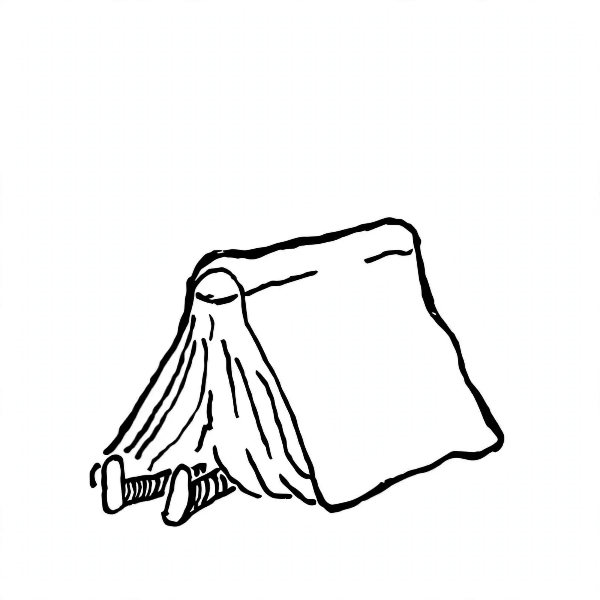

Pregunta 1
¿Te ayuda la página?
Invitame un cafecito

GG-PUR
Guías Gratis para la Prueba Única de Residencias de Uruguay
gg-pur.vercel.app — Resúmenes 100% gratis
Respondidas
0 / 807
Correctas
0
Precisión
0%
Progreso0%
Filtrar banco:
Mostrando 677 preguntas
Pregunta 2
Paciente varón, 23 años portador del virus de inmunodeficiencia humana (VIH) sin tratamiento antirretroviral, que consulta en emergencia por tos y sensación febril de 10 días. Radiografía de tórax: infiltrado intersticial bilateral a predominio peri-hiliar. Gasometría arterial ventilando espontáneamente al aire: pH 7.38; pO2 75 mmHg; pCO2 35 mmHg. ¿Cuál es el primer diagnóstico a plantear?
Pregunta 3
Considere un lactante de 7 meses con pielonefritis aguda. ¿Cuál es la complicación locorregional grave más frecuente?
Pregunta 4
Daniel, 49 años, médico. Consulta por dolor en cara externa de tobillo izquierdo. Refiere que, jugando al fútbol, sufre una caída sobre el pie en flexión plantar e inversión máxima, instalando en ese momento dolor agudo leve-moderado en región referida, acompañado de edema e impotencia funcional moderada. Al examen presenta franca asimetría de pies, a expensas de edema en región de maléolo externo de pie izquierdo con dolor a la palpación, sin crepitación. Resto sin particularidades. ¿Cuál de las siguientes consideraciones diagnósticas es correcta?
Pregunta 5
En población general adulta, el primer procedimiento diagnóstico para diabetes mellitus es:
Pregunta 6
La lumbalgia es un motivo de consulta muy prevalente en el primer nivel de atención. Al menos, el 70-80 % de la población adulta tendrá un episodio durante alguna etapa de su vida. Respecto a las múltiples causas que pueden originar este dolor, marque la opción correcta:
Pregunta 7
Con relación a la vaginosis bacteriana fuera del embarazo:
Pregunta 8
Señale los actos médicos que requieren consentimiento informado, según la normativa uruguaya:
Pregunta 9
En relación con el uso de dexametasona en forma prenatal para la inducción de la maduración pulmonar fetal:
Pregunta 10
De los siguientes antipsicóticos de segunda generación, el que presenta menor riesgo de síndrome metabólico es:
Pregunta 11
Hombre de 52 años, consulta por enterorragia. Comienza hace 24 hs. con sangre roja mezclada con las materias. Reitera en 2 oportunidades. No melenas ni hematemesis. No gleras. Consultó hace 5 meses por episodio similar. Marque la opción correcta:
Pregunta 12
Con respecto a las lesiones precursoras del cáncer de cuello uterino:
Pregunta 13
Embarazada de 28 años, sana, primigesta, cursando 25 semanas de edad gestacional (EG), concurre a control con resultado de las rutinas del segundo trimestre: VDRL y virus de inmunodeficiencia humana (VIH) no reactivos, examen de orina normal, urocultivo negativo. La prueba de tolerancia oral a la glucosa (PTOG) informa: glucemia en ayunas 0.91 g/L; glucemia 1 hora post-carga 2.10 g/L; glucemia 2 horas post-carga 1.50 g/L. Se encuentra asintomática. Su información a la paciente es:
Pregunta 14
Respecto a las distintas etiopatogenias del ataque cerebrovascular (ACV) isquémico, marque la opción correcta:
Pregunta 15
En un lactante con bronquiolitis, ¿qué alteraciones fisiopatológicas pueden evaluarse mediante la oximetría de pulso?
Pregunta 16
Los anticonceptivos orales combinados con etinilestradiol y gestágenos aumentan el riesgo de:
Pregunta 17
Ante una hemorragia postparto por atonía uterina luego del alumbramiento completo, el tratamiento inicial indicado es:
Pregunta 18
El consentimiento informado para la atención clínica de un paciente se define como:
Pregunta 19
En relación con el tratamiento de la sífilis durante el embarazo:
Pregunta 20
La patología que causa disfagia debido a alteración secundaria de la motilidad esofágica es:
Pregunta 21
¿Cuál de las siguientes representa una contraindicación absoluta para la lactancia materna?
Pregunta 22
La tos convulsa es una enfermedad inmunoprevenible, contándose con varias estrategias en vacunación. ¿Cuál de las siguientes estrategias se ha mostrado más efectiva para evitar la enfermedad y sus complicaciones en recién nacidos y lactantes menores de 6 meses?
Pregunta 23
En relación con la quimioprofilaxis para la tuberculosis en población adulta, el medicamento de elección es:
Pregunta 24
¿Cuál de los siguientes NO es un factor de riesgo para desarrollar bronquiolitis grave?
Pregunta 25
En relación con el tratamiento farmacológico de la enfermedad pulmonar obstructiva crónica (EPOC) en fase estable:
Pregunta 26
Mujer de 25 años, cursando embarazo, es derivada de ginecología por presentar taquicardia, palpitaciones, temblores y tumoración en cuello a izquierda. TSH disminuida, T4 elevada. Ecografía de cuello muestra nódulo de 4 cm en lóbulo izquierdo de tiroides, resto de la glándula normal. Se inició tratamiento médico logrando la eufunción tiroidea. ¿Cuál es el tratamiento indicado?
Pregunta 27
Embarazada de 17 años, sana, primigesta, cursando 34 semanas de edad gestacional. Embarazo bien controlado y tolerado hasta el momento actual. Consulta por cefaleas, acúfenos y fosfenos. Dolor epigástrico. Se constata PA 180/110 mmHg y luego 170/100 mmHg. Sin otros elementos de alarma obstétrica, latidos fetales presentes y dentro de límites normales. Se realiza examen de orina en emergencia que no muestra proteinuria. El diagnóstico inicial es:
Pregunta 28
El tratamiento o manejo conservador de los pacientes adultos con oclusión de intestino delgado sin sufrimiento vascular consiste en:
Pregunta 29
Mujer de 34 años, fumadora, sin hijos. Portadora de dispositivo intrauterino (DIU) hace 8 años. Concurre a la consulta con resultado de colpocitología oncológica que informa: alteraciones celulares compatibles con L-SIL. A la especuloscopía se constata un cuello sano. ¿Qué conducta debe adoptarse inicialmente?
Pregunta 30
¿Cuál es la conducta recomendada ante la sospecha de una infección del tracto urinario en un lactante febril?
Pregunta 31
Acerca de las fístulas anales/perianales, es correcto que:
Pregunta 32
Con respecto a la presencia de albúmina en el examen de orina 24 hs en el paciente diabético adulto:
Pregunta 33
Acerca de los tumores de estroma gastrointestinal (GIST) gástricos, es correcto que:
Pregunta 34
Varón de 2 años, sano, con Certificado Esquema de Vacunación vigente. Consulta por edema bipalpebral de ojo derecho. Enfermedad actual: comienza 24 hs antes de la consulta con dolor, tumefacción y rubor inicialmente en párpado superior, agrega en párpado inferior de ojo derecho, que fue en aumento; fiebre de hasta 39.4 °C de temperatura axilar, decaimiento y rechazo parcial de alimento. Examen físico: Triángulo de Evaluación Pediátrica estable. Reactivo, frecuencia respiratoria 19 respiraciones por minuto (rpm), frecuencia cardíaca 90 ciclos por minuto (cpm), T. axilar 38.2 °C. Tiempo de recoloración instantáneo. Bien hidratado y perfundido. Piel y mucosas normocoloreadas. Edema bipalpebral de ojo derecho con rubor y calor. Sin zonas fluctuantes. Apertura y movilidad ocular conservadas. No proptosis. No se constatan secreciones conjuntivales. Se observa lesión exudativa en región frontal derecha secundaria a picadura de mosquito evolucionada. Resto del examen físico sin particularidades. ¿Cuál de las siguientes combinaciones de exámenes de laboratorio a solicitar es la más adecuada en este caso?
Pregunta 35
Martin, 17 años, estudiante. Comienza hace 2 días con prurito ocular, secreción purulenta escasa, visión borrosa que mejora al parpadear, congestión ocular. Días previos cursó resfrío común. No dolor ocular, no fotofobia ni disminución de agudeza visual. Al examen: párpados sin particularidades, hiperemia conjuntival, ambas pupilas son simétricas, reflejo fotomotor directo y consensual conservado bilateral, no adenomegalia preauricular. ¿Qué diagnóstico presuntivo hace?
Pregunta 36
¿Cuál de las siguientes es una contraindicación absoluta para la realización de punción lumbar en un niño con sospecha de meningoencefalitis aguda?
Pregunta 37
Ante un paciente de 11 años que concurrió solo a la puerta de emergencia por un cuadro bronco obstructivo con elementos clínicos de insuficiencia respiratoria, ¿cuál es la primera conducta que debe adoptar el médico que lo recibe?
Pregunta 38
María, 28 años, maestra, vive sola, reside en Montevideo, importante carga laboral asociada a responsabilidad de la dirección de la escuela donde trabaja, cargo que asumió hace tres meses. Antecedentes personales: estado hipertensivo del embarazo y migraña diagnosticada hace 10 años. Consulta hoy por cefalea de horas de evolución, pulsátil, hemicraneana a derecha, fotofobia, no fosfenos, no acufenos. Asocia sensación nauseosa, no vómitos. Se automedicó con ibuprofeno 600 mg sin alivio. Ha presentado episodios similares, esporádicos, desde el momento del diagnóstico de migraña, que mejoran con tratamiento con antiinflamatorios no esteroideos. En referencia a la medicación de primera línea, ¿cuál indicaría en este momento para abortar el dolor?
Pregunta 39
El compromiso de cuidar a los y las pacientes, ayudar a que recuperen un mejor estado de salud y curar, por medio de los tratamientos disponibles y la toma de decisiones del profesional en base al conocimiento de la medicina y la experiencia terapéutica, se fundamenta en el principio bioético de:
Pregunta 40
Hombre de 64 años, consulta por dolor abdominal, detención del tránsito para materias y gases de 48 h con distensión abdominal a predominio derecho. Desde hace 5 meses presenta cólicos abdominales a izquierda que ceden con expulsión de gases y pseudodiarrea. Al examen abdominal se destaca distensión abdominal con dolor a predominio en flanco y fosa ilíaca derecha. El diagnóstico clínico más probable es:
Pregunta 41
¿Cuál es la duración recomendada del tratamiento con amoxicilina en faringitis estreptocócica en la edad pediátrica?
Pregunta 42
Acerca del carcinoma medular de tiroides, es correcto que:
Pregunta 43
Violeta, 22 años. Antecedentes personales: rinitis alérgica estacional. Hace 10 días presenta cuadro de infección respiratoria que es interpretado como rinosinusitis bacteriana, por lo que fue medicada con amoxicilina-clavulánico cada 8 hs. por 5 días. Dado que persistía con rinitis, se automedica con azitromicina 500 mg/día por 3 días más. En el día de hoy, consulta por flujo vaginal, blanco como leche cortada, pruriginoso. Usted lo interpreta como una probable candidiasis vaginal y:
Pregunta 44
Mariza, 26 años, maestra, trabaja doble horario en escuela rural a dos km de su casa, vive con su pareja, no tiene hijos. Consulta por dolor lumbar tipo cólico de aparición insidiosa horas antes, en el correr del día fue aumentando hasta hacerse insoportable. En este momento tiene una intensidad de 10/10. Gran inquietud, náuseas, vómitos en una oportunidad. No fiebre. Hace un año presentó episodio similar que calmo con medicación intravenosa. No reapareció y no volvió a control. El planteo diagnóstico es de cólico nefrítico. En el seguimiento de esta paciente, ¿qué estudio imagenológico considera solicitar en primera instancia para valoración?
Pregunta 45
El estudio citoquímico del líquido céfalorraquídeo de un paciente adulto con planteo de meningoencefalitis aguda (MEA) es el siguiente: presión de salida > 180 mmH20; glucosa 30 mg/dL; proteínas 300 mg/dL; glóbulos blancos 2 000/L, 90 % son polimorfonucleares; glóbulos rojos 0. El análisis de este permite plantear que el agente etiológico más probable es:
Pregunta 46
Mujer de 28 años, soltera, extranjera. Vive en nuestro país desde hace 1 año, no tiene residencia legal. Primigesta, sana. Concurre a policlínica de salud sexual y reproductiva. Cursando embarazo de 7 semanas por ecografía, manifiesta intención de interrupción voluntaria del embarazo (IVE). En cuanto a la conducta del equipo multidisciplinario:
Pregunta 47
Con respecto al tratamiento de la cervicitis gonocócica causada por Neisseria gonorrhoeae:
Pregunta 48
La hipertrofia prostática benigna (HPB) es una afección frecuente en varones luego de los 50 años. Mencione lo correcto en referencia a las probabilidades que tiene un hombre de presentar síntomas secundarios a HPB según la edad:
Pregunta 49
Consulta una paciente 34 años por dolor hipogástrico y genitorragia intermenstrual. Al examen se constata dolor a la palpación profunda de hipogastrio, sin defensa ni dolor a la decompresión. Al examen genital, dolor a la movilización del cuello, útero de tamaño normal doloroso a la compresión y dolor en fondos de saco laterales sin tumoraciones. A la especuloscopía se constata metrorragia amarronada escasa fétida. Este cuadro transcurre en apirexia. Marque la opción correcta:
Pregunta 50
Con referencia al tratamiento de la insuficiencia cardíaca:
Pregunta 51
Martin, 17 años, estudiante. Comienza hace 2 días con prurito ocular, secreción purulenta escasa, visión borrosa que mejora al parpadear, congestión ocular. Días previos cursó resfrío común. No dolor ocular, no fotofobia ni disminución de agudeza visual. Al examen: párpados sin particularidades, hiperemia conjuntival, ambas pupilas son simétricas, reflejo fotomotor directo y consensual conservado bilateral, no adenomegalia preauricular. Frente a este paciente, ¿qué conducta toma?
Pregunta 52
Mujer, 57 años. Consulta por fatigabilidad. Examen físico: palidez mucosa con ictericia de conjuntivas. Lengua totalmente depapilada, roja y brillante. Polo de bazo. Hemograma: glóbulos rojos 1 800 000; hemoglobina 7 g/dL; hematocrito 20 %; VCM 120 fL; CHCM 29 g/dL; glóbulos blancos 2300/mm^3 (neutrófilos 70 %, linfocitos 25 %); plaquetas 89 000/mm^3. Lámina periférica: anisocitosis, macrocitosis, polilobocitos, macroplaquetas. Índice reticulocitario 1 %. Visto los hallazgos clínicos y de laboratorio, el planteo clínico es:
Pregunta 53
¿Cuándo debe realizarse screening con ecografía de cadera, destinada a descartar displasia congénita?
Pregunta 54
Sexo femenino. 58 años. Peso 80 kg. Talla 1.62 m. Nefrectomía hace 7 días por carcinoma renal; fue dada de alta a domicilio. Instala disnea de reposo en forma brusca, por lo cual consulta en emergencia. Niega otros síntomas. Al examen: lúcida, bien perfundida, discreta palidez cutáneo-mucosa. PA 130/80 mmHg, frecuencia respiratoria 26 respiraciones por minuto, frecuencia cardíaca 104 ciclos por minuto, saturación de O2 92 %. Examen pleuropulmonar sin alteraciones. Se plantea que tenga un probable tromboembolismo pulmonar (TEP). Señale qué estudio solicitaría para confirmar este planteo:
Pregunta 55
El principal efecto anticonceptivo de la anticoncepción hormonal combinada con estrógenos y gestágenos se basa en:
Pregunta 56
Hombre de 21 años, con planteo clínico de apendicitis aguda. ¿Cuál de los siguientes criterios tiene mayor sensibilidad para hacer diagnóstico?
Pregunta 57
¿Cuál de las siguientes es indicación de tratamiento antibiótico en una faringitis en la edad pediátrica?
Pregunta 58
Embarazada de 17 años, sana, primigesta, cursando 34 semanas de edad gestacional. Embarazo bien controlado y tolerado hasta el momento actual. Consulta por cefaleas, acúfenos y fosfenos. Dolor epigástrico. Se constata PA 180/110 mmHg y luego 170/100 mmHg. Sin otros elementos de alarma obstétrica, latidos fetales presentes y dentro de límites normales. Se realiza examen de orina en emergencia que no muestra proteinuria. El tratamiento antihipertensivo de elección en la emergencia es:
Pregunta 59
Mujer de 23 años, sin antecedentes a destacar, que comienza hace 5 minutos con sudoración, palpitaciones, parestesias, náuseas y sensación de muerte inminente. Electrocardiograma normal. Perfil tiroideo de hace 1 mes normal. Sin episodios similares previos. El planteo más probable y la intervención farmacológica inicial es:
Pregunta 60
Ante el cuadro clínico de un aborto incompleto no complicado su conducta es:
Pregunta 61
Frente a una consulta por constipación crónica es necesario indagar factores perpetuadores, entre ellos el consumo crónico de fármacos. ¿Qué fármaco usado en forma crónica, frecuentemente perpetúa la constipación?
Pregunta 62
Pedro, 52 años, portador de diabetes mellitus 2 de 5 años de evolución, en tratamiento con metformina 500 mg tres veces al día. Exfumador. Sedentario. No otros factores de riesgo cardiovasculares. Niega síntomas sugestivos de repercusiones macro y microangiopáticas. Del examen físico se destaca: PA 130/70 mmHg, IMC 32 kg/m^2. Resto normal. De los últimos exámenes paraclínicos se destaca: HbA1c 8 %, examen de orina normal, cociente albúmina/creatinina en orina: 20 mg/g. Frente a este paciente que viene a control en salud, usted considera que:
Pregunta 63
Varón de 2 años, sano, con Certificado Esquema de Vacunación vigente. Consulta por edema bipalpebral de ojo derecho. Enfermedad actual: comienza 24 hs antes de la consulta con dolor, tumefacción y rubor inicialmente en párpado superior, agrega en párpado inferior de ojo derecho, que fue en aumento; fiebre de hasta 39.4 °C de temperatura axilar, decaimiento y rechazo parcial de alimento. Examen físico: Triángulo de Evaluación Pediátrica estable. Reactivo, frecuencia respiratoria 19 respiraciones por minuto (rpm), frecuencia cardíaca 90 ciclos por minuto (cpm), T. axilar 38.2 °C. Tiempo de recoloración instantáneo. Bien hidratado y perfundido. Piel y mucosas normocoloreadas. Edema bipalpebral de ojo derecho con rubor y calor. Sin zonas fluctuantes. Apertura y movilidad ocular conservadas. No proptosis. No se constatan secreciones conjuntivales. Se observa lesión exudativa en región frontal derecha secundaria a picadura de mosquito evolucionada. Resto del examen físico sin particularidades. ¿Cuál es su conducta inicial en este caso?
Pregunta 64
¿Cuál de las siguientes constituye una complicación loco regional frecuente de una neumonía adquirida en la comunidad en la edad pediátrica?
Pregunta 65
Consulta una paciente 34 años por dolor hipogástrico y genitorragia intermenstrual. Al examen se constata dolor a la palpación profunda de hipogastrio, sin defensa ni dolor a la decompresión. Al examen genital, dolor a la movilización del cuello, útero de tamaño normal doloroso a la compresión y dolor en fondos de saco laterales sin tumoraciones. A la especuloscopía se constata metrorragia amarronada escasa fétida. Este cuadro transcurre en apirexia. ¿Cuál es el tratamiento inicial indicado?
Pregunta 66
Los conceptos de eutanasia y suicidio medicamente asistido están comprendidos dentro de la reflexión bioética al final de la vida. Generan conflictos éticos que para la bioética principialista podrían identificarse entre los principios de:
Pregunta 67
En una paciente adulta con enfermedad de Graves, es correcto que:
Pregunta 68
El uso de dexametasona en el tratamiento de un paciente adulto con MEA se realiza:
Pregunta 69
Paciente de 25 años, sana, con antecedentes de 1 parto de pretérmino a las 30 semanas. Consulta cursando 32 semanas de edad gestacional por contracciones uterinas dolorosas (CUD) de 4 horas de evolución. Refiere expulsión de limos, sin otra sintomatología. Actualmente 2 CUD en 10 minutos de 30 segundos de duración. Se encuentra apirética, normotensa, con altura uterina acorde y tono uterino normal, latidos fetales normales. Al tacto vaginal se constata: cuello uterino de 0.5 cm longitud, permeable 2 cm. Membranas íntegras. Su diagnóstico inicial es:
Pregunta 70
María, 28 años, maestra, vive sola, reside en Montevideo, importante carga laboral asociada a responsabilidad de la dirección de la escuela donde trabaja, cargo que asumió hace tres meses. Antecedentes personales: estado hipertensivo del embarazo y migraña diagnosticada hace 10 años. Consulta hoy por cefalea de horas de evolución, pulsátil, hemicraneana a derecha, fotofobia, no fosfenos, no acufenos. Asocia sensación nauseosa, no vómitos. Se automedicó con ibuprofeno 600 mg sin alivio. Ha presentado episodios similares, esporádicos, desde el momento del diagnóstico de migraña, que mejoran con tratamiento con antiinflamatorios no esteroideos. En referencia al seguimiento de esta paciente, marque la opción correcta:
Pregunta 71
Los equipos de salud deben siempre considerar la violencia de pareja como causa o agravamiento de los problemas de salud que presenta una mujer. ¿Cómo procedería si sospecha una situación de este tipo en el marco de la consulta?
Pregunta 72
Mujer de 24 años que consulta en emergencia por dolor, rubor, eritema e hinchazón a nivel del pulpejo del 2do dedo de mano derecha de 24 hs. de evolución. Al examen se encuentra edematizado, doloroso y muy tenso a nivel de la falange distal en la zona palmar del 2do dedo. En este cuadro clínico, marque la opción correcta:
Pregunta 73
Frente a una neumonía adquirida en la comunidad en la edad pediátrica, ¿cuál de los siguientes constituye un criterio clínico de hospitalización?
Pregunta 74
Acerca de las infecciones de piel y partes blandas en adultos, es correcto que:
Pregunta 75
Paciente de 45 años, con antecedentes familiares de trastorno bipolar, antecedentes personales de dos episodios depresivos con remisión completa a los 34 y 39 años. Comienza hace 6 semanas con anhedonia, apatía, abulia, astenia, adinamia, insomnio de mantenimiento, inhibición psicomotriz, hipoprosexia. El diagnóstico más probable es:
Pregunta 76
Un paciente portador de cirrosis Child B concurre a emergencia por ascitis grado II. Con respecto a la paracentesis diagnóstica, ¿cuándo se realiza?
Pregunta 77
Ante la presencia de un síndrome de abstinencia en un paciente con trastorno por consumo de alcohol, el tratamiento para evitar una encefalopatía de Wernicke es:
Pregunta 78
Hombre de 45 años, consulta por dolor en fosa ilíaca izquierda (FII) de 1 semana de evolución, de aumento progresivo. Desde hace 4 días fiebre, con picos de 39 °C en las últimas 48 h. Al examen dolor y ocupación en FII. Tomografía computada (TC): engrosamiento de colon en FII, con divertículos y presencia de una colección en contacto con la pared abdominal y el colon de 6 cm. Resto sin alteraciones. ¿Cuál es el planteo terapéutico inicial en este paciente?
Pregunta 79
Mujer, 57 años. Consulta por fatigabilidad. Examen físico: palidez mucosa con ictericia de conjuntivas. Lengua totalmente depapilada, roja y brillante. Polo de bazo. Hemograma: glóbulos rojos 1 800 000; hemoglobina 7 g/dL; hematocrito 20 %; VCM 120 fL; CHCM 29 g/dL; glóbulos blancos 2300/mm^3 (neutrófilos 70 %, linfocitos 25 %); plaquetas 89 000/mm^3. Lámina periférica: anisocitosis, macrocitosis, polilobocitos, macroplaquetas. Índice reticulocitario 1 %. Los estudios diagnósticos para confirmar su planteo serían:
Pregunta 80
La sífilis es una infección de transmisión sexual, sistémica, de evolución crónica, con períodos asintomáticos, causada por una espiroqueta denominada Treponema pallidum. Respecto a las distintas etapas en personas inmunocompetentes, diría que:
Pregunta 81
En un porcentaje menor de adultos con hipertensión arterial, se puede identificar una causa específica y potencialmente reversible. Es causa de hipertensión arterial secundaria:
Pregunta 82
¿Cuál de los siguientes factores de riesgo individuales aumenta el riesgo del cáncer gástrico (adenocarcinoma)?
Pregunta 83
Paciente de 25 años, sana, con antecedentes de 1 parto de pretérmino a las 30 semanas. Consulta cursando 32 semanas de edad gestacional por contracciones uterinas dolorosas (CUD) de 4 horas de evolución. Refiere expulsión de limos, sin otra sintomatología. Actualmente 2 CUD en 10 minutos de 30 segundos de duración. Se encuentra apirética, normotensa, con altura uterina acorde y tono uterino normal, latidos fetales normales. Al tacto vaginal se constata: cuello uterino de 0.5 cm longitud, permeable 2 cm. Membranas íntegras. Si hubiera tenido contacto con esta paciente en su primera consulta de control de embarazo a las 10 semanas, de acuerdo con sus antecedentes obstétricos, siendo asintomática y con examen físico normal, ¿qué medidas de profilaxis hubiera tomado?
Pregunta 84
Con referencia a los exámenes complementarios en un paciente adulto con insuficiencia cardíaca (IC):
Pregunta 85
Para diagnóstico de acalasia se espera encontrar en la manometría esofágica, marque lo correcto:
Pregunta 86
Sexo femenino. 58 años. Peso 80 kg. Talla 1.62 m. Nefrectomía hace 7 días por carcinoma renal; fue dada de alta a domicilio. Instala disnea de reposo en forma brusca, por lo cual consulta en emergencia. Niega otros síntomas. Al examen: lúcida, bien perfundida, discreta palidez cutáneo-mucosa. PA 130/80 mmHg, frecuencia respiratoria 26 respiraciones por minuto, frecuencia cardíaca 104 ciclos por minuto, saturación de O2 92 %. Examen pleuropulmonar sin alteraciones. Se plantea que tenga un probable tromboembolismo pulmonar (TEP). Una vez confirmado el diagnóstico de TEP, ¿cuál es el tratamiento inicial en esta paciente?
Pregunta 87
Varón de 2 años, sano, con Certificado Esquema de Vacunación vigente. Consulta por edema bipalpebral de ojo derecho. Enfermedad actual: comienza 24 hs antes de la consulta con dolor, tumefacción y rubor inicialmente en párpado superior, agrega en párpado inferior de ojo derecho, que fue en aumento; fiebre de hasta 39.4 °C de temperatura axilar, decaimiento y rechazo parcial de alimento. Examen físico: Triángulo de Evaluación Pediátrica estable. Reactivo, frecuencia respiratoria 19 respiraciones por minuto (rpm), frecuencia cardíaca 90 ciclos por minuto (cpm), T. axilar 38.2 °C. Tiempo de recoloración instantáneo. Bien hidratado y perfundido. Piel y mucosas normocoloreadas. Edema bipalpebral de ojo derecho con rubor y calor. Sin zonas fluctuantes. Apertura y movilidad ocular conservadas. No proptosis. No se constatan secreciones conjuntivales. Se observa lesión exudativa en región frontal derecha secundaria a picadura de mosquito evolucionada. Resto del examen físico sin particularidades. ¿Cuál es la etiología más probable en este caso?
Pregunta 88
Hombre de 53 años, obeso, con antecedentes de pirosis de años de evolución, consumidor crónico de omeprazol. Comienza hace 2 meses con disfagia, inicialmente para sólidos y actualmente para papillas. Tolera líquidos. Regurgitaciones, odinofagia y adelgazamiento leve. ¿Cuál es el primer diagnóstico a plantear?
Pregunta 89
65 años, varón. Fumador, hipertenso de larga data tratada con telmisartán. En preoperatorio urológico se constata fibrilación auricular (FA). Se encuentra asintomático en lo cardiovascular. Al examen físico: bien coloreado y perfundido. Ritmo irregular de 90 ciclos por minuto (cpm) central, PA 130/80 mmHg. Examen pleuropulmonar normal. Marque la opción terapéutica correcta:
Pregunta 90
Mujer de 43 años, antecedentes personales de apendicitis y cirugía ginecológica (histerectomía). Consulta por dolor abdominal, vómitos y detención del tránsito para materias y gases de 36 hs de evolución. Al examen presenta distensión abdominal, dolor difuso sin reacción peritoneal, incisión McBurney y mediana infraumbilical, ruidos hidroaéreos de timbre y frecuencia aumentados. La etiología más probable que produce este caso clínico se encuentra:
Pregunta 91
Todos los contactos menores de 15 años de pacientes con enfermedad tuberculosa, cualquiera sea la localización y categoría diagnóstica, deberán ser estudiados con:
Pregunta 92
El tratamiento farmacológico de elección en el paciente diabético adulto con albuminuria persistentemente elevada es:
Pregunta 93
Un paciente portador de cirrosis Child B concurre a emergencia por ascitis grado II. ¿Cuál es la conducta más adecuada si se comprueba que el recuento de polimorfonucleares en el líquido de ascitis es superior a 250/mm^3?
Pregunta 94
Paciente varón, 23 años portador del virus de inmunodeficiencia humana (VIH) sin tratamiento antirretroviral, que consulta en emergencia por tos y sensación febril de 10 días. Radiografía de tórax: infiltrado intersticial bilateral a predominio peri-hiliar. Gasometría arterial ventilando espontáneamente al aire: pH 7.38; pO2 75 mmHg; pCO2 35 mmHg. De acuerdo con su planteo, ¿qué fármaco(s) indicaría para iniciar el tratamiento?
Pregunta 95
¿Quiénes pueden acceder a la historia clínica de un paciente sin su consentimiento según la Ley N° 18.335 (Derechos y obligaciones de pacientes y usuarios de los servicios de salud)?
Pregunta 96
Varón de 2 años, sano, con Certificado Esquema de Vacunación vigente. Consulta por edema bipalpebral de ojo derecho. Enfermedad actual: comienza 24 hs antes de la consulta con dolor, tumefacción y rubor inicialmente en párpado superior, agrega en párpado inferior de ojo derecho, que fue en aumento; fiebre de hasta 39.4 °C de temperatura axilar, decaimiento y rechazo parcial de alimento. Examen físico: Triángulo de Evaluación Pediátrica estable. Reactivo, frecuencia respiratoria 19 respiraciones por minuto (rpm), frecuencia cardíaca 90 ciclos por minuto (cpm), T. axilar 38.2 °C. Tiempo de recoloración instantáneo. Bien hidratado y perfundido. Piel y mucosas normocoloreadas. Edema bipalpebral de ojo derecho con rubor y calor. Sin zonas fluctuantes. Apertura y movilidad ocular conservadas. No proptosis. No se constatan secreciones conjuntivales. Se observa lesión exudativa en región frontal derecha secundaria a picadura de mosquito evolucionada. Resto del examen físico sin particularidades. ¿Cuál es el diagnóstico más probable en este caso?
Pregunta 97
Acerca de los pólipos de colon, es correcto que:
Pregunta 98
En referencia al tabaquismo, para definir a una persona como exfumadora se requiere:
Pregunta 99
La presencia de cianosis central en un lactante con bronquiolitis es un signo que aparece cuando la cantidad de hemoglobina reducida es mayor al:
Pregunta 100
Hombre, 69 años, consulta por dolor en fosa ilíaca izquierda (FII) que aparece hace 4 días en forma brusca, aumenta en el tiempo y se hace continuo, irradiándose a hipogastrio. Se acompaña de fiebre y náuseas. En los últimos 3 años ha presentado 2 episodios similares. Al examen, dolor en FII con defensa. Tomografía computada (TC) muestra engrosamiento de las paredes del colon sigmoides con algunos divertículos y alteración inflamatoria de la grasa pericólica. En este paciente se debe plantear:
Pregunta 101
Acerca de las infecciones de piel y partes blandas complicadas y graves del adulto, es correcto que:
Pregunta 102
Un paciente con ataque cerebrovascular (ACV) hemorrágico ingresa con PA 200/110 mmHg, ¿cuál es la conducta terapéutica recomendada?
Pregunta 103
Paciente de 32 años, con antecedentes obstétricos de 3 gestaciones, 1 aborto espontáneo y 2 cesáreas, cursando 13 semanas de edad gestacional (EG). De las rutinas del primer trimestre se destaca grupo A Rh (D) negativo, con títulos positivos de anticuerpos irregulares anti-D. Asintomática. ¿Cuál es su diagnóstico?
Pregunta 104
Hombre de 63 años, comienza hace 4 meses con disfagia, principalmente para líquidos fríos. Se acompaña de regurgitaciones de lo ingerido y en ocasiones dolor retroesternal bajo. Adelgazamiento de 12 kg. Se diagnostica acalasia. El tratamiento más efectivo para este paciente es:
Pregunta 105
En cuanto al asesoramiento según el modelo de reducción de riesgos y daños ante casos de embarazo no deseado/no intencional:
Pregunta 106
Durante el control del embarazo, el screening combinado del primer trimestre incluye las siguientes medidas:
Pregunta 107
Manuel 59 años. Panadero. Fumador. Consulta por omalgia derecha de meses de evolución, mecánica, insidiosa, no irradiada, que cede parcialmente con antiinflamatorios no esteroideos (AINEs), sin componente nocturno ni parestesias de miembro superior derecho (MSD). Hace unos días agrega disminución de las fuerzas en algunos movimientos del MSD. Refiere episodios de omalgias a derecha leves y mecánicas intermitentes, desde hace años. Del examen de hombro derecho se destaca: no asimetrías ni signos inflamatorios articulares. No dolor a la palpación articular. Arco doloroso positivo y dificultad para mantener la abducción activa a 90°. Resto sin particularidades. Examen neurológico normal. Respecto a la presentación clínica, usted plantea que se trata de un/a:
Pregunta 108
¿Cuál de los siguientes es un requisito para comenzar la alimentación semisólida en lactantes?
Pregunta 109
Frente a un paciente que consulta por ojo rojo y dolor ocular, ¿qué otro síntoma o signo orienta a plantear glaucoma agudo?
Pregunta 110
Micaela, 32 años, doméstica; convive con José (28 años), desempleado y 2 hijos de 8 y 4 años. Sin antecedentes personales a destacar. Concurre a la consulta de su médica de familia, relatando lo siguiente: "Doctora, ya no aguanto más, se acuerda de lo que hemos hablado de que José tiene carácter fuerte... bueno, ayer pasó todos los límites, me insultó y me empujó delante de los niños" y comienza a llorar. Señale cuál sería la forma correcta de proceder en este caso.
Pregunta 111
Mujer de 59 años que se realiza una videogastroscopía que informa a nivel del antro una lesión ulcerada de 4 cm. Anatomía patológica: adenocarcinoma. El estudio más sensible para la estadificación locorregional es:
Pregunta 112
Lactante de 9 meses, sano, bien alimentado. Buen crecimiento y desarrollo. Comenzó 36 h antes con vómitos y fiebre de hasta 38.4 °C axilar. Agregó deposiciones líquidas, sin elementos anormales. Decaimiento, rechazo parcial del alimento. En las últimas dos horas presentó dos vómitos y dos deposiciones líquidas. Al examen físico: reactivo, decaído, apirético, con extremidades cálidas, tiempo de recoloración menor a dos segundos, llanto con lágrimas, pliegue hipoelástico, mucosas algo secas, fontanela anterior normotensa con latido. Frecuencia respiratoria 40 rpm, frecuencia cardíaca 140 cpm. Resto del examen normal. ¿Cuál es el diagnóstico nosológico?
Pregunta 113
¿Cuál de los siguientes factores de virulencia de Bordetella pertussis es el principal implicado en el desarrollo de hiperlinfocitosis en tos convulsa?
Pregunta 114
Hombre de 73 años, fumador, comienza con disfagia progresiva para sólidos y después papillas. Ahora tolera solo líquidos. Desde hace 1 semana presenta, posterior a la ingesta de líquidos, tos intensa y sensación de ahogamiento. Se plantea fístula traqueoesofágica por cáncer de esófago. El tratamiento indicado en este paciente es:
Pregunta 115
Lactante de 9 meses, sano, bien alimentado. Buen crecimiento y desarrollo. Comenzó 36 h antes con vómitos y fiebre de hasta 38.4 °C axilar. Agregó deposiciones líquidas, sin elementos anormales. Decaimiento, rechazo parcial del alimento. En las últimas dos horas presentó dos vómitos y dos deposiciones líquidas. Al examen físico: reactivo, decaído, apirético, con extremidades cálidas, tiempo de recoloración menor a dos segundos, llanto con lágrimas, pliegue hipoelástico, mucosas algo secas, fontanela anterior normotensa con latido. Frecuencia respiratoria 40 rpm, frecuencia cardíaca 140 cpm. Resto del examen normal. ¿Cuál es el tratamiento inicial indicado?
Pregunta 116
Según las recomendaciones del Ministerio de Salud Pública, ¿en cuál de los siguientes casos debe comenzarse la suplementación con hierro medicamentoso a partir del mes de vida?
Pregunta 117
Hombre, 72 años. Diabetes mellitus tipo 2. Cirugía de remplazo valvular aórtico con válvula mecánica por estenosis aórtica hace 1 año. Fibrilación auricular permanente. Enfermedad renal crónica (ERC) con filtrado glomerular (FG) de 58 mL/min. Con respecto a la anticoagulación en este paciente:
Pregunta 118
Manuel 59 años. Panadero. Fumador. Consulta por omalgia derecha de meses de evolución, mecánica, insidiosa, no irradiada, que cede parcialmente con antiinflamatorios no esteroideos (AINEs), sin componente nocturno ni parestesias de miembro superior derecho (MSD). Hace unos días agrega disminución de las fuerzas en algunos movimientos del MSD. Refiere episodios de omalgias a derecha leves y mecánicas intermitentes, desde hace años. Del examen de hombro derecho se destaca: no asimetrías ni signos inflamatorios articulares. No dolor a la palpación articular. Arco doloroso positivo y dificultad para mantener la abducción activa a 90°. Resto sin particularidades. Examen neurológico normal. ¿Cuál de las siguientes opciones usted considera correcta a la hora de resolver este paciente?
Pregunta 119
Mujer de 44 años con controles ginecológicos normales hace un año. Comienza hace 6 meses con alteración de su sangrado uterino habitual de 3/28, siendo actualmente ciclos de 7/24, con abundantes coágulos. No otros fenómenos acompañantes. No distiroidismos. No fiebre. No dolor abdominal. Especuloscopía: cuello sano, metrorragia moderada de sangre roja con coágulos, sin fetidez. Tacto vaginal: útero en anteversoflexión, indoloro, tamaño normal. Anexos libres e indoloros. Su primer planteo etiológico del punto de vista clínico y por frecuencia en esta paciente es:
Pregunta 120
El concepto de enfermedad renal crónica implica:
Pregunta 121
¿Cuál de las siguientes manifestaciones neurológicas está directamente relacionada con la presencia del virus de inmunodeficiencia humana (VIH) en el adulto?
Pregunta 122
Manuel 59 años. Panadero. Fumador. Consulta por omalgia derecha de meses de evolución, mecánica, insidiosa, no irradiada, que cede parcialmente con antiinflamatorios no esteroideos (AINEs), sin componente nocturno ni parestesias de miembro superior derecho (MSD). Hace unos días agrega disminución de las fuerzas en algunos movimientos del MSD. Refiere episodios de omalgias a derecha leves y mecánicas intermitentes, desde hace años. Del examen de hombro derecho se destaca: no asimetrías ni signos inflamatorios articulares. No dolor a la palpación articular. Arco doloroso positivo y dificultad para mantener la abducción activa a 90°. Resto sin particularidades. Examen neurológico normal. Respecto al uso de paraclínica para confirmar el diagnóstico, usted plantea:
Pregunta 123
¿Cuándo se define retraso en la adquisición de las conductas del desarrollo?
Pregunta 124
En referencia al algoritmo diagnóstico de VIH, frente a una primera prueba reactiva usted informa al paciente y:
Pregunta 125
Acerca de las lesiones intraepiteliales epidermoides anales y el cáncer anal epidermoide:
Pregunta 126
En la tuberculosis en población adulta, el estudio PCR GeneXpert ha sido el desarrollo más innovador de los últimos tiempos. Es correcto afirmar que:
Pregunta 127
Según las Recomendaciones sobre prácticas y actitudes en la asistencia del embarazo y nacimiento institucional del Ministerio de Salud Pública, la fase activa del trabajo de parto se define como:
Pregunta 128
Un paciente cirrótico concurre a control y en la ecografía se evidencia un nódulo sólido hepático de 4 cm. Indicar la opción correcta respecto al estudio apropiado para definir la etiología de este.
Pregunta 129
En el control de embarazo normal, ¿cuál de las siguientes combinaciones de vacunas es recomendada en las pautas del Ministerio de Salud Pública?
Pregunta 130
En el control de embarazo, ¿a qué edad gestacional debe solicitar la ecografía precoz con valoración de la translucencia nucal fetal?
Pregunta 131
Hombre de 39 años, con diagnóstico reciente de hepatitis B crónica, presenta niveles elevados de transaminasas y HBeAg positivo. ¿Cuál es la conducta MÁS adecuada?
Pregunta 132
Hombre de 42 años, ingeniero naval. Alérgico a la penicilina. Consulta por consejería sobre infecciones de transmisión sexual. Asintomático. Hace 10 días participó de una fiesta "chemsex" en la cual no usó profilaxis. Deja profilaxis preexposición a VIH (PrEP) hace aproximadamente 8 meses, luego de llegar a un acuerdo con su pareja de tener relaciones sexuales exclusivas. En ese momento se realiza VDRL (RPR) no reactivo y serología de VIH no reactiva. En esta consulta presenta test rápido para sífilis reactivo y test rápido para VIH no reactivo. ¿Qué conducta adopta en este momento, teniendo en cuenta los test rápidos realizados?
Pregunta 133
Al controlar un embarazo, toda paciente tiene el derecho de solicitar un tamizaje gratuito (screening bioquímico de primer trimestre) realizado por el Banco de Previsión Social. ¿Qué riesgos valora esta tamizaje?
Pregunta 134
En un paciente que usted realizó el diagnóstico de tromboembolismo pulmonar masivo, ¿cuál sería el principal objetivo del tratamiento inicial?
Pregunta 135
¿Qué aporta la aplicación del test de Fagerström en la evaluación del paciente tabaquista?
Pregunta 136
En una persona con tendinosis del supraespinoso, ¿qué indicación terapéutica haría además de antiinflamatorios no esteroideos?
Pregunta 137
Acerca del diagnóstico de colangitis aguda, según las guías de Tokio, marque la opción correcta:
Pregunta 138
Hombre de 42 años, ingeniero naval. Alérgico a la penicilina. Consulta por consejería sobre infecciones de transmisión sexual. Asintomático. Hace 10 días participó de una fiesta "chemsex" en la cual no usó profilaxis. Deja profilaxis preexposición a VIH (PrEP) hace aproximadamente 8 meses, luego de llegar a un acuerdo con su pareja de tener relaciones sexuales exclusivas. En ese momento se realiza VDRL (RPR) no reactivo y serología de VIH no reactiva. En esta consulta presenta test rápido para sífilis reactivo y test rápido para VIH no reactivo. ¿Cuándo le recomienda reiniciar profilaxis preexposición a VIH (PrEP) a este paciente?
Pregunta 139
Ingresa a emergencia un varón de 25 años que es asaltado en la vía pública hace 30 minutos. Relata recibir herida de arma blanca. Se constata frecuencia respiratoria de 28 rpm, ventilan ambos campos pulmonares, frecuencia cardíaca de 100 cpm, ruidos cardíacos disminuidos, presión arterial de 80/50 mmHg, relleno venoso yugular. Se constata herida paraesternal izquierda en 4to espacio intercostal. ¿Cuál es su conducta inicial?
Pregunta 140
¿A qué recién nacidos se recomienda tomar una segunda muestra de sangre del talón para realizar el estudio de la pesquisa neonatal?
Pregunta 141
Mujer de 35 años, trae resultado de una colposcopía y la biopsia que informa H-SIL (lesión intraepitelial de alto grado). ¿Qué le indica?
Pregunta 142
¿Cuál de las siguientes es la etiología más frecuente de insuficiencia cardíaca en pacientes adultos?
Pregunta 143
¿Qué elemento tomaría en cuenta para hacer interconsulta con urología para considerar tratamiento quirúrgico en un paciente con hipertrofia prostática benigna?
Pregunta 144
¿Cuál de las siguientes aseveraciones sobre la vacunación en personas embarazadas es correcta según las recomendaciones nacionales (2024)?
Pregunta 145
Mujer de 35 años, antecedentes familiares de diabetes mellitus y obesidad. Concurre a consulta por resultados de analítica solicitada en un control de salud, asintomática. En 3 ocasiones, glucemia en ayunas entre 130-150 mg/dL. ¿Qué diagnóstico plantea en esta paciente?
Pregunta 146
Hombre de 59 años, jubilado de peón rural, tabaquista pesado e hipertensión. Nota dificultad al iniciar la micción y chorro débil, nocturia en la segunda mitad del descanso desde hace varios meses. Goteo postmiccional, episodios aislados de incontinencia y urgencia miccional. No fiebre ni dolor lumbar. Al examen: PA 138/90 mmHg, apirético. Tacto rectal: se palpa la próstata agrandada de tamaño, consistencia firme elástica de superficie homogénea sin irregularidades, indolora. Resto sin alteraciones. ¿Qué diagnóstico presuntivo realiza?
Pregunta 147
Mujer de 17 años, le consulta porque habitualmente previo a la menstruación, presenta flujo vaginal tipo clara de huevo, parecido a su flujo habitual pero en mayor cantidad, sin prurito ni mal olor. ¿Qué conducta clínica tomaría?
Pregunta 148
Hombre de 24 años, sin antecedentes patológicos, presentó desde hace un año un tumor en parte central de cuello, redondeado, de consistencia elástica, con aumento progresivo de tamaño. Al examen físico: tumor de 3x2.5 cm que se moviliza con la deglución y protrusión de la lengua, ubicado por delante y a la izquierda del cartílago tiroides, llegando hasta el hioides. Acerca del tratamiento:
Pregunta 149
En un paciente con un cuadro clínico-radiológico compatible con un vólvulo de sigmoides, marque la opción correcta:
Pregunta 150
En el año 2007, Uruguay incorporó las tablas de la Organización Mundial de la Salud para diagnóstico de estado nutricional. Según estas definiciones, en un niño mayor de 5 años, ¿cómo se define obesidad severa para esa edad y sexo, según el índice de masa corporal?
Pregunta 151
Paciente de 61 años, masculino con cardiopatía isquémica crónica, con infarto de miocardio previo. ¿Cuál es el valor objetivo de colesterol LDL en mg/dL?
Pregunta 152
¿Cómo se realiza el diagnóstico de VIH en los primeros 18 meses de vida?
Pregunta 153
Hombre de 32 años que luego de transgresión alimentaria, consulta en emergencia por dolor anal que es desencadenado durante la evacuación y con 2 horas de duración; asocia rectorragia escasa de sangre roja que nota en el papel higiénico. ¿Cuál es su planteo diagnóstico inicial?
Pregunta 154
¿Cuál de las siguientes es una complicación común asociada a la hepatitis C crónica?
Pregunta 155
Mujer de 46 años, 2 gestaciones y 2 partos vaginales, sin otros antecedentes a destacar, en normopeso, que consulta por irregularidades menstruales de 6 meses de evolución. No mantiene relaciones sexuales desde hace un año, cuando abandona los anticonceptivos orales. Al examen ginecológico, nada a destacar. ¿Cuál es su diagnóstico presuntivo en cuanto a la posible etiología de este sangrado uterino anormal?
Pregunta 156
Mujer de 35 años concurre a control con colpocitología oncológica normal hace 6 meses. ¿Cómo coresponde continuar el screening de cáncer de cuello en esta paciente, según las pautas nacionales actuales (2024)?
Pregunta 157
Acerca del cáncer de mama no invasivo:
Pregunta 158
¿A qué edad gestacional usted debe pedir la prueba de tolerancia oral a la glucosa en el control de un embarazo normal?
Pregunta 159
Mujer, 36 años, asma no controlada. Cefalea hemicraneana pulsátil desde la adolescencia de gran intensidad. Asocia náuseas precedidas de pródromos, desencadenadas por la deprivación de sueño. Ha sido estudiada y tiene diagnóstico de migraña. Alivia con compuestos con ergotamina. Últimamente son más frecuentes y han interferido con su trabajo. ¿Qué seguimiento propone a esta paciente?
Pregunta 160
Mujer de 64 años, portadora de un carcinoma mamario en estadio IV, mastectomizada, bajo tratamiento con quimioterapia. Instaló una infección por SARS-CoV-2 que evolucionó rápidamente a la insuficiencia respiratoria que requirió ventilación mecánica. Falleció a las 48 horas en sala de cuidado críticos. Señale lo correcto respecto a la información a consignar en el certificado de defunción:
Pregunta 161
Mujer de 24 años. Consulta por genitorragia de 4 días de evolución, sin elementos de síndrome funcional anémico, con retraso menstrual de 7 semanas. Al examen ginecológico se constata cuello permeable al dedo en toda su extensión con restos intracavitarios. De los siguientes estudios paraclínicos, ¿cuál es el primer examen a solicitar?
Pregunta 162
Niña de 22 meses. CEV vigente. Una semana previa al ingreso con fiebre hasta 39 °C axilar. Tos catarral, rinorrea y fatiga. Decaimiento, disminución del apetito. Dos consultas previas en emergencia. Al examen: regular estado general, normocoloreada, quejido espiratorio. FR 50 rpm. FC 100 cpm. Bien hidratada y perfundida. Sin tiraje. Murmullo alveolovesicular abolido en 2/3 inferiores de hemitórax derecho con crepitantes por encima. Ritmo regular sin soplos. Resto sin alteraciones. Radiografía de tórax: opacidad qeue ocupa todo el hemitórax derecho, borra fondo de saco costodiafragmático derecho. ¿Cuál es el diagnóstico más probable con los datos que dispone?
Pregunta 163
Acerca del cáncer de mama invasivo:
Pregunta 164
Mujer de 28 años, sexo femenino, con obesidad. Comenzó de forma súbita hace 3 meses con delirios politemáticos y con múltiples mecanismos, alucinaciones auditivas, condicionamiento afectivo y alteraciones conductuales secundarias. Ha presentado alteración atencional desde el inicio de los síntomas, pero mantiene un discurso relativamente coherente. Antes del episodio tenía buen desempeño social y laboral. No muestra un afecto embotado. ¿Cuál es el diagnóstico provisional más adecuado?
Pregunta 165
¿A qué edad gestacional usted debe pedir un exudado para el Estreptococo del grupo B en el control de un embarazo normal?
Pregunta 166
Mujer, 36 años, asma no controlada. Cefalea hemicraneana pulsátil desde la adolescencia de gran intensidad. Asocia náuseas precedidas de pródromos, desencadenadas por la deprivación de sueño. Ha sido estudiada y tiene diagnóstico de migraña. Alivia con compuestos con ergotamina. Últimamente son más frecuentes y han interferido con su trabajo. ¿Qué medicación tiene indicada con finalidad de prevenir o disminuir la frecuencia de las crisis?
Pregunta 167
Mujer de 23 años que se vacunó contra el HPV con dos dosis a los 13 años de edad concurre para control. Según las pautas del año 2024 del Ministerio de Salud Pública de Uruguay, ¿qué le indica usted respecto a la prevención de cáncer de cuello uterino?
Pregunta 168
¿Cuál de las siguientes medidas ha demostrado disminuir la morbimortalidad de la sepsis materna?
Pregunta 169
Varón, 57 años, taximetrista, tabaquista pesado, alimentación en base a comida rápida, sedentario, obeso, tomador de mate en grandes cantidades. Hace 2 o 3 meses pirosis a diario, regurgitaciones, disfonía y tos seca. Adelgaza 5 kg en dos meses con apetito conservado. Múltiples episodios previos que mejoran con ranitidina, automedicado. Persisten síntomas a pesar del uso de este medicamento. ¿Qué estudio solicitaría inicialmente?
Pregunta 170
Mujer, 52 años. Practica tenis 2 o 3 veces por semana. Dolor en hombro derecho de varias semanas de evolución, con empujes y remisiones. Empeora en los últimos 20 días. En ocasiones la despierta durante la noche, interfiere con ponerse o quitarse la ropa o peinarse. Al examen: no se observan asimetrías entre ambos hombros. Sin elementos fluxivos. Presenta dolor a la abducción y elevación del miembro superior derecho. Maniobra de Jobe positiva. ¿Cuál es su diagnóstico presuntivo?
Pregunta 171
Mujer trans, 66 años. Hipertensa y diabetes mellitus tipo 2. Consulta por cefalea holocraneana mayor a izquierda y dolor ocular izquierdo de 6 h, lagrimeo, disminución de la agudeza visual en ojo izquierdo, náuseas, no vómitos. Halos de colores alrededor de las luces. No síntomas focales neurológicos. Examen: PA 170/100 mmHg, hiperemia conjuntival y ciliar, midriasis de ojo izquierdo, ausencia de reflejo fotomotor, agudeza visual de ojo izquierdo 5/10; ojo derecho 8/10. Resto del examen neurológico normal. ¿Cómo confirma el diagnóstico?
Pregunta 172
Hombre, 43 años, diagnóstico reciente de diabetes mellitus 2, sin complicaciones. Normopeso. HbA1c 7 %. ¿Cuál sería el tratamiento farmacológico inicial?
Pregunta 173
Ciclista de 19 años es embestida por auto hace 1 hora. Es traída a urgencia por emergencia móvil inmovilizada en tabla con collarete cervical. Del balance lesional: dolor en hemicuerpo izquierdo, polipnea de 26 cpm, ventilan bien ambos campos pulmonares, frecuencia cardíaca de 110 cpm, presión arterial 100/60 mmHg. Escala de Glasgow de 15, erosiones en hombro izquierdo y base de hemitórax izquierdo, dolor exquisito en muslo izquierdo, donde hay un importante hematoma. ¿Cuál es la conducta inicial?
Pregunta 174
Mujer, 35 años, hipotiroidismo en tratamiento con T4 50 mcg/día, hipertensa, 2 embarazos, 2 partos, utiliza anticonceptivos orales. ¿Cuál de los siguientes factores de riesgo que presenta la paciente es el que más se asocia con el tromboembolismo pulmonar?
Pregunta 175
¿Cuál de los siguientes compuestos hormonales utiliza como anticoncepción de emergencia?
Pregunta 176
¿Cuál de los siguientes elementos es MENOS certero para el diagnóstico de sífilis congénita?
Pregunta 177
¿Cuál de los siguientes tratamientos es adecuado para el manejo de un absceso de antebrazo menor de 5 cm en una niña/o sano?
Pregunta 178
¿Cuál de los siguientes medicamentos indicaría en un paciente con fibrilación auricular de reciente diagnóstico?
Pregunta 179
Sobre el consentimiento informado en la práctica médica:
Pregunta 180
¿Qué característica es frecuente en los niños con obesidad endócrina o genética?
Pregunta 181
¿Qué característica es orientadora de talla baja patológica?
Pregunta 182
Adolescente de 16 años, primigesta, cursando 35 semanas de edad gestacional consulta en primer nivel de atención por cefalea y se constata una PA de 160/110 mmHg. ¿Qué tratamiento medicamentoso de las cifras de presión arterial realiza?
Pregunta 183
31 años, cursando infección respiratoria alta. Despierta con abundante secreción de ojo derecho, purulenta. Dolor a nivel ocular, fotofobia. No alteración de la visión, por momentos borrosa, que se corrige con el parpadeo. Al examen: secreción purulenta unilateral, congestión conjuntival periférica, pupilas simétricas, reflejos pupilares conservados. ¿Qué conducta plantea tomar inicialmente?
Pregunta 184
Hombre de 76 años, fumador. Consulta por disfagia de 3 meses, permanente y progresiva. Esofagogastroscopía muestra estenosis tumoral a 26 cm de la arcada dentaria. Tomografía de abdomen muestra imágenes de secundarismo hepático. Acerca del tratamiento paliativo:
Pregunta 185
Acerca de las complicaciones locales de la pancreatitis aguda biliar:
Pregunta 186
Hombre, 42 años, vive en un refugio. Tos escasamente productiva, sensación febril, sudoración vespertina y un episodio de hemoptisis. Al examen: adelgazado, temperatura axilar de 37.6 °C. Saturación de oxígeno de 95 %. Pleuropulmonar sin particularidades. La radiografía muestra una cavidad en el lóbulo superior derecho sin nivel hidroaéreo. ¿Qué estudio considera necesario para el diagnóstico etiológico?
Pregunta 187
Acerca de los estudios para el cáncer de colon:
Pregunta 188
Hombre de 28 años, sin antecedentes a destacar que consulta en emergencia por rectorragia post defecatoria de 4 días de evolución. No síndrome funcional anémico. Al examen se destaca: normocoloreado. Inspección anoperineal: pequeño plicoma anal. Tacto rectal: esfínter normotónico, sin lesiones ni sangre al guante. ¿Cuál es su conducta?
Pregunta 189
Varón, 57 años, taximetrista, tabaquista pesado, alimentación en base a comida rápida, sedentario, obeso, tomador de mate en grandes cantidades. Hace 2 o 3 meses pirosis a diario, regurgitaciones, disfonía y tos seca. Adelgaza 5 kg en dos meses con apetito conservado. Múltiples episodios previos que mejoran con ranitidina, automedicado. Persisten síntomas a pesar del uso de este medicamento. ¿Con qué medicamento iniciaría el tratamiento?
Pregunta 190
Mujer de 22 años de edad, que se ha realizado interrupción voluntaria del embarazo institucionalizado hace tres días mediante el uso de mifepristona y misoprostol en forma correcta, relata expulsar restos y luego mantiene genitorragia persistente, similar a una menstruación. ¿Cuál es la conducta correcta?
Pregunta 191
El "método deliberativo", propuesto por Diego Gracia para el análisis de casos clínicos éticamente complejos, presupone un tipo especial de racionalidad práctica: la prudencial. ¿Cuáles son las decisiones clínicas que se toman en casos como los antes descritos?
Pregunta 192
Sobre el tratamiento del cáncer de recto:
Pregunta 193
Hombre, 55 años, sin comorbilidades, ni hábitos tóxicos. Historia de 2 días de fiebre, tos productiva mucopurulenta y disnea. Examen: herpes labial, estertores crepitantes, pectoriloquia en base de hemitórax izquierdo. ¿Cuál sería el examen a solicitar para confirmar el diagnóstico?
Pregunta 194
Mujer de 32 años, una gestación, un parto vaginal. Toma anticonceptivos orales. Consulta en policlínica barrial por dolor abdominal en región periumbilical y fosa ilíaca derecha de 48 horas de evolución, náuseas al inicio. Se encuentra en el día 16 del ciclo menstrual. Al examen: normocoloreada. Dolor en fosa ilíaca derecha con defensa. ¿Cuál es su conducta?
Pregunta 195
Mujer de 38 años, con antecedentes personales de trastorno bipolar II. Actualmente presenta un episodio depresivo. ¿Cuál es el tratamiento farmacológico más adecuado para el episodio depresivo actual?
Pregunta 196
¿Cuál es la complicación más frecuente y severa en los pacientes con fibrilación auricular no tratada?
Pregunta 197
Hombre de 78 años. Consulta en emergencia por enterorragia de 3 días de evolución. Antecedentes de diverticulosis con un sangrado previo. Ingresa y se repone con 3 volúmenes de glóbulos rojos. Videocolonoscopía no ve origen del sangrado por abundantes coágulos. Reitera enterorragia de sangre roja y caída del hematocrito. ¿Cuál es la conducta a seguir?
Pregunta 198
Varón de 16 años, sano. Nota hace 3 meses la presencia de tumoración a nivel de la región mamaria derecha, retroareolar. Redondeada, de unos 4 cm de diámetro transversal y cefalocaudal, por 2 cm anteroposterior. De consistencia firme, con hipersensibilidad a la palpación. Se plantea ginecomastia. ¿Cuál de las siguientes conductas está indicada?
Pregunta 199
Acerca de las hernias inguinales:
Pregunta 200
Niño de 7 meses que consulta por vómitos y deposiciones líquidas. Al examen: letárgico, pálido, sin trabajo respiratorio, ojos hundidos, mucosas secas, pliegue hipoelástico, tiempo de recoloración de 4 segundos, frecuencia cardíaca de 160 cpm. ¿Cuál es el tratamiento inicial?
Pregunta 201
¿Cuál es el fundamento moral detrás de la evaluación de la competencia de un paciente en un encuentro clínico?
Pregunta 202
Adolescente de 17 años, madura, con un embarazo de 15 semanas de edad gestacional producto de una relación consentida. Solicita una interrupción voluntaria del embarazo. ¿Cuál es la obligación del equipo asistencial que la recibe, según la normativa legal vigente?
Pregunta 203
Mujer trans, 66 años. Hipertensa y diabetes mellitus tipo 2. Consulta por cefalea holocraneana mayor a izquierda y dolor ocular izquierdo de 6 h, lagrimeo, disminución de la agudeza visual en ojo izquierdo, náuseas, no vómitos. Halos de colores alrededor de las luces. No síntomas focales neurológicos. Examen: PA 170/100 mmHg, hiperemia conjuntival y ciliar, midriasis de ojo izquierdo, ausencia de reflejo fotomotor, agudeza visual de ojo izquierdo 5/10; ojo derecho 8/10. Resto del examen neurológico normal. ¿Qué conducta tomaría?
Pregunta 204
39 años, masculino, enfermedad celíaca. Consulta por astenia, adinamia y fatigabilidad. Examen físico: PA 100/60 mmHg. Palidez cutáneo-mucosa, queilitis angular, lengua depapilada en bordes. Ritmo regular de 96 cpm, no soplos. Hemograma: Hb 9.8 g/dL; VCM 72 fL; CHCM 26 g/dL; plaquetas 250 000/mm^3; glóbulos blancos 7800/mm^3. ¿Cuál de los siguientes exámenes solicitaría para completar el estudio de la anemia del paciente?
Pregunta 205
Mujer, 45 años, infección por VIH y recuento de CD4 de 150 células/mm^3 con riesgo elevado de infecciones oportunistas. ¿Contra qué microorganismo realizaría profilaxis?
Pregunta 206
Mujer de 22 años, trabajadora sexual. Vive con su pareja, varón y dos hijos pequeños. Su pareja está desocupado, presenta consumo problemático de sustancias. El único ingreso del hogar es por su trabajo. Consulta por sospecha de estar embarazada. FUM hace 6 semanas, no usa método anticonceptivo. Con los clientes siempre usa preservativos, su pareja se niega a usarlos, aunque él tampoco quiere tener más hijos. Cuando se embarazó del niño menor, la golpeó para que abortara. "Discutimos mucho por el dinero". Nunca ha maltratado o golpeado a los niños: "es muy buen padre". ¿Qué consideración realiza sobre los niños de esta familia?
Pregunta 207
Varón de 17 años, con antecedente de angina pultácea hace 4 semanas. Consulta por la aparición de una masa cervical lisa, redondeada, elástica, móvil, en el borde anteromedial del esternocleidomastoideo e infrahioideo. La ecografía muestra una lesión anecogénica, líquida, con escaso contenido ecogénico en su interior, eje máximo de 5 cm. No se destaca flujo Doppler, septos o polos sólidos, tiroides normal. Acerca de este paciente, ¿cuál es el diagnóstico presuntivo?
Pregunta 208
Cuál de los siguientes criterios en el score qSOFA modificado para el embarazo es de presunción de sepsis materna?
Pregunta 209
Niña de 22 meses. CEV vigente. Una semana previa al ingreso con fiebre hasta 39 °C axilar. Tos catarral, rinorrea y fatiga. Decaimiento, disminución del apetito. Dos consultas previas en emergencia. Al examen: regular estado general, normocoloreada, quejido espiratorio. FR 50 rpm. FC 100 cpm. Bien hidratada y perfundida. Sin tiraje. Murmullo alveolovesicular abolido en 2/3 inferiores de hemitórax derecho con crepitantes por encima. Ritmo regular sin soplos. Resto sin alteraciones. Radiografía de tórax: opacidad qeue ocupa todo el hemitórax derecho, borra fondo de saco costodiafragmático derecho. ¿Cuál es el siguiente paso más adecuado en el manejo de este paciente?
Pregunta 210
Mujer de 28 años de edad, que en los dos embarazos anteriores tuvo preeclampsia, actualmente consulta por embarazo de 9 semanas de amenorrea. ¿Qué medida indica usted para disminuir la probabilidad de padecer nuevamente una preeclampsia?
Pregunta 211
Paciente de 65 años, fumador desde la juventud. Disfagia de 3 meses de evolución, acompañado de repercusión general. Del examen se destaca adelgazamiento, tórax remodelado, en abdomen no se palpan lesiones. Se solicitó una fibrogastroscopía que informa lesión vegetante ulcerada a 30 cm de la arcada dentaria, infranqueable. En la valoración diagnóstica inicial, ¿cuál sería la conducta adecuada?
Pregunta 212
La pesquisa neonatal incluye la oximetría de pulso pre y postductal. ¿Cuál es el objetivo?
Pregunta 213
Hombre, 42 años, vive en un refugio. Tos escasamente productiva, sensación febril, sudoración vespertina y un episodio de hemoptisis. Al examen: adelgazado, temperatura axilar de 37.6 °C. Saturación de oxígeno de 95 %. Pleuropulmonar sin particularidades. La radiografía muestra una cavidad en el lóbulo superior derecho sin nivel hidroaéreo. Señale el tratamiento recomendado según su diagnóstico:
Pregunta 214
Paciente de 72 años. Ingresa por dolor en hipocondrio derecho de 3 días de evolución, agrega fiebre hace 24 hs. Al examen: confuso, lengua seca, taquicardia, polipnea, ictericia de conjuntivas. Ecografía: litiasis vesicular, dilatación de vía biliar y al menos 2 cálculos en el colédoco. ¿Cuál es la conducta inicial en la urgencia?
Pregunta 215
Mujer, 72 años, tabaquista severa, diabetes mellitus tipo 2, obesidad, sedentaria, hipertensa con mal control. Consulta para control, luego de episodio de AIT reciente; trae paraclínica: CT 278 mg/dL; HDL 42 mg/dL; LDL 210 mg/dL; TG 130 mg/dL; Hb1Ac 8 %; creatinina sérica 0.98 mg/dL; clearance de creatinina 64.718 mL/min. ¿Qué tratamiento antihipertensivo de inicio escoge para esta paciente?
Pregunta 216
Hombre de 63 años, diabético, obeso, alcoholista que consulta en emergencia por hematemesis y síndrome funcional anémico. Refiere dispepsia atípica, plenitud precoz y anorexia de 3 meses de evolución. Examen físico: anemia clínica, taquicardia de 120 cpm. Abdomen sin particularidades. Gastroscopía: lesión vegetante y ulcerada de 7 cm, subcardial con sangrado en napa de toda la tumoración. ¿Cuál es la conducta en la urgencia?
Pregunta 217
¿Cuál de las siguientes condiciones es un signo de alarma en un caso de dengue?
Pregunta 218
Mujer de 22 años, trabajadora sexual. Vive con su pareja, varón y dos hijos pequeños. Su pareja está desocupado, presenta consumo problemático de sustancias. El único ingreso del hogar es por su trabajo. Consulta por sospecha de estar embarazada. FUM hace 6 semanas, no usa método anticonceptivo. Con los clientes siempre usa preservativos, su pareja se niega a usarlos, aunque él tampoco quiere tener más hijos. Cuando se embarazó del niño menor, la golpeó para que abortara. "Discutimos mucho por el dinero". Nunca ha maltratado o golpeado a los niños: "es muy buen padre". ¿Qué intervención realiza en esta situación de violencia de género, con la finalidad de mejorar la seguridad de la mujer (apoyo de primera línea ANIMA)?
Pregunta 219
¿Cuál de los siguientes estudios de la pesquisa neonatal permite sospechar la presencia de hiperplasia adrenal congénita?
Pregunta 220
En un accidente cerebrovascular hemorrágico, ¿cuál es la causa más común de hematoma gangliobasal?
Pregunta 221
Varón, 9 meses. Producto de 4ta gestación, 37 semanas edad gestacional. Peso al nacer 2780 g. Alimentado con pecho directo y preparados para lactantes los 2 primeros meses, luego leche de vaca. Dificultad para incorporar alimentos complementarios, 2 a 3 veces carne roja o blanca por semana. Al examen: peso 8600 g. Talla 70 cm. Palidez cutáneo-mucosa. Panículo adiposo normal, masas musculares normales. Ritmo regular de 110 cpm, sin soplos. Resto sin alteraciones. Hemograma: Hb 7 g/dL; VCM 47 fL; HCM 11.7 pg; ADE 20.8 %; leucocitos 10700 por mm^3; plaquetas 231900 por mm^3. Lámina: hipocromía marcada, anisocitosis, poiquilocitosis. Para iniciar el tratamiento y realizar el seguimiento, ¿cuál de las siguientes conductas está indicada?
Pregunta 222
Varón, 9 meses. Producto de 4ta gestación, 37 semanas edad gestacional. Peso al nacer 2780 g. Alimentado con pecho directo y preparados para lactantes los 2 primeros meses, luego leche de vaca. Dificultad para incorporar alimentos complementarios, 2 a 3 veces carne roja o blanca por semana. Al examen: peso 8600 g. Talla 70 cm. Palidez cutáneo-mucosa. Panículo adiposo normal, masas musculares normales. Ritmo regular de 110 cpm, sin soplos. Resto sin alteraciones. Hemograma: Hb 7 g/dL; VCM 47 fL; HCM 11.7 pg; ADE 20.8 %; leucocitos 10700 por mm^3; plaquetas 231900 por mm^3. Lámina: hipocromía marcada, anisocitosis, poiquilocitosis. ¿Cuál es el tratamiento de elección para este paciente?
Pregunta 223
Respecto al cáncer de colon en Uruguay:
Pregunta 224
Mujer de 59 años de edad, menopausia a los 50 años sin tratamiento hormonal, consulta con resultado de ecografía transvaginal que informa: útero de 87x64x49 mm, ovarios normales, línea endometrial de 12 mm. ¿Qué examen debe solicitar?
Pregunta 225
En relación a la clasificación BI-RADS de la mamografía, ¿cuál es el porcentaje de sospecha de malignidad?
Pregunta 226
¿El uso prolongado de antiinflamatorios no esteroideos en el embarazo se asocia a cuál de los siguientes riesgos?
Pregunta 227
Varón de 4 años, sano. Comienza 24 hs previas con cefalea holocraneana, vómitos y fiebre. Al examen: rigidez de nuca. Se realiza una punción lumbar. Estudio citoquímico del líquido cefalorraquídeo: líquido turbio, 500 glóbulos blancos/mm^3 a predominio de polimorfonucleares, proteína 150 mg/dL, glucosa 10 mg/dL. ¿Qué diagnóstico realiza?
Pregunta 228
Si un niño presenta conductas del neurodesarrollo alteradas e inadecuadas no esperables en ninguna etapa del desarrollo, ¿qué diagnóstico realiza?
Pregunta 229
Mujer, 72 años, tabaquista severa, diabetes mellitus tipo 2, obesidad, sedentaria, hipertensa con mal control. Consulta para control, luego de episodio de AIT reciente; trae paraclínica: CT 278 mg/dL; HDL 42 mg/dL; LDL 210 mg/dL; TG 130 mg/dL; Hb1Ac 8 %; creatinina sérica 0.98 mg/dL; clearance de creatinina 64.718 mL/min. ¿Qué indicación farmacológica para la dislipemia haría en esta paciente?
Pregunta 230
Mujer de 17 años. Fecha de última menstruación hace 25 días. Consulta por door en hipogastrio y flujo amarillo verdoso abundante de una semana de evolución. Al examen físico: dolor a la palpación de hipogastrio y al examen genital duele la palpación uterina y la movilización del cuello uterino. ¿Cuál es su diagnóstico clínico presuntivo?
Pregunta 231
Mujer, 56 años, hipertensa con tratamiento irregular con losartán, dislipémica y diabética mellitus tipo 2. Consulta en emergencia por déficit de fuerzas en hemicuerpo izquierdo de 3 horas de evolución. Al examen: lúcida, bien orientada temporoespacialmente, PA 150/100 mmHg. Disartria parética, hemiparesia faciobraquiocrural proporcionada izquierda, sensibilidad normal, hiporreflexia a izquierda. Ritmo regular de 92 cpm, no soplos. Tomografía computada de cráneo normal. ¿Cuál es el tratamiento inicial recomendado en esta paciente?
Pregunta 232
Mujer de 28 años, sexo femenino, con obesidad. Comenzó de forma súbita hace 3 meses con delirios politemáticos y con múltiples mecanismos, alucinaciones auditivas, condicionamiento afectivo y alteraciones conductuales secundarias. Ha presentado alteración atencional desde el inicio de los síntomas, pero mantiene un discurso relativamente coherente. Antes del episodio tenía buen desempeño social y laboral. No muestra un afecto embotado. De los siguientes antipsicóticos, ¿cuál es el tratamiento más adecuado, considerando la obesidad?
Pregunta 233
Hombre, 55 años, sin comorbilidades, ni hábitos tóxicos. Historia de 2 días de fiebre, tos productiva mucopurulenta y disnea. Examen: herpes labial, estertores crepitantes, pectoriloquia en base de hemitórax izquierdo. ¿Cuál es el microorganismo más esperado en este paciente?
Pregunta 234
Considerando el objetivo principal para incluir la vacuna BCG en el Certificado Esquema de Vacunación en nuestro país, ¿qué busca prevenir dicha vacuna?
Pregunta 235
¿Cuál de los siguientes factores de riesgo está fuertemente asociado con el desarrollo de insuficiencia cardíaca?
Pregunta 236
Hombre, 48 años, hepatitis C crónica, recibió tratamiento incompleto con interferón. Ingresa por adelgazamiento, ictericia, hepatomegalia, esplenomegalia leve, ascitis a tensión. Se plantea hepatopatía crónica descompesada. ¿Qué tratamiento inicial indicaría?
Pregunta 237
Acerca del tratamiento del cáncer de esófago avanzado:
Pregunta 238
Mujer de 22 años, trabajadora sexual. Vive con su pareja, varón y dos hijos pequeños. Su pareja está desocupado, presenta consumo problemático de sustancias. El único ingreso del hogar es por su trabajo. Consulta por sospecha de estar embarazada. FUM hace 6 semanas, no usa método anticonceptivo. Con los clientes siempre usa preservativos, su pareja se niega a usarlos, aunque él tampoco quiere tener más hijos. Cuando se embarazó del niño menor, la golpeó para que abortara. "Discutimos mucho por el dinero". Nunca ha maltratado o golpeado a los niños: "es muy buen padre". ¿Qué situación identifica como indicador de alto riesgo de vida para la mujer?
Pregunta 239
¿Cuál de las siguientes es una contraindicación para anticonceptivos hormonales orales combinados?
Pregunta 240
Hombre, 55 años, sin comorbilidades, ni hábitos tóxicos. Historia de 2 días de fiebre, tos productiva mucopurulenta y disnea. Examen: herpes labial, estertores crepitantes, pectoriloquia en base de hemitórax izquierdo. ¿Cuál es el tratamiento que propone en este paciente, de acuerdo al microorganismo más esperado?
Pregunta 241
En la enfermedad renal crónica, ¿cuál de las siguientes condiciones es más probable que esté relacionada con la progresión de la enfermedad?
Pregunta 242
Niña de 22 meses. CEV vigente. Una semana previa al ingreso con fiebre hasta 39 °C axilar. Tos catarral, rinorrea y fatiga. Decaimiento, disminución del apetito. Dos consultas previas en emergencia. Al examen: regular estado general, normocoloreada, quejido espiratorio. FR 50 rpm. FC 100 cpm. Bien hidratada y perfundida. Sin tiraje. Murmullo alveolovesicular abolido en 2/3 inferiores de hemitórax derecho con crepitantes por encima. Ritmo regular sin soplos. Resto sin alteraciones. Radiografía de tórax: opacidad qeue ocupa todo el hemitórax derecho, borra fondo de saco costodiafragmático derecho. ¿Cuál de los siguientes microorganismos es la causa más probable de esta enfermedad en esta niña?
Pregunta 243
Hombre, 60 años, hipertenso. Ingresa por tromboembolismo pulmonar de bajo riesgo, no provocado. Se realiza tomografía de abdomen y pelvis para cribado de neoplasia. Se constata oliguria y aumento de la creatininemia. ¿Cuál es la causa más probable de la insuficiencia renal aguda?
Pregunta 244
Mujer de 49 años de edad. Refiere ciclos irregulares abundantes. Al examen físico, usted encuentra una tumoración irregular que llega hasta cicatriz umbilical y se pierde tras el pubis. ¿Cuál es su diagnóstico clínico presuntivo más probable?
Pregunta 245
Mujer trans, 66 años. Hipertensa y diabetes mellitus tipo 2. Consulta por cefalea holocraneana mayor a izquierda y dolor ocular izquierdo de 6 h, lagrimeo, disminución de la agudeza visual en ojo izquierdo, náuseas, no vómitos. Halos de colores alrededor de las luces. No síntomas focales neurológicos. Examen: PA 170/100 mmHg, hiperemia conjuntival y ciliar, midriasis de ojo izquierdo, ausencia de reflejo fotomotor, agudeza visual de ojo izquierdo 5/10; ojo derecho 8/10. Resto del examen neurológico normal. ¿Qué diagnóstico realizaría?
Pregunta 246
Hombre, 42 años, vive en un refugio. Tos escasamente productiva, sensación febril, sudoración vespertina y un episodio de hemoptisis. Al examen: adelgazado, temperatura axilar de 37.6 °C. Saturación de oxígeno de 95 %. Pleuropulmonar sin particularidades. La radiografía muestra una cavidad en el lóbulo superior derecho sin nivel hidroaéreo. ¿Cuál es el diagnóstico más probable?
Pregunta 247
Varón, 22 años. Reciente viaje a Paraguay, regresó hace 10 días. Consulta para certificación médica por deposiciones líquidas, 10 en las últimas 48 horas. No sangre, no restos de alimentos, no pus ni moco. Dolor abdominal tipo cólico, no vómitos. Examen: apirético, dolor abdominal difuso a la palpación. Resto del examen normal. ¿Qué indicación hace usted en este momento?
Pregunta 248
31 años, cursando infección respiratoria alta. Despierta con abundante secreción de ojo derecho, purulenta. Dolor a nivel ocular, fotofobia. No alteración de la visión, por momentos borrosa, que se corrige con el parpadeo. Al examen: secreción purulenta unilateral, congestión conjuntival periférica, pupilas simétricas, reflejos pupilares conservados. ¿Cuál es el diagnóstico clínico presuntivo?
Pregunta 249
La confidencialidad como atributo de la información brindada por el paciente en el contexto de la relación clínica tiene distintos fundamentos éticos. ¿Cuál de los siguientes es uno de ellos?
Pregunta 250
Hombre de 58 años, hipertenso, EPOC en seguimiento con neumólogo. Fue embestido por un automóvil. Traumatismo encéfalocraneano con coma primario, lesión axonal difusa; traumatismo cerrado de tórax con contusión pulmonar bilateral y fractura de fémur. Ingresó a la unidad de cuidados intensivos bajo sedación y asistencia ventilatoria mecánica con hemodinamia estable. A la semana, neumonía bilateral. A los 10 días, sepsis de origen respiratorio, refractaria al tratamiento. Al día siguiente se constató el fallecimiento. ¿Quién o quiénes son los únicos médicos habilitados legalmente para firmar el certificado de defunción?
Pregunta 251
Según la Guía Nacional para la Vigilancia del Desarrollo del Niño y de la Niña Menores de 5 Años (Uruguay), ¿a qué edad se recomienda realizar una evaluación del desarrollo con el objetivo principal de detectar alteraciones neurosensoriales?
Pregunta 252
Mujer de 26 años consulta por retraso menstrual de 40 días y genitorragia amarronada escasa de cuatro días de evolución, con mareos, fosfenos y acúfenos recientes y dolor en fosa ilíaca izquierda. Al examen físico se destaca PA 80/40 mmHg y frecuencia cardíaca de 115 cpm. ¿Cuál es su diagnóstico clínico presuntivo?
Pregunta 253
Según las pautas nacionales de control de embarazo, ¿cuál de los siguientes resultados paraclínicos es el mínimo requisito para el inicio de tratamiento de la sífilis gestacional?
Pregunta 254
¿Cuál es el objetivo del tratamiento antimicrobiano en un lactante con tos convulsa cuando se inicia en la etapa paroxística?
Pregunta 255
Mujer, 52 años. Practica tenis 2 o 3 veces por semana. Dolor en hombro derecho de varias semanas de evolución, con empujes y remisiones. Empeora en los últimos 20 días. En ocasiones la despierta durante la noche, interfiere con ponerse o quitarse la ropa o peinarse. Al examen: no se observan asimetrías entre ambos hombros. Sin elementos fluxivos. Presenta dolor a la abducción y elevación del miembro superior derecho. Maniobra de Jobe positiva. Se indica analgesia. ¿Qué otra conducta tomaría inicialmente?
Pregunta 256
Un paciente de 82 años, con antecedentes personales de diabetes insulino requirente, fue embestido por un automóvil y resultó politraumatizado, con: traumatismo encéfalo-craneano con pérdida fugaz de conocimiento y tomografía de cráneo normal, doble fractura expuesta de pierna derecha y erosiones extensas en la frente y los cuatro miembros. Fue operado de urgencia para limpieza quirúrgica, reducción de la fractura y fijación interna con enclavijado endomedular. Inicialmente tuvo una buena evolución traumatológica, pero se pospuso el alta por descontrol metabólico. A la semana del al-ta traumatológica, estando en sala de cuidados moderados, instaló un cuadro de opre-sión torácica, disnea e hipotensión. Se hizo diagnóstico de tromboembolismo pulmonar sin respuesta al tratamiento; evolucionó a la bradicardia y paro cardio respiratorio re-fractario a las maniobras de reanimación avanzada por médico intensivista, por lo que se constató el fallecimiento. ¿Qué medico tiene la obligación de expedir el certificado de defunción?
Pregunta 257
8 meses, consulta por rinorrea y fatiga. Se realiza diagnóstico de bronquiolitis y dada la mala evolución se extrae la siguiente gasometría venosa: pH: 7.29, PaCO2: 53 mmHg, HCO3: 20 mEq/L, PaO2: 35 mmHg. ¿Cuál es la alteración ácido-base que presenta este paciente?
Pregunta 258
¿Con cuál de los siguientes fármacos iniciaría el tratamiento al diagnosticar una diabetes tipo 2 en un paciente metabólicamente estable?
Pregunta 259
Mujer de 44 años, sin antecedentes personales ni familiares de cáncer de mama. Según las pautas del año 2024 del Ministerio de Salud Pública de Uruguay ¿Qué estudio le indicaría para la pesquiza del cáncer de mama?
Pregunta 260
Según las recomendaciones del Ministerio de Salud Pública 2024 ¿cuál es el momento oportuno para indicar antibióticos al detectarse Streptococcus agalactiae en el exudado vagino - rectal realizado a las 35 semanas de embarazo para prevenir la sepsis neonatal?
Pregunta 261
El consentimiento informado en la práctica clínica:
Pregunta 262
Mujer de 35 años, sana, retraso menstrual de 7 semanas, consulta por fiebre y genitorragia amarronada de 5 días de evolución. Al examen: hipocoloración de piel y mucosas, Tax 37.7°C, FC 80 cpm, dolor leve a la palpación de hipogastrio, cuello permeable en toda su extensión con restos intracavitarios fétidos. ¿Cuál es su diagnóstico clínico más probable?
Pregunta 263
Paciente de 38 años, diagnóstico de esquizofrenia desde los 20 años. Se encuentra en tratamiento con olanzapina 10 mg/dia. En las últimas 48 horas presenta mutismo, rigidez, negativismo y posturas mantenidas. ¿Cuál es el sindrome más probable?
Pregunta 264
¿Cuál es la causa más frecuente de aborto espontaneo en el primer trimestre de gestación?
Pregunta 265
Usuaria de 28 años, estudiante universitaria, concurre asintomática con resultado de Test Venereal Disease Research Laboratory (VDRL) 1/8 No presenta antecedentes a destacar, tiene carnet de salud con VDRL negativo hace 6 meses. Refiere pareja estable con quien tiene relaciones sin uso de preservativo, él se realizó el test VDRL hace 5 días siendo no reactivo. ¿Cuál de las siguientes pruebas diagnósticas aplicaría?
Pregunta 266
El dolor anal agudo, intenso durante la defecación y post defecatorio es la presentación típica de:
Pregunta 267
Mujer 34 años. Vive con su pareja y 6 hijos en asentamiento. Ama de casa. Motivo de Consulta: Deposiciones blandas. Presenta hace 2 meses materias líquidas o pastosas 3 a 4 veces por día. Dolor abdominal difuso que alivia con la defecación, distensión abdominal, urgencia defecatoria. No adelgazamiento, no enterorragia. Niega antecedentes personales a destacar. No antecedentes familiares de cáncer de colon. Al examen, normocoloreada, bien hidratada y perfundida. Abdomen blando, sin tumoraciones, dolor a la palpación profunda de marco cólico. ¿Cuál de los siguientes estudios solicitaría en esta consulta?
Pregunta 268
Mujer, 52 años. Diabetes tipo 1. Consulta por lesión en miembro inferior derecho de 3 días de evolución y fiebre. Al examen confusa, Tax 38,5°C, deshidratada, aliento cetónico, polipnea profunda. Lesión eritematosa, dolorosa, de bordes mal definidos, con edema, que compromete la mitad de pierna derecha (~15 cm), sin úlceras ni supuración. FC 120 cpm, PA 120/70 mmHg. HGT: 350 mg/dL; gasometría venosa: pH 7.2; HCO3 - 13 mEq/L; BE-10. ¿Cuál es la infección que presenta esta paciente?
Pregunta 269
Paciente con hemorragia cerebral espontánea, PA sistólica 210 mmHg. ¿Cuál es la cifra objetivo de presión arterial en este paciente?
Pregunta 270
Niña de 8 años, concurre a control en salud. Sin antecedentes personales a destacar. Alto consumo de ultraprocesados y bebidas azucaradas. Sedentarismo. Mas de 6hs de pantalla al día. Al examen: - Peso: 50 kg, Talla: 128 cm, - IMC > p97 (score Z +2,2 para edad y sexo). Circunferencia abdominal: 70 cm. > p90. Lúcida, normocoloreada. Bien hidratada y perfundida. Acantosis nigricans en cuello. Grasa centro-abdominal. Tanner Mama: 1, Vello púbico: 1. PA: 90/60 mmHg. Resto del examen normal. ¿Qué complicaciones metabólicas pesquisaría en esta niña?
Pregunta 271
Paciente de 56 años, sexo masculino, con consumo crónico de alcohol. Es traído a emergencia por confusión, marcha inestable y visión borrosa. Se constata nistagmo horizontal, ataxia y desorientación. Ionograma y Glicemia sin alteraciones. ¿Cuál de las siguientes vitaminas por vía parenteral indicaría en este paciente de forma inmediata?
Pregunta 272
Mujer de 17 años, sana que recibió una dosis de la vacuna de HPV a los 13 años. Según las pautas del año 2024 del Ministerio de Salud Pública de Uruguay, ¿que conducta adoptaría?
Pregunta 273
Mujer 34 años. Vive con su pareja y 6 hijos en asentamiento. Ama de casa. Motivo de Consulta: Deposiciones blandas. Presenta hace 2 meses materias líquidas o pastosas 3 a 4 veces por día. Dolor abdominal difuso que alivia con la defecación, distensión abdominal, urgencia defecatoria. No adelgazamiento, no enterorragia. Niega antecedentes personales a destacar. No antecedentes familiares de cáncer de colon. Al examen, normocoloreada, bien hidratada y perfundida. Abdomen blando, sin tumoraciones, dolor a la palpación profunda de marco cólico. Siguiendo con la consulta de la paciente, la médica tratante sospecha violencia doméstica. A solas, la paciente se pone a llorar y dice que su esposo perdió el trabajo hace unos meses, consume más alcohol y ha estado más agresivo con ella y los niños. ¿Cuál sería su conducta en esta consulta?
Pregunta 274
Niña de 8 años, concurre a control en salud. Sin antecedentes personales a destacar. Alto consumo de ultraprocesados y bebidas azucaradas. Sedentarismo. Mas de 6hs de pantalla al día. Al examen: - Peso: 50 kg, Talla: 128 cm, - IMC > p97 (score Z +2,2 para edad y sexo). Circunferencia abdominal: 70 cm. > p90. Lúcida, normocoloreada. Bien hidratada y perfundida. Acantosis nigricans en cuello. Grasa centro-abdominal. Tanner Mama: 1, Vello púbico: 1. PA: 90/60 mmHg. Resto del examen normal. ¿Qué diagnóstico nutricional realiza en esta niña?
Pregunta 275
Según las pautas del Ministerio de Salud Pública 2013, ¿cuál es el tratamiento farmacológico inicial recomendado en la interrupción voluntaria del embarazo (IVE)?
Pregunta 276
Mujer de 47 años, menometrorragia de 3 años de evolución. Refiere sensación de pesadez en hipogastrio y polaquiuria. Al examen genital se destaca cuello posterior de 3 cm de longitud cerrado y una tumoración centro pélvica irregular de 10 cm con maniobra de Halban positiva. ¿Qué estudio solicitaría para apoyar su planteo diagnóstico?
Pregunta 277
¿En que consiste la profilaxis primaria del cáncer gástrico?
Pregunta 278
¿Que característica define la peritonitis primaria?
Pregunta 279
En la oclusión cerrada de colon, el dolor exquisito a la compresión y descompresión de fosa ilíaca y flanco derecho traduce el compromiso isquémico de:
Pregunta 280
¿Que estudio solicitaría para el diagnóstico de hernia hiatal?
Pregunta 281
Usuaria de 28 años, estudiante universitaria, concurre asintomática con resultado de Test Venereal Disease Research Laboratory (VDRL) 1/8 No presenta antecedentes a destacar, tiene carnet de salud con VDRL negativo hace 6 meses. Refiere pareja estable con quien tiene relaciones sin uso de preservativo, él se realizó el test VDRL hace 5 días siendo no reactivo. ¿Cual sería su conducta de elección en cuanto al tratamiento farmacológico?
Pregunta 282
Varón, 62 años, con accidente cerebrovascular isquémico de 2 horas de evolución. PA: 160/100 mmHg. ¿Cuál es la conducta terapéutica inicial?
Pregunta 283
¿Cuál es el estudio de elección para evaluar la complicación inflamatoria infecciosa de la colopatía diverticular?
Pregunta 284
Mujer de 20 años, 1 aborto previo, portadora de DIU, consulta por dolor abdominal y fiebre de 38.5°C FUM hace 15 días. Al examen: dolor a la palpación profunda de hipogastrio sin elementos de irritación peritoneal. Cuello uterino eritematoso con flujo verdoso. Dolor a la movilización del cuello y a la palpación bimanual del útero. No se palpan tumoraciones anexiales. ¿Cuál es su diagnóstico clínico presuntivo?
Pregunta 285
¿En qué casos solicitaría una prueba de tolerancia oral a la glucosa (PTOG) en forma precoz (antes de las 24 semanas)?
Pregunta 286
¿Cuáles de los siguientes hallazgos en la tira reactiva es predictor de infección del tracto urinario?
Pregunta 287
Peón rural, 60 años, antecedentes personales de diabetes tipo 2 en tratamiento con metformina, hipertensión arterial en tratamiento con dieta hiposódica y enalapril y cardiopatía isquémica con colocación de 2 stents hace 5 años, Concurre a policlínica para control. Actualmente asintomático, trae valores de Hemoglobina glicosilada (HbA1c) 7,5 %. PA en la consulta 160/100mmhg (cifras promedio). ¿Cómo cataloga el Riesgo Cardiovascular en este paciente?
Pregunta 288
Hombre de 50 años con hernia inguinal estrangulada, ¿qué conducta adoptaría?
Pregunta 289
¿Cuál es el tratamiento que ha demostrado mejorar la sobrevida en la EPOC estable severa?
Pregunta 290
7 meses, varón. Concurre a control de salud. 2da gestación, embarazo bien controlado. Parto vaginal a las 39 semanas, peso al nacer 3550 grs, longitud 49 cm, perímetro craneano 35 cm. Apgar 8/9. Alimentado con pecho exclusivo. Último control en salud: 6 meses: peso = 5900 grs, longitud = 62 cm, perímetro craneano = 42 cm. Al examen se destaca: Peso = 6100 grs, longitud = 64,5 cm, perímetro craneano = 42 cm, Peso/longitud = P3. Buen estado general, sonríe, apirético. Normo coloreado. Panículo adiposo menor de 1cm, hipoturgente en cara interna de muslo. Frecuencia respiratoria 40 rpm. Examen cardiovascular y resto normal. ¿Qué recomendaciones de sueño seguro brindaría a los padres de este lactante?
Pregunta 291
¿Cuál es el incremento de peso deseado desde las 11 semanas del embarazo al término en una paciente con IMC mayor o igual a 32?
Pregunta 292
Mujer de 37 años, se realiza una Colpocitología oncológica (PAP) que informa H-SIL (lesión escamosa intraepitelial de alto grado). ¿Qué conducta adoptaría?
Pregunta 293
Considere la situación donde un médico que asiste a un paciente con dengue accede al pedido del paciente de no informar a la autoridad sanitaria sobre su diagnóstico. ¿Por qué la decisión es éticamente incorrecta?
Pregunta 294
¿Qué patología mamaria es la causa más frecuente de telorragia?
Pregunta 295
Paciente de 56 años, sexo masculino, con consumo crónico de alcohol. Es traído a emergencia por confusión, marcha inestable y visión borrosa. Se constata nistagmo horizontal, ataxia y desorientación. Ionograma y Glicemia sin alteraciones. ¿Cuál es el diagnóstico más probable?
Pregunta 296
Ante la sospecha clínica y radiológica de absceso pulmonar, ¿qué estudios solicitaría?
Pregunta 297
Mujer de 47 años, menometrorragia de 3 años de evolución. Refiere sensación de pesadez en hipogastrio y polaquiuria. Al examen genital se destaca cuello posterior de 3 cm de longitud cerrado y una tumoración centro pélvica irregular de 10 cm con maniobra de Halban positiva. ¿Cuál es su diagnóstico clínico presuntivo?
Pregunta 298
Varón, 42 años, fumador, consumo de pasta base, serología para VIH positiva desde hace mas de 10 años, nunca recibió tratamiento antiretroviral. Consulta por disnea progresiva de 20 días de evolución, tos escasa, fiebre, astenia y muguet oral. Al examen: adelgazado, Tax 38°C, frecuencia respiratoria 30/min, SatO2 95 % al aire, 90 % con mínimos esfuerzos. Algunos estertores crepitantes finos dispersos. Radiografía de tórax: infiltrado intersticial bilateral y difuso. En este paciente, ¿qué estudio solicitaría para confirmar su planteo etiológico?
Pregunta 299
Varón, 42 años, fumador, consumo de pasta base, serología para VIH positiva desde hace mas de 10 años, nunca recibió tratamiento antiretroviral. Consulta por disnea progresiva de 20 días de evolución, tos escasa, fiebre, astenia y muguet oral. Al examen: adelgazado, Tax 38°C, frecuencia respiratoria 30/min, SatO2 95 % al aire, 90 % con mínimos esfuerzos. Algunos estertores crepitantes finos dispersos. Radiografía de tórax: infiltrado intersticial bilateral y difuso. Con respecto al inicio del tratamiento antiretroviral en este paciente:
Pregunta 300
¿Cual es la causa de irreductibilidad crónica en una eventración?
Pregunta 301
Niña de 8 años, concurre a control en salud. Sin antecedentes personales a destacar. Alto consumo de ultraprocesados y bebidas azucaradas. Sedentarismo. Mas de 6hs de pantalla al día. Al examen: - Peso: 50 kg, Talla: 128 cm, - IMC > p97 (score Z +2,2 para edad y sexo). Circunferencia abdominal: 70 cm. > p90. Lúcida, normocoloreada. Bien hidratada y perfundida. Acantosis nigricans en cuello. Grasa centro-abdominal. Tanner Mama: 1, Vello púbico: 1. PA: 90/60 mmHg. Resto del examen normal. ¿Qué utilidad tiene el valor de la circunferencia abdominal?
Pregunta 302
¿Cuándo puede retornar a la escuela un niño con varicela?
Pregunta 303
Cuál de los siguientes microorganismos se asocia con mayor frecuencia al daño tubárico, predisponiendo al embarazo ectópico?
Pregunta 304
7 meses, varón. Concurre a control de salud. 2da gestación, embarazo bien controlado. Parto vaginal a las 39 semanas, peso al nacer 3550 grs, longitud 49 cm, perímetro craneano 35 cm. Apgar 8/9. Alimentado con pecho exclusivo. Último control en salud: 6 meses: peso = 5900 grs, longitud = 62 cm, perímetro craneano = 42 cm. Al examen se destaca: Peso = 6100 grs, longitud = 64,5 cm, perímetro craneano = 42 cm, Peso/longitud = P3. Buen estado general, sonríe, apirético. Normo coloreado. Panículo adiposo menor de 1cm, hipoturgente en cara interna de muslo. Frecuencia respiratoria 40 rpm. Examen cardiovascular y resto normal. ¿Cuál de los siguientes déficits explica el hallazgo de un panículo hipoturgente en este lactante?
Pregunta 305
Mujer, 50 años. Diabetes tipo 2 de 5 años de evolución, con mal control metabólico y orinas espumosas. ¿Cómo realizaría el seguimiento de la retinopatía diabética?
Pregunta 306
Mujer, 40 años. Consulta por 4 meses de sindrome funcional anémico. Al examen se destaca palidez cutáneo-mucosa; uñas con estriación longitudinal. Laboratorio: Hb 8.1 g/dL; VCM 72 fL; CHCM 23; GB 8.500/mm³ Plaquetas 350.000/mm³ Reticulocitos 0,4 %. De acuerdo con el perfil de la anemia, ¿cómo continuaría el estudio?
Pregunta 307
¿Cuál es la causa más frecuente de metrorragia de la post menopausia?
Pregunta 308
Varón 40 años, tabaquista, sin otros antecedentes personales a destacar. Consulta por pirosis y regurgitaciones al menos tres veces por semana durante los últimos dos meses. Ha intentado cambios en la dieta sin mejoría. Niega haber tenido disfagia, pérdida de peso o sangrado. El paciente vuelve a la consulta un mes después refiriendo persistencia de síntomas y agregando disfagia. ¿Qué estudio solicitaría en esta oportunidad?
Pregunta 309
¿Cuál es la principal causa de pancreatitis aguda en Uruguay?
Pregunta 310
Mujer, 40 años. Consulta por 4 meses de sindrome funcional anémico. Al examen se destaca palidez cutáneo-mucosa; uñas con estriación longitudinal. Laboratorio: Hb 8.1 g/dL; VCM 72 fL; CHCM 23; GB 8.500/mm³ Plaquetas 350.000/mm³ Reticulocitos 0,4 %. ¿Cómo clasifica esta anemia según el perfil hematimétrico?
Pregunta 311
¿Cuál es un factor de buen pronóstico en el cáncer de mama?
Pregunta 312
La disfagia permanente y progresiva orienta a un cáncer de esófago. ¿Qué otro síntoma apoya este diagnóstico?
Pregunta 313
Peón rural, 60 años, antecedentes personales de diabetes tipo 2 en tratamiento con metformina, hipertensión arterial en tratamiento con dieta hiposódica y enalapril y cardiopatía isquémica con colocación de 2 stents hace 5 años, Concurre a policlínica para control. Actualmente asintomático, trae valores de Hemoglobina glicosilada (HbA1c) 7,5 %. PA en la consulta 160/100mmhg (cifras promedio). En relación al tratamiento farmacológico de la hipertensión arterial en este paciente, ¿cuál sería su conducta?:
Pregunta 314
Mujer, 52 años. Diabetes tipo 1. Consulta por lesión en miembro inferior derecho de 3 días de evolución y fiebre. Al examen confusa, Tax 38,5°C, deshidratada, aliento cetónico, polipnea profunda. Lesión eritematosa, dolorosa, de bordes mal definidos, con edema, que compromete la mitad de pierna derecha (~15 cm), sin úlceras ni supuración. FC 120 cpm, PA 120/70 mmHg. HGT: 350 mg/dL; gasometría venosa: pH 7.2; HCO3 - 13 mEq/L; BE-10. ¿Cuál es su diagnóstico clínico?
Pregunta 315
Mujer de 28 años sin antecedentes a destacar que consulta por cuadro de 48 horas de evolución dado por distensión abdominal, detención del tránsito intestinal para materias y gases, vómitos y fiebre. Al examen distensión centroabdominal, silencio ascultatorio. ¿Cuál es el diagnóstico clínico?
Pregunta 316
El signo de Bard y Pick en la obstrucción neoplásica de la vía biliar permite topografiar el tumor en:
Pregunta 317
Mujer, 50 años. Diabetes tipo 2 de 5 años de evolución, con mal control metabólico y orinas espumosas. ¿Con cual de estos estudios realizaría la pesquiza de nefropatía diabética?
Pregunta 318
Mujer 34 años. Vive con su pareja y 6 hijos en asentamiento. Ama de casa. Motivo de Consulta: Deposiciones blandas. Presenta hace 2 meses materias líquidas o pastosas 3 a 4 veces por día. Dolor abdominal difuso que alivia con la defecación, distensión abdominal, urgencia defecatoria. No adelgazamiento, no enterorragia. Niega antecedentes personales a destacar. No antecedentes familiares de cáncer de colon. Al examen, normocoloreada, bien hidratada y perfundida. Abdomen blando, sin tumoraciones, dolor a la palpación profunda de marco cólico. Siguiendo con la consulta de la paciente, la médica tratante sospecha violencia doméstica. A solas, la paciente se pone a llorar y dice que su esposo perdió el trabajo hace unos meses, consume más alcohol y ha estado más agresivo con ella y los niños. El médico decide indagar para ver si la paciente se encuentra ante una situación de alto riesgo de violencia con riesgo de vida. ¿Cuál de los siguientes es un indicador de alto riesgo según la guía del Ministerio de Salud Pública?
Pregunta 319
7 meses, varón. Concurre a control de salud. 2da gestación, embarazo bien controlado. Parto vaginal a las 39 semanas, peso al nacer 3550 grs, longitud 49 cm, perímetro craneano 35 cm. Apgar 8/9. Alimentado con pecho exclusivo. Último control en salud: 6 meses: peso = 5900 grs, longitud = 62 cm, perímetro craneano = 42 cm. Al examen se destaca: Peso = 6100 grs, longitud = 64,5 cm, perímetro craneano = 42 cm, Peso/longitud = P3. Buen estado general, sonríe, apirético. Normo coloreado. Panículo adiposo menor de 1cm, hipoturgente en cara interna de muslo. Frecuencia respiratoria 40 rpm. Examen cardiovascular y resto normal. En base a la anamnesis, examen físico y antropometría, ¿qué diagnostico nutricional realizaría?
Pregunta 320
Mujer de 20 años, 1 aborto previo, portadora de DIU, consulta por dolor abdominal y fiebre de 38.5°C FUM hace 15 días. Al examen: dolor a la palpación profunda de hipogastrio sin elementos de irritación peritoneal. Cuello uterino eritematoso con flujo verdoso. Dolor a la movilización del cuello y a la palpación bimanual del útero. No se palpan tumoraciones anexiales. A esta paciente se le realizan estudios de sangre donde se destaca GB 18000 mm³ y el resto normal. ¿Cuál sería su conducta?
Pregunta 321
Usuaria de 28 años, estudiante universitaria, concurre asintomática con resultado de Test Venereal Disease Research Laboratory (VDRL) 1/8 No presenta antecedentes a destacar, tiene carnet de salud con VDRL negativo hace 6 meses. Refiere pareja estable con quien tiene relaciones sin uso de preservativo, él se realizó el test VDRL hace 5 días siendo no reactivo. Luego de realizar tratamiento a esta paciente y dependiendo del valor de los títulos, ¿cuándo derivaría a infectólogo?
Pregunta 322
14 años, sexo femenino, inicia relaciones sexuales. Consulta por disuria y polaquiuria, ¿cuál de los siguientes es el agente etiológico más probable?
Pregunta 323
¿Cuál de las siguientes vacunas puede reducir el riesgo de neumonía en la infancia?
Pregunta 324
Mujer de 35 años, sana, retraso menstrual de 7 semanas, consulta por fiebre y genitorragia amarronada de 5 días de evolución. Al examen: hipocoloración de piel y mucosas, Tax 37.7°C, FC 80 cpm, dolor leve a la palpación de hipogastrio, cuello permeable en toda su extensión con restos intracavitarios fétidos. Se comienza antibioticoterapia intravenosa, ¿qué otra medida adoptaría?
Pregunta 325
Mujer, 65 años. Consulta en policlínica por dolor de manos. Presenta hace varios meses dolor en las articulaciones metacarpofalángicas de ambas manos. Se acompaña de rigidez matinal. Niega antecedentes traumáticos o infecciosos recientes. Al examen se constata tumefacción, calor y dolor a la palpación en las articulaciones mencionadas. ¿Cuál de los siguientes datos nos orienta a una etiología inflamatoria de este dolor?
Pregunta 326
¿Cuál es un factor de riesgo posoperatorio en la producción de una eventración?
Pregunta 327
Mujer, 52 años. Diabetes tipo 1. Consulta por lesión en miembro inferior derecho de 3 días de evolución y fiebre. Al examen confusa, Tax 38,5°C, deshidratada, aliento cetónico, polipnea profunda. Lesión eritematosa, dolorosa, de bordes mal definidos, con edema, que compromete la mitad de pierna derecha (~15 cm), sin úlceras ni supuración. FC 120 cpm, PA 120/70 mmHg. HGT: 350 mg/dL; gasometría venosa: pH 7.2; HCO3 - 13 mEq/L; BE-10. ¿Con que suero iniciaría la fluidoterapia?
Pregunta 328
¿A que edad gestacional solicitaría la ecografía para valorar la translucencia nucal en el control de embarazo?
Pregunta 329
Varón, 42 años, fumador, consumo de pasta base, serología para VIH positiva desde hace mas de 10 años, nunca recibió tratamiento antiretroviral. Consulta por disnea progresiva de 20 días de evolución, tos escasa, fiebre, astenia y muguet oral. Al examen: adelgazado, Tax 38°C, frecuencia respiratoria 30/min, SatO2 95 % al aire, 90 % con mínimos esfuerzos. Algunos estertores crepitantes finos dispersos. Radiografía de tórax: infiltrado intersticial bilateral y difuso. ¿Cuál es el planteo clínico más probable en este paciente?
Pregunta 330
Niña de 10 meses, con diarrea acuosa de 12 horas de evolución. Al examen físico, está alerta, eupneica, con mucosas ligeramente secas y sin signos de deshidratación grave. Tras varias horas de hidratación solo con agua, ¿cuál de las siguientes complicaciones metabólicas es más probable?
Pregunta 331
7 meses, varón. Concurre a control de salud. 2da gestación, embarazo bien controlado. Parto vaginal a las 39 semanas, peso al nacer 3550 grs, longitud 49 cm, perímetro craneano 35 cm. Apgar 8/9. Alimentado con pecho exclusivo. Último control en salud: 6 meses: peso = 5900 grs, longitud = 62 cm, perímetro craneano = 42 cm. Al examen se destaca: Peso = 6100 grs, longitud = 64,5 cm, perímetro craneano = 42 cm, Peso/longitud = P3. Buen estado general, sonríe, apirético. Normo coloreado. Panículo adiposo menor de 1cm, hipoturgente en cara interna de muslo. Frecuencia respiratoria 40 rpm. Examen cardiovascular y resto normal. Según la "Guía nacional para la vigilancia del desarrollo del niño y la niña menores de 5 años", ¿qué logro motor espera en este lactante de 7 meses?
Pregunta 332
Varón 40 años, tabaquista, sin otros antecedentes personales a destacar. Consulta por pirosis y regurgitaciones al menos tres veces por semana durante los últimos dos meses. Ha intentado cambios en la dieta sin mejoría. Niega haber tenido disfagia, pérdida de peso o sangrado. ¿Cuál es la conducta terapéutica para las próximas 4 semanas?
Pregunta 333
Según las normas nacionales de atención pediátrica de Uruguay, ¿cuál de los siguientes criterios indica la hospitalización en un niño con neumonía?
Pregunta 334
La aparición de nuevas tecnologías y su aplicación en la clínica genera debates bioéticos. Son particularmente desafiantes aquellos que surgen como respuesta a lo que se considera, para algunos, una excesiva medicalización y tecnificación de los procesos de fin de vida. ¿Cuál de las siguientes opciones surge más directamente en respuesta a la preocupación mencionada?
Pregunta 335
¿Qué debería solicitar en una lesión sospechosa de cáncer de ano?
Pregunta 336
En el adenocarcinoma de esófago, ¿cuál es el factor etiopatogénico?
Pregunta 337
Mujer, 40 años. Consulta por 4 meses de sindrome funcional anémico. Al examen se destaca palidez cutáneo-mucosa; uñas con estriación longitudinal. Laboratorio: Hb 8.1 g/dL; VCM 72 fL; CHCM 23; GB 8.500/mm³ Plaquetas 350.000/mm³ Reticulocitos 0,4 %. ¿Qué déficit explica las alteraciones a nivel de las faneras?
Pregunta 338
8 meses, consulta por rinorrea y fatiga. Se realiza diagnóstico de bronquiolitis y dada la mala evolución se extrae la siguiente gasometría venosa: pH: 7.29, PaCO2: 53 mmHg, HCO3: 20 mEq/L, PaO2: 35 mmHg. ¿Cuál de las siguientes medidas terapéuticas tiene eficacia en el tratamiento de los pacientes con Bronquiolitis con un score de Tal modificado mantenido mayor a 6?
Pregunta 339
Mujer 34 años. Vive con su pareja y 6 hijos en asentamiento. Ama de casa. Motivo de Consulta: Deposiciones blandas. Presenta hace 2 meses materias líquidas o pastosas 3 a 4 veces por día. Dolor abdominal difuso que alivia con la defecación, distensión abdominal, urgencia defecatoria. No adelgazamiento, no enterorragia. Niega antecedentes personales a destacar. No antecedentes familiares de cáncer de colon. Al examen, normocoloreada, bien hidratada y perfundida. Abdomen blando, sin tumoraciones, dolor a la palpación profunda de marco cólico. ¿Cuál sería su diagnóstico?
Pregunta 340
Paciente de 40 años, diagnóstico de esquizofrenia, tratado con haloperidol 15 mg/dia. Consulta por fiebre (39°C), rigidez generalizada, taquicardia y estupor. CPK: 2200U/L. ¿Cuál es el diagnóstico más probable?
Pregunta 341
Mujer 30 años, sana, cursando 32 semanas de embarazo, con cifras de PA hasta 145/90 mmHg, sin proteinuria ni síntomas acompañantes. ¿Qué diagnóstico clínico plantea?
Pregunta 342
Peón rural, 60 años, antecedentes personales de diabetes tipo 2 en tratamiento con metformina, hipertensión arterial en tratamiento con dieta hiposódica y enalapril y cardiopatía isquémica con colocación de 2 stents hace 5 años, Concurre a policlínica para control. Actualmente asintomático, trae valores de Hemoglobina glicosilada (HbA1c) 7,5 %. PA en la consulta 160/100mmhg (cifras promedio). ¿Cuál es la cifra objetivo de HbA1c para el control de la diabetes en este paciente?
Pregunta 343
Niña de 8 años, concurre a control en salud. Sin antecedentes personales a destacar. Alto consumo de ultraprocesados y bebidas azucaradas. Sedentarismo. Mas de 6hs de pantalla al día. Al examen: - Peso: 50 kg, Talla: 128 cm, - IMC > p97 (score Z +2,2 para edad y sexo). Circunferencia abdominal: 70 cm. > p90. Lúcida, normocoloreada. Bien hidratada y perfundida. Acantosis nigricans en cuello. Grasa centro-abdominal. Tanner Mama: 1, Vello púbico: 1. PA: 90/60 mmHg. Resto del examen normal. ¿Qué traduce la acantosis nigricans que presenta esta paciente?
Pregunta 344
Varón, 35 años, fiebre y chuchos de frío de 15 días de evolución. Agrega dolor torácico tipo puntada en hemitórax derecho. Al examen: lúcido, febril, FR: 30 pm, FC: 110 cpm, síndrome en menos en hemitórax derecho. Se realiza toracocentesis: pH 7.3, proteínas 5.80 g/dL, LDH 1051 U/L, glucosa 0.88 g/L (88 mg/dL), abundantes polimorfonucleares. Glicemia 0.90 g/l. ¿Cuál sería su diagnóstico?
Pregunta 345
La correcta evaluación de la competencia es un aspecto ético relevante que trae como consecuencia la participación del paciente en las decisiones sobre su salud o su protección en los casos en que no se verifiquen las condiciones para el ejercicio de su autonomía. Ante ello, ¿Qué advierte el enfoque bioético social y crítico al momento de evaluar la competencia?
Pregunta 346
¿Cuál de los siguientes estudios tiene mayor rentabilidad para el diagnostico de la pleuresía tuberculosa?
Pregunta 347
Usuaria de 28 años, estudiante universitaria, concurre asintomática con resultado de Test Venereal Disease Research Laboratory (VDRL) 1/8 No presenta antecedentes a destacar, tiene carnet de salud con VDRL negativo hace 6 meses. Refiere pareja estable con quien tiene relaciones sin uso de preservativo, él se realizó el test VDRL hace 5 días siendo no reactivo. ¿Cómo realizaría el seguimiento de esta paciente?
Pregunta 348
7 meses, varón. Concurre a control de salud. 2da gestación, embarazo bien controlado. Parto vaginal a las 39 semanas, peso al nacer 3550 grs, longitud 49 cm, perímetro craneano 35 cm. Apgar 8/9. Alimentado con pecho exclusivo. Último control en salud: 6 meses: peso = 5900 grs, longitud = 62 cm, perímetro craneano = 42 cm. Al examen se destaca: Peso = 6100 grs, longitud = 64,5 cm, perímetro craneano = 42 cm, Peso/longitud = P3. Buen estado general, sonríe, apirético. Normo coloreado. Panículo adiposo menor de 1cm, hipoturgente en cara interna de muslo. Frecuencia respiratoria 40 rpm. Examen cardiovascular y resto normal. ¿Qué índice antropómétrico utiliza para el diagnóstico en este lactante?
Pregunta 349
Varón 40 años, tabaquista, sin otros antecedentes personales a destacar. Consulta por pirosis y regurgitaciones al menos tres veces por semana durante los últimos dos meses. Ha intentado cambios en la dieta sin mejoría. Niega haber tenido disfagia, pérdida de peso o sangrado. Qué diagnóstico realiza?
Pregunta 350
Según las guías GOLD 2025. ¿cuál es el manejo terapéutico broncodilatador inicial de la Enfermedad Pulmonar Obstructiva Crónica (EPOC) de bajo riesgo?
Pregunta 351
Mujer, 65 años. Consulta en policlínica por dolor de manos. Presenta hace varios meses dolor en las articulaciones metacarpofalángicas de ambas manos. Se acompaña de rigidez matinal. Niega antecedentes traumáticos o infecciosos recientes. Al examen se constata tumefacción, calor y dolor a la palpación en las articulaciones mencionadas. ¿Cuál de las siguientes pruebas de laboratorio solicitaría en este momento asistencial?
Pregunta 352
Según las guía del Ministerio de Salud Pública 2024 ¿cómo se realiza la profilaxis para sífilis en las primeras 72 horas post exposición sexual?
Pregunta 353
¿Cuál es el principal mecanismo patogénico en la infección por rotavirus?
Pregunta 354
Un paciente de 82 años, con antecedentes personales de diabetes insulino requirente, fue embestido por un automóvil y resultó politraumatizado, con: traumatismo encéfalo-craneano con pérdida fugaz de conocimiento y tomografía de cráneo normal, doble fractura expuesta de pierna derecha y erosiones extensas en la frente y los cuatro miembros. Fue operado de urgencia para limpieza quirúrgica, reducción de la fractura y fijación interna con enclavijado endomedular. Inicialmente tuvo una buena evolución traumatológica, pero se pospuso el alta por descontrol metabólico. A la semana del al-ta traumatológica, estando en sala de cuidados moderados, instaló un cuadro de opre-sión torácica, disnea e hipotensión. Se hizo diagnóstico de tromboembolismo pulmonar sin respuesta al tratamiento; evolucionó a la bradicardia y paro cardio respiratorio re-fractario a las maniobras de reanimación avanzada por médico intensivista, por lo que se constató el fallecimiento. En el caso anterior, y asumiendo como certeros los diagnósticos del equipo asistencial, ¿cuál es la causa directa de muerte?
Pregunta 355
Ante un estudio de fecatest positivo, ¿que conducta adoptaría?:
Pregunta 356
¿En cuál de estas situaciones indicaría el Antígeno Prostático Específico (PSA) para el tamizaje de cáncer de próstata en un varón asintomático?
Pregunta 357
Según el modelo de Prochaska y Di Clemente y las estrategias de intervención en tabaquismo. ¿Cuál es el enfoque adecuado para un paciente tabaquista clasificado como preparable / en etapa de contemplación?
Pregunta 358
¿Qué estudio solicitaría para la confirmación diagnóstica de una acalasia de esófago?
Pregunta 359
Ante la sospecha de abscesos profundos isquiorectales y pelvirectales sin expresión cutánea e inaccesibles al tacto rectal, ¿que estudio solicitaría para confirmarlo?
Pregunta 360
10 años, asiste a control con su médico tratante. Durante la medición de agudeza visual se detecta una visión de 5/10 en el ojo derecho y 10/10 en el ojo izquierdo. ¿Qué patología ocular podría prevenirse mediante este examen?
Pregunta 361
En el tromnoembolismo pulmonar de alto riesgo con shock obstructivo ¿cuál es la recomendación inicial?
Pregunta 362
Hombre, 58 años, alcoholista en abstinencia. Consulta por ascitis moderada. Líquido ascítico: límpido, citrino; GB 766/mm³, PMN 368/mm³ proteínas 1.6 g/dL, albúmina 1.2 g/dL. Cultivo sin desarrollo. Ante este líquido ascítico ¿cual sería su diagnóstico?
Pregunta 363
Hombre, 64 años, con múltiples factores de riesgo cardiovascular, consulta por dolor torácico de reposo, opresivo de 45 minutos de duración. ECG: elevación persistente del ST de 3 mm en V2-V4. Troponinas pendientes. En relación al manejo inicial ¿que medida terapéutica tiene mayor impacto en la sobrevida del paciente?
Pregunta 364
¿Qué características licuorales espera encontrar en el estudio citoquímico del líquido cefalorraquídeo en un paciente con sospecha de meningo-encefalitis aguda bacteriana?
Pregunta 365
¿Cuál de los siguientes es una justificación para el uso de azitromicina en la disentería?
Pregunta 366
¿Cuál de estos elementos de laboratorio es más específico para confirmar déficit de hierro?
Pregunta 367
¿Qué factor dietético es facilitador del hierro no hem?
Pregunta 368
En una paciente cursando el tercer trimestre de gestación ¿qué vacunas recomienda?
Pregunta 369
¿Cuál de los siguientes es factor de riesgo para desarrollar anemia ferropénica en menores de 2 años?
Pregunta 370
La presencia de cuerpos de psamoma en la punción citológica tiroidea orienta a:
Pregunta 371
Ante un paciente con colangitis aguda en tratamiento con antibióticos que no remite en 48 horas, ¿cuál es la conducta a adoptar?
Pregunta 372
Primigesta, cursa 30 semanas de embarazo, presenta una hidrorrea típica amniótica. Contracciones 2 en 10 minutos y dilatación cervical de 5 cm ¿Cuál es su diagnóstico clínico?
Pregunta 373
En la obstrucción neoplásica de la vía biliar, la presencia de ictericia intermitente acompañada de materias fecales plateadas es típica de los tumores de:
Pregunta 374
Una paciente embarazada Rh negativa de 41 semanas, que recibió inmunoglobulina anti-D a las 28 semanas, tiene un parto vaginal. El recién nacido es Rh positivo. ¿Qué conducta adoptaría en relación con la inmunoglobulina anti-D?
Pregunta 375
En un paciente que cursa una colecistitis aguda que no responde al tratamiento médico y tiene un elevado riesgo anestésico quirúrgico debido a sus comorbilidades, ¿cuál es la opción terapéutica adecuada?
Pregunta 376
Mujer de 35 años, se realiza tamizaje de cancer de cuello uterino mediante test de HPV con genotipificación positiva para HPV 16. ¿Qué conducta adoptaría?
Pregunta 377
En mujeres con alto riesgo de desarrollar cáncer de mama ¿a qué edad comenzaría el tamizaje?
Pregunta 378
En relación a los valores de Hemoglobina glicosilada (HbA1c), ¿cuál factor puede ocasionar falsos negativos?
Pregunta 379
¿Cuál es el fármaco que mejora la sobrevida en la insuficiencia cardíaca con FEVI reducida?
Pregunta 380
¿Cuál de los siguientes hallazgos en un paciente con ojo rojo unilateral de inicio agudo, representa un signo de alarma de consulta urgente con oftalmólogo?
Pregunta 381
Desde el punto de vista fisiológico, ¿que provoca la ligadura oportuna del cordón en el recién nacido?
Pregunta 382
¿Cuál es el mecanismo por el cual el tabaquismo incrementa el riesgo de embarazo ectópico?
Pregunta 383
Varón de 50 años, trabaja en oficina. Presenta dolor lumbar que inició hace 8 meses, con predominio en la tarde ¿Qué orienta a una etiología inflamatoria?
Pregunta 384
Hombre, 58 años, alcoholista en abstinencia. Consulta por ascitis moderada. Líquido ascítico: límpido, citrino; GB 766/mm³, PMN 368/mm³ proteínas 1.6 g/dL, albúmina 1.2 g/dL. Cultivo sin desarrollo. ¿Cual sería su conducta terapéutica?
Pregunta 385
Hombre de 75 años con fibrilación auricular permanente y score CHADS2-VA=5. ¿Que tratamiento de prevención cardioembólica esta indicado?
Pregunta 386
Paciente de 17 años, cursando embarazo de 33 semanas consulta en emergencia por cefalea con PA de 180/120 mmHg ¿Cuál de las siguientes prescripciones antihipertensivas realiza? Marque la opción correcta.
Pregunta 387
Sexo femenino, 70 años, sin controles en salud. Consulta por disnea de esfuerzo progresiva de 2 meses de evolución, que en los últimos días se hace de reposo, acompañada de dolor tipo puntada de lado en hemitórax derecho. Niega sensación febril, tos o expectoración. Adelgazamiento de 8 kg, astenia, adinamia y anorexia de igual tiempo de evolución. Al examen lúcida, fascies de dolor, adelgazada, PP: 28 rpm, MAV abolido en cara posterior y axilar de hemitórax derecho. SAT O2 91 % VEA. CV: RR de 104 cpm. Rxtx: opacidad homogénea en vidrio esmerilado en todo hemitórax derecho. De acuerdo con el diagnóstico clínico radiológico se realiza estudio del líquido pleural. ¿Cuál es la etiología más probable? Marque la opción correcta.
Pregunta 388
Sexo masculino, 75 años, ex tabaquista, vive solo, autoválido, con diagnóstico de Hipertensión Arterial de hace más de 10 años sin tratamiento farmacológico desde hace 6 meses. Refiere algunas cifras de PA de 150/90 mmHg por lo que viene a buscar medicación. Refiere mareos al levantarse bruscamente. ¿Cuál sería la oportunidad de interconsulta con cardiología en este paciente? Marque la opción correcta.
Pregunta 389
Paciente de 17 años, cursando embarazo de 33 semanas consulta en emergencia por cefalea con PA de 180/120 mmHg. En la misma paciente, ¿cuál de los siguientes medicamentos indica para prevención de la eclampsia? Marque la opción correcta.
Pregunta 390
Paciente de 17 años, cursando embarazo de 33 semanas consulta en emergencia por cefalea con PA de 180/120 mmHg. ¿Qué paraclínica en dicha paciente solicitará de forma urgente en primera instancia? Marque la opción correcta.
Pregunta 391
¿Cuál es el manejo en la etapa aguda de Sarampión? Marque lo correcto.
Pregunta 392
En el sindrome preeclampsia, puede verse aumento de la LDH, ¿por qué se explica el mismo? Marque la opción correcta.
Pregunta 393
Adolescente de 16 años consulta en emergencia, solicitando anticoncepción de emergencia, dado relación sexual hace 24 horas sin preservativo, ¿cuál es su indicación? Marque la opción correcta.
Pregunta 394
Niña de 1 año, previamente sana. Fiebre de 24 horas de evolución, vómitos reiterados, rechazo del alimento. Hoy les cuesta despertarla por lo que consultan. Triángulo de Evaluación Pediátrica: fallo cardiopulmonar. Ingresa como nivel de prioridad 1 a sala de reanimación. Monitorización/oxigenación. FC 180 cpm, FR 46 rpm, TAX 38°C, SAT O2 VEA 91 %, 90/50 mmHg, HGT: 0,42. No se logra acceso venoso periférico. ¿Qué vía está indicada para la estabilización inicial?
Pregunta 395
¿Cuál de los siguientes ruidos traduce obstrucción de la vía aérea superior? Marque lo correcto.
Pregunta 396
Sexo masculino 17 años, DM tipo 1 en tratamiento con Insulina NPH y cristalina. Es traído por tendencia al sueño. Al examen en emergencia, se constata polipnea profunda de 28 rpm, deshidratado, aliento cetónico, dolor a la palpación difusa del abdomen. CV: RR de 100 cpm, PP: MAV positivo sin crepitantes. HGT (Glicemia capilar): High. Glicemia: 500 mg/dL ¿Cómo confirma su diagnóstico? Marque la opción correcta.
Pregunta 397
¿Cuál de los siguientes síntomas/signos aumenta la sospecha de lesión intracraneana en Trauma de cráneo leve en niños? Marque lo correcto.
Pregunta 398
¿Cómo se define Bronquiolitis? Marque la correcta.
Pregunta 399
Paciente de 22 años, cursando embarazo de 10 semanas por amenorrea, sin controles. Consulta por metrorragia abundante y dolor tipo cólico en hipogastrio. Examen: vigil, normocoloreada, PA y pulso normales. Abdomen depresible algo doloroso sin irritación peritoneal. Especuloscopía: metrorragia. Tacto vaginal cuello permeable se tactan restos ovulares. ¿Cuál es su primer planteo clínico en esta paciente? Marque la opción correcta.
Pregunta 400
Según los criterios clásicos de Frame y Carlson para que una enfermedad sea candidata a un programa de cribado poblacional, se requiere que cumpla con ciertas condiciones. ¿Cuál de las siguientes es un requisito indispensable? Marque la opción correcta.
Pregunta 401
En un paciente joven sano, con una colecistitis aguda de 72 hs de evolución, ¿en qué consiste el tratamiento? Marque la opción correcta.
Pregunta 402
Sexo masculino, 75 años, hipertensión arterial, dislipemia, cardiopatía isquémica revascularizado quirúrgico hace 20 años. Tratamiento con AAS, enalapril y atorvastatina. Consulta en emergencia por disnea progresiva de una semana de evolución, ortopnea y episodios de disnea paroxística nocturna, edemas de MMII hasta raíz de muslos. Al examen físico lúcido, polipneico y apirético. PA: 160/90 mmHg. CV: RR 130 cpm. Ingurgitación yugular PP: SAT 02 89 % VEA. Crepitantes en 2/3 inferiores. ECG: FA con respuesta ventricular rápida. Presenta buena evolución clínica con tratamiento instaurado ¿Qué tratamiento le indica al alta para su Fibrilación auricular? Marque la opción correcta.
Pregunta 403
Sexo masculino 17 años, DM tipo 1 en tratamiento con Insulina NPH y cristalina. Es traído por tendencia al sueño. Al examen en emergencia, se constata polipnea profunda de 28 rpm, deshidratado, aliento cetónico, dolor a la palpación difusa del abdomen. CV: RR de 100 cpm, PP: MAV positivo sin crepitantes. HGT (Glicemia capilar): High. Glicemia: 500 mg/dL. El paciente evoluciona favorablemente con el tratamiento instaurado. Refiere disuria y tenesmo, constatándose al examen TAX 37.8°C, Giordano + a izquierda. Examen de orina: turbio, nitritos +++, GB 100/mm3 De acuerdo con su planteo diagnóstico, ¿qué tratamiento antibiótico indicaría? Marque la opción correcta.
Pregunta 404
Juan Pablo cumple hoy 1 año y concurre a vacunarse. A las 8 horas de la vacunación, presenta episodio de mirada fija, hipertonía y movimientos tónico-clónicos de los 4 miembros de 3 minutos de duración, seguido de somnolencia. Consulta en Hospital Pediátrico a los 30 minutos del episodio. EF: Triángulo de Evaluación Pediátrica estable. TAX 38,5°C FC 120 cpm, FR 30 rpm, SAT O2 VEA 97 % PA 100/60 mmHg. Piel: sanas, sin lesiones. PNM: Fontanela anterior 2x1, normotensa. Resto del EF normal. ¿Cuál es su conducta además del antitérmico? Marque lo correcto.
Pregunta 405
En un varón trans que se hormoniza hace un año con testosterona. ¿Cuál de estas es la complicación hematológica directa de la terapia con andrógenos que se debe sospechar y monitorizar? Marque la opción correcta.
Pregunta 406
Con respecto al screening de cáncer de cuello uterino, según las pautas actuales del MSP. Marque la opción correcta.
Pregunta 407
Paciente de 48 años, concurre a control de salud. No se ha realizado estudios de screening mamario. No presenta antecedentes familiares de cáncer de mama. Según la Guía de Detección Precoz del Cáncer de Mama del MSP de Uruguay 2024, ¿cuál es la recomendación de tamizaje para esta paciente? Marque la opción correcta.
Pregunta 408
Sexo masculino, 62 años. AP: Alcoholista de 1 L de vino al día desde hace 30 años. Consulta por distensión abdominal y edemas de MMII de 20 días de evolución. Examen físico: lúcido. Apirético. PM: ictericia conjuntival. Abdomen distendido. Matidez de flancos desplazable. Funcional y enzimograma hepático: BT 7.5 mg/dL (valor normal (VN) < 1 mg/dL), BD 5.5 mg/dL, TGO 180 U/L ( (VN<50U/L) TGP 130 U/L ( VN<40U/L), GGT 850 U/L (VN<60U/L), FA 380 U/L (VN 150-300U/L). Albúmina: 2.2 g/dL (VN>3.5 g/l). Crasis sanguínea: TP 36 % (VN>70 %). Plaquetas 73000/mm3. Creatininemia 1,2 g/dL. Na 121 mEq/L Glicemia 96 mg/dL Se realizó paracentesis diagnóstica y terapéutica extrayéndose 5,5 L de líquido citrino. De los datos del laboratorio aportados, ¿cuáles reflejan la presencia de insuficiencia hepática? Marque la opción correcta.
Pregunta 409
En un paciente con una pancreatitis aguda grave, con respecto al tratamiento antibiótico, ¿cuándo lo indica? Marque la opción correcta.
Pregunta 410
Según las pautas nacionales del Ministerio de Salud Pública, en un niño nacido de término de 38 semanas de edad gestacional con peso al nacer de 3150g ¿A qué edad se inicia el hierro suplementario para prevenir su deficiencia? Marque lo correcto.
Pregunta 411
Sexo masculino, 40 años, pintor, caída de escalera de 2 metros de altura, traumatismo en cara lateral de hemitórax izquierdo contra un muro. Ingresa a emergencia traído por particulares, cianótico, disnea, polipnea de 26 rpm superficial, CV: RR 120, PA 80/40, ingurgitación yugular, eje visceral de cuello bien centrado. PP: hipersonoridad de hemitórax izquierdo, vibraciones y MAV abolido, crepitación ósea en cara lateral de hemitórax izquierdo de sexto, séptimo y octavo arcos costales. ¿Cuál debe ser su primer gesto? Marque la opción correcta.
Pregunta 412
Ante el planteo de caso sospechoso de sarampión ¿Cuál es su conducta? Marque lo correcto.
Pregunta 413
Ana, 40 años. Antecedentes de diabetes gestacional en su último embarazo hace 5 años que requirió insulina. Examen: índice de masa corporal 35. Acantosis nigricans en cuello. Trae resultados de dos glucemias plasmáticas en ayunas, con 8 hs de ayuno, de 130 mg/dL y 134 mg/dL. Además del cambio en el estilo de vida, ¿cuál es el manejo terapéutico inicial? Marque la opción correcta.
Pregunta 414
Sexo masculino, 70 años, apendicectomizado hace 30 años. Comienza hace 24 hs con dolor abdominal tipo cólico difuso, vómitos de alimentos y luego biliosos. No moviliza ni expulsa gases. Abdomen distendido de forma difusa, dolor moderado a la palpación profunda, timpánico a la percusión, ruidos hidroaéreos aumentados en timbre y frecuencia. Ampolla vacía al tacto rectal. ¿Qué espera encontrar en la radiografía de abdomen? Marque la opción correcta.
Pregunta 415
¿Cuál es el tratamiento inicial de la fisura anal aguda? Marque la opción correcta.
Pregunta 416
Paciente de 35 años, sexo masculino. Comienza hace 48 hs con dolor abdominal epigástrico que migra a hemiabdomen inferior, agrega desde hace 36 hs vómitos profusos, biliosos y luego oscuros que mantiene hasta la consulta, detención de tránsito para materias y gases. Distensión abdominal y fiebre de hasta 38°C. no ha orinado en las últimas 8 hs. Examen: facies tóxico, febril 38.5°C TAX, lengua saburral, seca. CV 110 cpm, FR 20 rpm. Abdomen distendido, timpánico, dolor a la palpación profunda periumbilical, hipogastrio y de fosa ilíaca derecha, no dolor a la decompresión, no defensa. A la auscultación ruidos hidroaéreos negativos. ¿Cuál de estos estudios de imagen considera apropiado en este paciente? Marque la opción correcta.
Pregunta 417
¿Cuál de las siguientes variables permite evaluar el lado circulatorio del Triángulo de Evaluación Pediátrica? Marque la correcta.
Pregunta 418
En una amenaza de parto pretérmino de 33 semanas de edad gestacional que requiere uteroinhibición, ¿cuál de los siguientes uteroinhibidores debería elegir de primera línea, según las guías vigentes uruguayas? Marque la opción correcta.
Pregunta 419
Sexo femenino, 40 años sin controles en salud. Consulta a la emergencia por cefalea de 10 días de evolución, holocraneana, de intensidad 7/10, agregando en las últimas 48 horas vómitos abundantes y fáciles. Al examen vigil, mal orientada en tiempo y espacio, fascies de dolor, bradipsiquia. Adelgazada, muguet oral. HGT 90 mg/dL. SNM: sin rigidez de nuca, sin focalidad neurológica. CV: RR de 90 cpm. Test rápido de VIH: positivo. Según su planteo diagnóstico, ¿qué tratamiento indicaría? Marque la opción correcta.
Pregunta 420
Sexo masculino 17 años, DM tipo 1 en tratamiento con Insulina NPH y cristalina. Es traído por tendencia al sueño. Al examen en emergencia, se constata polipnea profunda de 28 rpm, deshidratado, aliento cetónico, dolor a la palpación difusa del abdomen. CV: RR de 100 cpm, PP: MAV positivo sin crepitantes. HGT (Glicemia capilar): High. Glicemia: 500 mg/dL. El paciente evoluciona favorablemente con el tratamiento instaurado. Refiere disuria y tenesmo, constatándose al examen TAX 37.8°C, Giordano + a izquierda. Examen de orina: turbio, nitritos +++, GB 100/mm3 ¿Cuál es su planteo diagnóstico? Marque la opción correcta.
Pregunta 421
Paciente de 28 años, retraso menstrual de 6 semanas. Ingresa a la emergencia por dolor abdominal agudo y síncope. Examen: palidez cutáneo-mucosa, sudoración fría, PA 80/40 mmHg, FC 125 Ipm. Genitorragia escasa. ¿Qué estudio paraclínico solicita para orientarse al diagnóstico etiológico en esta paciente? Marque la opción correcta.
Pregunta 422
¿Cuál de las siguientes es una contraindicación para recibir la vacuna antigripal en niños? Marque lo correcto.
Pregunta 423
Una paciente de 25 años acude solicitando iniciar Profilaxis Pre-Exposición (PrEP) para el VIH. ¿Qué paraclínica solicitaría en primera instancia? Marque la opción correcta.
Pregunta 424
Niño de 7 años, asmático, consulta por tos y dificultad respiratoria de 2 horas de evolución. Triángulo de Evaluación Pediátrica: dificultad respiratoria. FR 28 rpm, FC 128 cpm, SAT O2 92 % VEA. Al examen: Lúcido, habla sin dificultad, tiraje intercostal, sibilancias en ambos tiempos. ¿Cuál es la clasificación de severidad de esta crisis? Marque lo correcto.
Pregunta 425
Sexo masculino, 79 años. AP: hipertensión arterial, diabetes mellitus tipo 2, hiperplasia prostática benigna. Tratamiento habitual: enalapril. Consulta por decaimiento, disminución de la diuresis y confusión de 48 horas de evolución. Diarrea y disminución de la ingesta en la última semana. Al examen físico: PA 90/60 mmHg, FC 110 cpm, mucosas secas, dolor a la palpación de hipogastrio. Creatinina 3,1 mg/dL (previa 1 mg/dL), urea 180mg/dL, potasio 5,6 mEq/L. Gasometría venosa pH 7,31, bicarbonato 18 mEq/L, PaCO2 34 mmHg. Con relación al tratamiento de la injuria renal aguda en este paciente, ¿cuál es la conducta inicial más adecuada? Marque la opción correcta.
Pregunta 426
Niño de 2 años, consulta por quemadura en ambas manos con la puerta del horno 30 minutos antes de la consulta. Ingresa en brazos de su padre con llanto inconsolable. Flictenas en ambas palmas y dedos. ¿Cuál es su conducta inicial? Marque la correcta.
Pregunta 427
Con respecto al diagnóstico de la diverticulitis aguda. Marque la opción correcta.
Pregunta 428
Paciente de 35 semanas de edad gestacional consulta por hidrorrea amniótica de 24 hs de evolución y un registro febril de 38°C TAX. En el examen se destaca dolor a la palpación uterina. ¿Cuál es su primer planteo diagnóstico? Marque la opción correcta.
Pregunta 429
Sexo masculino, 70 años, apendicectomizado hace 30 años. Comienza hace 24 hs con dolor abdominal tipo cólico difuso, vómitos de alimentos y luego biliosos. No moviliza ni expulsa gases. Abdomen distendido de forma difusa, dolor moderado a la palpación profunda, timpánico a la percusión, ruidos hidroaéreos aumentados en timbre y frecuencia. Ampolla vacía al tacto rectal. ¿Cuál es el diagnóstico más probable? Marque la opción correcta.
Pregunta 430
En el diagnóstico del Trastorno Depresivo Mayor según los criterios del DSM-5, ¿cuál es el tiempo mínimo requerido de presencia de los síntomas para establecer el diagnóstico? Marque la opción correcta.
Pregunta 431
Paciente de 28 años, retraso menstrual de 6 semanas. Ingresa a la emergencia por dolor abdominal agudo y síncope. Examen: palidez cutáneo-mucosa, sudoración fría, PA 80/40 mmHg, FC 125 Ipm. Genitorragia escasa. ¿Cuál es la medida inicial que tomaría al contacto con la paciente? Marque la opción correcta.
Pregunta 432
Sexo masculino, 75 años, ex tabaquista, vive solo, autoválido, con diagnóstico de Hipertensión Arterial de hace más de 10 años sin tratamiento farmacológico desde hace 6 meses. Refiere algunas cifras de PA de 150/90 mmHg por lo que viene a buscar medicación. Refiere mareos al levantarse bruscamente. En la consulta de seguimiento, este paciente refiere que al caminar 3 cuadras tiene un dolor precordial opresivo que cede con el reposo hace más de 6 meses. Realiza un ECG de 12 derivaciones en la consulta que no muestra elementos de isquemia aguda. En cuanto al tratamiento farmacológico orientado a mejorar el pronóstico, ¿cuál de las siguientes opciones es la adecuada? Marque la opción correcta.
Pregunta 433
Sexo masculino, 58 años, tabaquista intenso, diagnóstico espirométrico de EPOC. Consulta por hemoptisis moderada persistente. Se encuentra hemodinámicamente estable. Radiografía de tórax sin hallazgos concluyentes. ¿¿Cuál es el estudio más adecuado para continuar la evaluación etiológica? Marque la opción correcta.
Pregunta 434
Sexo femenino, 48 años. AP: obesa. Cáncer de mama - hace 5 meses cuadrantectomía, poliquimioterapia y radioterapia. Actualmente en tratamiento con tamoxifeno. Consulta por disnea brusca, tos y un episodio de expectoración hemoptoica, sonidos audibles a distancia, no fiebre. Examen físico: Lúcida, 26 rpm, SAT 02 91 % VEA. RR 110 cpm. PP: estertores secos bilaterales. Edema de miembro inferior izquierdo hasta raíz de muslo. ¿Qué estudio solicitaría para confirmar su diagnóstico? Marque la opción correcta.
Pregunta 435
Paciente de 21 años, sana, comienza relaciones sexuales hace 3 años, recibió vacuna HPV a los 18 años. En relación a esta paciente, según las pautas actuales uruguayas de screening de cáncer de cuello, marque la opción correcta.
Pregunta 436
Una mujer de 30 años concurre a la guardia refiriendo haber sufrido una agresión sexual con penetración vaginal hace 12 horas. ¿Cuál es la primera medida en ese momento? Marque la opción correcta.
Pregunta 437
Sexo masculino de 26 años. Consulta por dolor torácico de 3 días de evolución de inicio súbito, retroesternal que aumenta con la inspiración profunda y calma al inclinarse hacia delante. De intensidad 7/10, acompañado de sensación febril. Refiere unos días antes del inicio del dolor, astenia, artromialgias y rinorrea. Al examen: lúcido, 37.5°C, CV: RR de 90 cpm, sin soplos. PA 120/70 PP: 18 rpm, MAV conservado bilateral, sin crepitantes. ECG: supradesnivel supra cóncavo y difuso del ST y descenso del PR. ¿Qué tratamiento farmacológico indicaría? Marque la opción correcta.
Pregunta 438
Un hombre transgénero de 22 años inicia terapia con testosterona. ¿Cuál de los siguientes cambios clínicos esperados se considera irreversible? Marque la opción correcta.
Pregunta 439
Paciente de 35 semanas de edad gestacional consulta por hidrorrea amniótica de 24 hs de evolución y un registro febril de 38°C TAX. En el examen se destaca dolor a la palpación uterina. Más allá de la indicación de antipirético en esa paciente, ¿qué indicación farmacológica realizaría? Marque la opción correcta.
Pregunta 440
¿Cuál es la alternativa de tratamiento en la sífilis en personas no embarazadas alérgicas a la penicilina? Marque la opción correcta.
Pregunta 441
Sexo masculino, 62 años. AP: Alcoholista de 1 L de vino al día desde hace 30 años. Consulta por distensión abdominal y edemas de MMII de 20 días de evolución. Examen físico: lúcido. Apirético. PM: ictericia conjuntival. Abdomen distendido. Matidez de flancos desplazable. Funcional y enzimograma hepático: BT 7.5 mg/dL (valor normal (VN) < 1 mg/dL), BD 5.5 mg/dL, TGO 180 U/L ( (VN<50U/L) TGP 130 U/L ( VN<40U/L), GGT 850 U/L (VN<60U/L), FA 380 U/L (VN 150-300U/L). Albúmina: 2.2 g/dL (VN>3.5 g/l). Crasis sanguínea: TP 36 % (VN>70 %). Plaquetas 73000/mm3. Creatininemia 1,2 g/dL. Na 121 mEq/L Glicemia 96 mg/dL Se realizó paracentesis diagnóstica y terapéutica extrayéndose 5,5 L de líquido citrino. ¿Qué medida indicaría para prevenir la aparición de insuficiencia renal? Marque la opción correcta.
Pregunta 442
Sexo femenino, 65 años, fumadora, diabética, cardiopatía isquémica, histerectomizada, apendicectomizada por vía convencional, operada hace 3 años por oclusión por bridas. Comienza hace 12 horas con dolor abdominal brusco, intenso con síndrome neurovegetativo, náuseas y vómitos biliosos profusos, desde inicio del cuadro no ha movilizado ni expulsado gases. Tránsito digestivo bajo previo normal. Examen: dolorida, RR 100 cpm, abdomen levemente distendido, dolor intenso con defensa a nivel periumbilical donde impresiona palparse ocupación, ruidos hidroaéreos negativos, cicatriz mediana continente. ¿Cuál de estas indicaciones considera adecuada? Marque la opción correcta.
Pregunta 443
Niña de 1 año, previamente sana. Fiebre de 24 horas de evolución, vómitos reiterados, rechazo del alimento. Hoy les cuesta despertarla por lo que consultan. Triángulo de Evaluación Pediátrica: fallo cardiopulmonar. Ingresa como nivel de prioridad 1 a sala de reanimación. Monitorización/oxigenación. FC 180 cpm, FR 46 rpm, TAX 38°C, SAT O2 VEA 91 %, 90/50 mmHg, HGT: 0,42. ¿Cuál es su conducta inmediata, considerando esta valoración inicial? Marque la correcta.
Pregunta 444
Ana, 40 años. Antecedentes de diabetes gestacional en su último embarazo hace 5 años que requirió insulina. Examen: índice de masa corporal 35. Acantosis nigricans en cuello. Trae resultados de dos glucemias plasmáticas en ayunas, con 8 hs de ayuno, de 130 mg/dL y 134 mg/dL. ¿Cuál de los siguientes estudios paraclínicos solicitaría a continuación? Marque la opción correcta.
Pregunta 445
Una adolescente consulta en primer nivel solicitando anticoncepción, se opta por anticonceptivos orales combinados, ¿qué valoración previa debe tener? Marque la opción correcta.
Pregunta 446
¿Cuál es el tratamiento de elección en la apendicitis aguda? Marque la opción correcta.
Pregunta 447
En un paciente con rectorragia autolimitada, ¿qué estudio diagnóstico plantea? Marque la opción correcta.
Pregunta 448
Sexo masculino, 75 años, ex tabaquista, vive solo, autoválido, con diagnóstico de Hipertensión Arterial de hace más de 10 años sin tratamiento farmacológico desde hace 6 meses. Refiere algunas cifras de PA de 150/90 mmHg por lo que viene a buscar medicación. Refiere mareos al levantarse bruscamente. ¿Qué tratamiento iniciaría en este paciente? Marque la opción correcta.
Pregunta 449
Sexo femenino, 70 años. Hipertensa, cardiopatía isquémica, enfermedad diverticular colónica. Comienza hace 24 horas con dolor abdominal, en hemiabdomen izquierdo, tipo puntada, intenso, acompañado de náuseas, sudoración fría y mareos. En la evolución el dolor se irradia a hipogastrio y fosa ilíaca derecha, intensificándose con los movimientos. Examen: dolorida, polipnea superficial, 37.7°C TAX, lengua húmeda, piel pálida y fría. Abdomen plano, dolor con maniobras dinámicas, dolor y defensa generalizada. ¿Qué esperaría encontrar en la tomografía de esta paciente? Marque la opción correcta.
Pregunta 450
El diagnóstico clínico de hemorragia digestiva baja se da ante la presencia del siguiente signo característico. Marque la opción correcta.
Pregunta 451
Respecto a la sintomatología de la depresión en el adulto mayor, ¿cuál de las siguientes afirmaciones es la adecuada? Marque la opción correcta.
Pregunta 452
Sexo masculino, 26 años, consulta por cefalea holocraneana de 72 hs de evolución acompañada de fiebre de hasta 39°C. Examen físico: lúcido, rigidez de nuca, otorrea purulenta a izquierda, sin lesiones cutáneo mucosas. En emergencia se realiza punción lumbar para estudio de LCR con planteo de meningitis aguda supurada. ¿Qué otro tratamiento farmacológico intravenoso indicaría en esta situación clínica? Marque la opción correcta.
Pregunta 453
¿Qué instrumento utilizaría para evaluar el grado de independencia del adulto mayor para realizar actividades básicas de la vida diaria?
Pregunta 454
Sexo femenino, 65 años, fumadora, diabética, cardiopatía isquémica, histerectomizada, apendicectomizada por vía convencional, operada hace 3 años por oclusión por bridas. Comienza hace 12 horas con dolor abdominal brusco, intenso con síndrome neurovegetativo, náuseas y vómitos biliosos profusos, desde inicio del cuadro no ha movilizado ni expulsado gases. Tránsito digestivo bajo previo normal. Examen: dolorida, RR 100 cpm, abdomen levemente distendido, dolor intenso con defensa a nivel periumbilical donde impresiona palparse ocupación, ruidos hidroaéreos negativos, cicatriz mediana continente. ¿Cuál es su primer planteo en esta paciente? Marque la opción correcta.
Pregunta 455
Juan, 50 años. Tabaquista con un índice de paquete-año (IPA) de 40. Tos con producción de esputo matinal desde hace dos años. MC: En los últimos meses siente disnea al subir una pendiente o caminar rápido en llano. No ha presentado crisis en el último año ni ha tenido ingresos hospitalarios. Su puntaje en el test COPD Assessment Test (CAT) es de 14. En este paciente, ¿cuál es la recomendación de tratamiento farmacológico inicial según su clasificación GOLD? Marque la opción correcta.
Pregunta 456
¿Con qué se vincula la Identidad de Género? Marque la opción correcta.
Pregunta 457
Sexo masculino, 37 años. Consulta en emergencia por dolor anal de 72hs de evolución, de aparición espontánea, acompañado de fiebre en las últimas 24hs. Al examen, se aprecia tumoración dolorosa hora 4, sobre margen anal, de 2cm de diámetro, con rubor. ¿Cuál es su planteo? Marque la opción correcta.
Pregunta 458
Paciente de 22 años, cursando embarazo de 10 semanas por amenorrea, sin controles. Consulta por metrorragia abundante y dolor tipo cólico en hipogastrio. Examen: vigil, normocoloreada, PA y pulso normales. Abdomen depresible algo doloroso sin irritación peritoneal. Especuloscopía: metrorragia. Tacto vaginal cuello permeable se tactan restos ovulares. En esta paciente, ¿qué estudios solicita en la emergencia? Marque la opción correcta.
Pregunta 459
Sexo masculino, 40 años, pintor, caída de escalera de 2 metros de altura, traumatismo en cara lateral de hemitórax izquierdo contra un muro. Ingresa a emergencia traído por particulares, cianótico, disnea, polipnea de 26 rpm superficial, CV: RR 120, PA 80/40, ingurgitación yugular, eje visceral de cuello bien centrado. PP: hipersonoridad de hemitórax izquierdo, vibraciones y MAV abolido, crepitación ósea en cara lateral de hemitórax izquierdo de sexto, séptimo y octavo arcos costales. ¿Cuál es su planteo diagnóstico? Marque la opción correcta.
Pregunta 460
¿Cómo clasifica la severidad de la Enfermedad Pulmonar Obstructiva Crónica (EPOC)? Marque la opción correcta.
Pregunta 461
¿Cuál es la composición de la vacuna triple viral (SRP) que se administra en nuestro país? Marque lo correcto.
Pregunta 462
¿En cual situación de la ley de interrupción voluntaria del embarazo N° 18987, se puede superar el plazo máximo establecido? Marque la opción correcta.
Pregunta 463
Sexo masculino, 75 años, hipertensión arterial, dislipemia, cardiopatía isquémica revascularizado quirúrgico hace 20 años. Tratamiento con AAS, enalapril y atorvastatina. Consulta en emergencia por disnea progresiva de una semana de evolución, ortopnea y episodios de disnea paroxística nocturna, edemas de MMII hasta raíz de muslos. Al examen físico lúcido, polipneico y apirético. PA: 160/90 mmHg. CV: RR 130 cpm. Ingurgitación yugular PP: SAT 02 89 % VEA. Crepitantes en 2/3 inferiores. ECG: FA con respuesta ventricular rápida. ¿Cuál es el tratamiento farmacológico inicial? Marque la opción correcta.
Pregunta 464
Paciente de 35 años, sexo masculino. Comienza hace 48 hs con dolor abdominal epigástrico que migra a hemiabdomen inferior, agrega desde hace 36 hs vómitos profusos, biliosos y luego oscuros que mantiene hasta la consulta, detención de tránsito para materias y gases. Distensión abdominal y fiebre de hasta 38°C. no ha orinado en las últimas 8 hs. Examen: facies tóxico, febril 38.5°C TAX, lengua saburral, seca. CV 110 cpm, FR 20 rpm. Abdomen distendido, timpánico, dolor a la palpación profunda periumbilical, hipogastrio y de fosa ilíaca derecha, no dolor a la decompresión, no defensa. A la auscultación ruidos hidroaéreos negativos. ¿Cuál es su planteo clínico? Marque la opción correcta.
Pregunta 465
¿Cuál es el plazo máximo según la ley de interrupción voluntaria del embarazo N° 18987, para realizar el procedimiento de IVE 3? Marque la opción correcta.
Pregunta 466
Sexo femenino, 70 años. Hipertensa, cardiopatía isquémica, enfermedad diverticular colónica. Comienza hace 24 horas con dolor abdominal, en hemiabdomen izquierdo, tipo puntada, intenso, acompañado de náuseas, sudoración fría y mareos. En la evolución el dolor se irradia a hipogastrio y fosa ilíaca derecha, intensificándose con los movimientos. Examen: dolorida, polipnea superficial, 37.7°C TAX, lengua húmeda, piel pálida y fría. Abdomen plano, dolor con maniobras dinámicas, dolor y defensa generalizada. ¿Cuál es su planteo clínico? Marque la opción correcta.
Pregunta 467
Sexo masculino, 24 años, sin AP a destacar, consulta por episodio único de convulsión tónico-clónica generalizada autolimitada de aproximadamente 2 minutos de duración. Al ingreso se encuentra lúcido y sin focalidad neurológica. Glucemia, ionograma, función renal y TC de cráneo sin contraste: sin alteraciones. ¿Cuál es la conducta más adecuada? Marque la opción correcta.
Pregunta 468
¿Cuál es la secuencia del esquema de Murphy en la Apendicitis aguda? Marque la opción correcta.
Pregunta 469
¿Cuál de las siguientes características es correcta en referencia a la regla de la palma de la mano para cálculo de la superficie corporal quemada en niños? Marque la correcta.
Pregunta 470
Sexo femenino, 48 años. AP: obesa. Cáncer de mama - hace 5 meses cuadrantectomía, poliquimioterapia y radioterapia. Actualmente en tratamiento con tamoxifeno. Consulta por disnea brusca, tos y un episodio de expectoración hemoptoica, sonidos audibles a distancia, no fiebre. Examen físico: Lúcida, 26 rpm, SAT 02 91 % VEA. RR 110 cpm. PP: estertores secos bilaterales. Edema de miembro inferior izquierdo hasta raíz de muslo. ¿Cuál es el diagnóstico más probable? Marque la opción correcta.
Pregunta 471
Paciente de 22 años, consulta por dolor en fosa iliaca derecha de 4 días de evolución, que se intensificó en las últimas 24 hs, acompañado de sensación febril. Examen: dolor a la palpación superficial y profunda de hemiabdomen inferior con defensa y contractura en fosa iliaca derecha e hipogastrio. Flujo vaginal fétido. Tacto vaginal: dolor a la movilización del cuello uterino y fondo de saco derecho. ¿Cuál es el diagnóstico presuntivo? Marque la opción correcta.
Pregunta 472
Sexo masculino, 75 años, ex tabaquista, vive solo, autoválido, con diagnóstico de Hipertensión Arterial de hace más de 10 años sin tratamiento farmacológico desde hace 6 meses. Refiere algunas cifras de PA de 150/90 mmHg por lo que viene a buscar medicación. Refiere mareos al levantarse bruscamente. ¿Cómo realizaría el diagnóstico de hipotensión ortostática? Marque la opción correcta.
Pregunta 473
Sexo femenino, 29 años. Enviada desde carné de salud a consulta médica por alteración del hemograma: Hb 12,6 g/dl GB 7800/mm3 con fórmula normal, plaquetas 56.000/mm3. Lámina periférica confirma plaquetopenia. Marque la opción correcta sobre estudios etiológicos iniciales.
Pregunta 474
Lactante de 13 meses que consulta por llanto inconsolable. Los padres refieren caída desde la cama. Examen: acuria, edema y deformación en muslo derecho, equimosis en miembros inferiores, eritema del pañal sobreinfectado. ¿Cuál de los hallazgos orienta a la sospecha de maltrato infantil? Marque lo correcto.
Pregunta 475
Sexo masculino, 26 años, consulta por cefalea holocraneana de 72 hs de evolución acompañada de fiebre de hasta 39°C. Examen físico: lúcido, rigidez de nuca, otorrea purulenta a izquierda, sin lesiones cutáneo mucosas. En emergencia se realiza punción lumbar para estudio de LCR con planteo de meningitis aguda supurada. ¿Qué plan antibiótico empírico iniciaría en este caso? Marque la opción correcta.
Pregunta 476
Sexo femenino, 40 años sin controles en salud. Consulta a la emergencia por cefalea de 10 días de evolución, holocraneana, de intensidad 7/10, agregando en las últimas 48 horas vómitos abundantes y fáciles. Al examen vigil, mal orientada en tiempo y espacio, fascies de dolor, bradipsiquia. Adelgazada, muguet oral. HGT 90 mg/dL. SNM: sin rigidez de nuca, sin focalidad neurológica. CV: RR de 90 cpm. Test rápido de VIH: positivo. ¿Cuál es su planteo clínico inicial? Marque la opción correcta.
Pregunta 477
¿Cuál es el fármaco y vía recomendada para yugular una crisis epiléptica activa en un niño que no tiene acceso vascular? Marque la correcta.
Pregunta 478
¿Cuál de los siguientes es el tratamiento farmacológico de primera línea, a largo plazo para el Trastorno de Ansiedad Generalizada? Marque la opción correcta.
Pregunta 479
Juan Pablo cumple hoy 1 año y concurre a vacunarse. A las 8 horas de la vacunación, presenta episodio de mirada fija, hipertonía y movimientos tónico-clónicos de los 4 miembros de 3 minutos de duración, seguido de somnolencia. Consulta en Hospital Pediátrico a los 30 minutos del episodio. EF: Triángulo de Evaluación Pediátrica estable. TAX 38,5°C FC 120 cpm, FR 30 rpm, SAT O2 VEA 97 % PA 100/60 mmHg. Piel: sanas, sin lesiones. PNM: Fontanela anterior 2x1, normotensa. Resto del EF normal. ¿Cuál es su planteo diagnóstico? Marque lo correcto.
Pregunta 480
En el manejo farmacológico del asma, ¿en qué crisis está indicado el uso de sulfato de magnesio intravenoso en niños? Marque lo correcto.
Pregunta 481
Sexo masculino 17 años, DM tipo 1 en tratamiento con Insulina NPH y cristalina. Es traído por tendencia al sueño. Al examen en emergencia, se constata polipnea profunda de 28 rpm, deshidratado, aliento cetónico, dolor a la palpación difusa del abdomen. CV: RR de 100 cpm, PP: MAV positivo sin crepitantes. HGT (Glicemia capilar): High. Glicemia: 500 mg/dL ¿Cuál es su planteo clínico? Marque la opción correcta.
Pregunta 482
Elena, 45 años. Cuadro de 48 horas de evolución caracterizado por disuria, polaquiuria, tenesmo vesical y dolor suprapúbico. Niega fiebre, vómitos y dolor lumbar. Presentó dos episodios similares hace 2 y 4 meses, los cuales se resolvieron completamente con tratamiento antibiótico. ¿Cómo clasificaría las infecciones urinarias de Elena según su recurrencia? Marque la opción correcta.
Pregunta 483
Paciente 85 años, sexo femenino, consulta por náuseas y vómitos, detención del tránsito para materias y gases. Examen: deshidratada, distensión abdominal uniforme, dolor a la palpación superficial, ruidos hidroaéreos aumentados en timbre y frecuencia, se aprecia sobre región inguinocrural derecha, pequeña tumoración tensa, dolorosa e irreductible, por debajo del ligamento inguinal. ¿Cuál es su planteo diagnóstico? Marque la opción correcta.
Pregunta 484
Elena, 45 años. Cuadro de 48 horas de evolución caracterizado por disuria, polaquiuria, tenesmo vesical y dolor suprapúbico. Niega fiebre, vómitos y dolor lumbar. Presentó dos episodios similares hace 2 y 4 meses, los cuales se resolvieron completamente con tratamiento antibiótico. Elena trae el resultado del urocultivo que desarrolla Escherichia coli multi sensible. ¿Cuál de los siguientes antibióticos elegiría en este caso? Marque la opción correcta.
Pregunta 485
Mujer de 34 años, no está vacunada para HPV, consulta en policlínica de medicina general muy preocupada por resultado de test de HPV que informa detectable para serotipo 18, ¿qué indicación realiza?
Pregunta 486
¿Cuál es el tiempo óptimo para la angioplastia primaria en los pacientes con síndrome coronario agudo con elevación del segmento ST?
Pregunta 487
Mujer, 64 años. Hepatopatía crónica en etapa de cirrosis. Recibe carvedilol, furosemide, espironolactona. Ingresa por distensión abdominal, edemas de miembros inferiores, ictericia y alteración del ritmo del sueño. Al examen: vigil, bradipsiquia, ictericia. Abd: distendido, dolor a la palpación centro-abdominal, matidez de flanco desplazable. PNM: flapping. Se realiza paracentesis, se obtienen 7000 cc de líquido citrino, se constatan 350 GB/mm^3 con PMN 310/mm^3. La paciente reingresa a los 3 meses por melenas y un episodio de hematemesis. Taquicardia de reposo de 104 cpm, PA 100/60 mmHg. Hb 9.5 g/dL, plaquetas 70.000/mm^3, GB 4500/mm^3 y tasa de protrombina de 60 %. Con relación a las medidas diagnóstico-terapéuticas en esta situación clínica, además de la solicitud de videogastroscopía de urgencia, ¿qué otra intervención realizaría?
Pregunta 488
Ante una hemorragia digestiva baja, ¿qué estudio diagnóstico plantea?
Pregunta 489
55 años, mujer, tabaquista, sin otras comorbilidades, consulta por fiebre y tos productiva mucopurulenta de 3 días evolución. Examen: herpes labial, polipnea de 24 rpm, saturación de 02 96 %, febril 38 °C, taquicardia de 104 cpm, PA 120/70 mmHg. PP: estertores crepitantes, en base de hemitórax izquierda. ¿Cuál sería la prueba diagnóstica más adecuada en esta paciente?
Pregunta 490
¿Cuál de los siguientes fármacos es considerado de primera línea para el tratamiento de la fibromialgia?
Pregunta 491
66 años, mujer. DM tipo 2 en tratamiento con metformina. Hemoglobina glicosilada: 9 %. Hace mes ingresó por traumatismo de columna, requirió sonda vesical y uso prolongado de antiinflamatorios no esteroideos. Consulta por fiebre, disuria, dolor lumbar izquierdo y vómitos de 72 h de evolución. Se constata oliguria. Creatininemia: 3.3 mg/dL. Urea sérica 85 mg/dL. Potasio 4,8 mEq/L. Ex. orina: orina turbia. Leucocitos ++++. Nitritos +. Proteínas 0,9 g/L. ¿Cuál de las siguientes medidas terapéuticas realizaría inicialmente?
Pregunta 492
Hombre, 86 años, hipertenso. Cursando duelo por fallecimiento de amigo recientemente. Comienza hace 4 días con dolor urente a nivel dorsal izquierdo que aumenta en intensidad progresivamente, no calma con paracetamol. Hace 48 h nota máculas eritematosas donde luego aparecen múltiples vesículas con contenido seroso que se extienden desde el sector dorsal izquierdo hasta la cara lateral del tórax del mismo lado. ¿Cuál es la complicación más frecuente de lo planteado?
Pregunta 493
Mujer, 64 años. Hepatopatía crónica en etapa de cirrosis. Recibe carvedilol, furosemide, espironolactona. Ingresa por distensión abdominal, edemas de miembros inferiores, ictericia y alteración del ritmo del sueño. Al examen: vigil, bradipsiquia, ictericia. Abd: distendido, dolor a la palpación centro-abdominal, matidez de flanco desplazable. PNM: flapping. Se realiza paracentesis, se obtienen 7000 cc de líquido citrino, se constatan 350 GB/mm^3 con PMN 310/mm^3. Respecto del manejo farmacológico de esta paciente:
Pregunta 494
22 años, diagnóstico de asma en la infancia. Última consulta en emergencia por crisis asmática hace 4 años. Desde entonces utiliza salbutamol de rescate y previo a realizar ejercicio físico. Concurre a consulta espontánea para solicitar repetición de medicación. ¿Cuál sería su conducta en esta consulta?
Pregunta 495
¿Cuál de las siguientes opciones constituye una indicación de hemodiálisis de urgencia en la insuficiencia renal aguda?
Pregunta 496
Hombre, 70 años. Comienza hace pocas horas con dolor abdominal en FII, tipo puntada, intenso, acompañado de náuseas, sudoración fría y mareos. En la evolución, el dolor se irradia a hipogastrio, fosa ilíaca derecha, intensificando con los movimientos. Al examen: paciente muy dolorido, inmóvil por el dolor, polipnea superficial. Temperatura axilar: 37,7 °C, lengua húmeda, piel pálida y fría. Abdomen plano, dolor con maniobras dinámicas, dolor y defensa generalizada, ruidos hidroaéreos negativos. ¿Cuál es su planteo clínico?
Pregunta 497
Sexo femenino, 65 años, HTA, multioperada. Comienza hace 4 días con dolor en fosa ilíaca izquierda e hipogastrio desde hace 24 h, fiebre de hasta 38 °C. No ha movilizado el intestino desde inicio el cuadro, expulsa gases. Niega alteraciones previas del tránsito digestivo bajo. Al examen: temperatura axilar de 38 °C. Abdomen: distendido, dolor con defensa a la palpación de fosa ilíaca izquierda e hipogastrio. FFLL: libres e indoloras. ¿Cuál es el diagnóstico clínico presuntivo?
Pregunta 498
¿En qué consiste el alumbramiento activo?
Pregunta 499
Mujer de 65 años, concurre a consulta con resultado de glicemia basal de 115 mg/dL. En la historia clínica consta una glicemia basal de hace 6 meses de 111 mg/dL. Según la pauta nacional, ¿qué estudio paraclínico le solicitaría para continuar el proceso diagnóstico?
Pregunta 500
Sexo femenino, 65 años, HTA, multioperada. Comienza hace 4 días con dolor en fosa ilíaca izquierda e hipogastrio desde hace 24 h, fiebre de hasta 38 °C. No ha movilizado el intestino desde inicio el cuadro, expulsa gases. Niega alteraciones previas del tránsito digestivo bajo. Al examen: temperatura axilar de 38 °C. Abdomen: distendido, dolor con defensa a la palpación de fosa ilíaca izquierda e hipogastrio. FFLL: libres e indoloras. ¿Qué estudio considera más importante para hacer diagnóstico?
Pregunta 501
Mujer de 30 años, consulta en urgencia de centro de segundo nivel por abuso sexual con penetración vaginal en vía pública hace 4 horas. De acuerdo con las pautas del MSP de atención a las situaciones de violencia sexual en los servicios de urgencia y emergencia, ¿cuál de las siguientes conductas es adecuada?
Pregunta 502
Niña de 9 años, se cae mientras patina a velocidad. Trauma de cráneo contra el cordón, pérdida de conocimiento fugaz. Es llevada por auto particular al servicio de urgencia. Al arribo: triángulo de evaluación pediátrica estable, frecuencia cardíaca 90 cpm, frecuencia respiratoria 20 rpm. Temperatura axilar 36 °C, PA 110/60 mmHg, sat. O2 VEA 98 %, GSC 14 sin focalidad neurológica. Dolor espontáneo y a la palpación de cuello. Herida cortante frontal de 4 cm, erosiones en cara. Resto normal. En referencia a la inmovilización cervical, ¿qué conducta toma?
Pregunta 503
En el tratamiento empírico inicial de una pielonefritis aguda en un lactante de 1 año, ¿cuál de las siguientes opciones terapéuticas es la más adecuada?
Pregunta 504
63 años, mujer, jubilada. Cuida a los nietos. Hipertensión arterial en tratamiento con lisinopril. Tabaquista de 10 cigarros al día. Toma diclofenac 100 mg cada 12 h desde hace 2 meses por dolores articulares. Depresión en tratamiento con sertralina 100 mg/día. No intento de autoeliminación (IAE). Historia de 72 horas de evolución de 10 a 15 deposiciones líquidas por día, sin elementos anormales y vómitos reiterados. Consultó y se le indicó dieta antidiarreica, control en 48 h con resultados de paraclínica. Actualmente, deposiciones líquidas con menos frecuencia, desde hace 12 horas sin vómitos, tolera líquidos. No fiebre. Al examen: lúcida, eupneica, apirética. Presión arterial 110/70 mmHg. Frecuencia cardíaca 90 cpm. Lengua seca. Pliegue hipoelástico. Laboratorio actual: Na 140 mEq/L, K 3.6 mEq/L. Urea 112 mg/dL, creatininemia 1.68 mg/dL. Laboratorio de hace 6 meses: urea 46 mg/dL, creatininemia 1.02 mg/dL. Esta paciente concurre a su consulta un mes después. Laboratorio normal. Refiere que hace aproximadamente 20 días siente un estado de ánimo triste persistente, interés muy disminuido en las actividades que previamente realizaba, no tiene ganas de cuidar a los nietos y eso la hace sentir culpable. ¿Cuál es la oportunidad de la valoración del riesgo suicida en esta paciente?
Pregunta 505
Primigesta de 36 semanas de edad gestacional, embarazo bien controlado. Consulta en centro de segundo nivel de atención por intensa cefalea de 12 horas de evolución, constata al examen PA de 170/110 mmHg. Sin elementos de alarma obstétrica, latidos fetales normales. ¿Cuál de los siguientes estudios paraclínicos considera de mayor importancia al ingresar al centro que recibe a la paciente?
Pregunta 506
Mujer, 32 años, consulta por pérdida de peso de 5 kg en un mes, palpitaciones, irritabilidad, intolerancia al calor y diarreas frecuentes. Al examen: lúcida, inquieta, manos calientes y sudorosas, temblor distal fino, bocio difuso indoloro, taquicardia de 110 cpm. ¿Cuál es la etiología más frecuente y esperada?
Pregunta 507
63 años, mujer, jubilada. Cuida a los nietos. Hipertensión arterial en tratamiento con lisinopril. Tabaquista de 10 cigarros al día. Toma diclofenac 100 mg cada 12 h desde hace 2 meses por dolores articulares. Depresión en tratamiento con sertralina 100 mg/día. No intento de autoeliminación (IAE). Historia de 72 horas de evolución de 10 a 15 deposiciones líquidas por día, sin elementos anormales y vómitos reiterados. Consultó y se le indicó dieta antidiarreica, control en 48 h con resultados de paraclínica. Actualmente, deposiciones líquidas con menos frecuencia, desde hace 12 horas sin vómitos, tolera líquidos. No fiebre. Al examen: lúcida, eupneica, apirética. Presión arterial 110/70 mmHg. Frecuencia cardíaca 90 cpm. Lengua seca. Pliegue hipoelástico. Laboratorio actual: Na 140 mEq/L, K 3.6 mEq/L. Urea 112 mg/dL, creatininemia 1.68 mg/dL. Laboratorio de hace 6 meses: urea 46 mg/dL, creatininemia 1.02 mg/dL. ¿Qué ajuste en el tratamiento farmacológico indica como medida de nefroprevención?
Pregunta 508
Frente al planteo clínico de una pielonefritis gravídica en paciente de 32 semanas de embarazo, ¿cuál de los siguientes antibióticos elegiría empíricamente?
Pregunta 509
Niña de 9 años, se cae mientras patina a velocidad. Trauma de cráneo contra el cordón, pérdida de conocimiento fugaz. Es llevada por auto particular al servicio de urgencia. Al arribo: triángulo de evaluación pediátrica estable, frecuencia cardíaca 90 cpm, frecuencia respiratoria 20 rpm. Temperatura axilar 36 °C, PA 110/60 mmHg, sat. O2 VEA 98 %, GSC 14 sin focalidad neurológica. Dolor espontáneo y a la palpación de cuello. Herida cortante frontal de 4 cm, erosiones en cara. Resto normal. ¿Cómo clasifica la severidad del trauma de cráneo en esta paciente?
Pregunta 510
En paciente que presenta un cuadro de colangitis séptica, ¿cuál es el tratamiento indicado?
Pregunta 511
¿Cuál de las siguientes es una contraindicación para anticonceptivos orales combinados?
Pregunta 512
Lactante de 8 meses con primera infección del tracto urinario febril que recibió 10 días de tratamiento antibiótico adecuado con excelente evolución. La ecografía nefrourológica muestra dilatación pielocalicial bilateral. ¿Cuál de las siguientes es su conducta?
Pregunta 513
66 años, mujer. DM tipo 2 en tratamiento con metformina. Hemoglobina glicosilada: 9 %. Hace mes ingresó por traumatismo de columna, requirió sonda vesical y uso prolongado de antiinflamatorios no esteroideos. Consulta por fiebre, disuria, dolor lumbar izquierdo y vómitos de 72 h de evolución. Se constata oliguria. Creatininemia: 3.3 mg/dL. Urea sérica 85 mg/dL. Potasio 4,8 mEq/L. Ex. orina: orina turbia. Leucocitos ++++. Nitritos +. Proteínas 0,9 g/L. ¿Qué tratamiento antibiótico empírico iniciaría?
Pregunta 514
Mujer de 50 años, apendicectomizada hace 30 años, cesareada, histerectomía. Comienza hace 24 h con dolor abdominal tipo cólico difuso y vómitos biliosos. Desde el inicio del cuadro no moviliza ni expulsa gases. Niega alteraciones del tránsito digestivo bajo previo. Abdomen distendido de forma difusa, dolor moderado a la palpación profunda, timpánico a la percusión, ruidos hidroaéreos aumentados en timbre y frecuencia. Ampolla vacía al tacto rectal. Además de la reposición hidroelectrolítica y analgesia, ¿cuáles son las medidas iniciales?
Pregunta 515
Mujer de 68 años, hipertensa, consulta por historia de 2 semanas de evolución de palpitaciones. Se realiza electrocardiograma en emergencia que evidencia fibrilación auricular con frecuencia ventricular promedio de 150 cpm. Con respecto al manejo de esta patología en emergencia, ¿qué conducta realizaría?
Pregunta 516
Sexo femenino, 40 años, 2 cesáreas, fumadora, diabética. Cuadro de 36 h de evolución de dolor en hipocondrio derecho que aparece post ingesta copiosa, de inicio cólico, ahora fijo, fiebre y vómitos. Orinas normocoloreadas. Examen: obesa, piel y mucosas normocoloreadas, TAx 37,8 °C. Abdomen: dolor a la palpación de hipocondrio derecho, defensa a dicho nivel. ¿Cuál sería su primer diagnóstico clínico?
Pregunta 517
Mujer de 23 años, HIV en tratamiento con terapia antirretroviral (TARV) hace 5 años, buena adherencia al tratamiento. No enfermedades marcadoras de etapa SIDA. Concurre a control. Carga viral indetectable. CD4 800 cél/µL. La paciente le consulta si puede recibir la vacuna de la fiebre amarilla por exigencia del país a donde viajará. ¿Qué le recomienda teniendo en cuenta su situación inmunológica?
Pregunta 518
Varón de 9 meses, sano. Comienza hace 4 días con rinorrea. En el día de la consulta agrega fatiga y ruidos audibles a distancia. Examen: buen aspecto, ruidos respiratorios audibles, normocoloreado. Frecuencia respiratoria 60 rpm. Frecuencia cardíaca 140 cpm. Tax 36 °C. Sat. 02 89 % VEA. Aumento del diámetro anteroposterior del tórax. Examen pleuropulmonar: buena entrada de aire, subcrepitantes y sibilancias difusas bilateralmente. Resto sin alteraciones. ¿Cuál es el diagnóstico presuntivo?
Pregunta 519
Paciente cursando 10 días de posparto, en lactancia exclusiva, consulta en primer nivel por cuadro compatible con mastitis de mama derecha, ¿cuál es su recomendación?
Pregunta 520
Sexo masculino, 74 años. Comienza 1 hora previo al ingreso con hemiplejia izquierda de instalación brusca, desviación de rasgos a derecha. Consultan a unidad de emergencia móvil que traslada con planteo de ataque cerebrovascular (ACV). En emergencia se constata paciente con GSC 13 (3+6+4), hallazgos focales descritos, PA 170/100 mmHg, HGT 105 mg/dL. NIHSS 15. Se realiza una TC de cráneo que descarta hemorragia intracraneana. ¿Cuál es la conducta terapéutica inicial en este paciente?
Pregunta 521
Mujer, 32 años, consulta por pérdida de peso de 5 kg en un mes, palpitaciones, irritabilidad, intolerancia al calor y diarreas frecuentes. Al examen: lúcida, inquieta, manos calientes y sudorosas, temblor distal fino, bocio difuso indoloro, taquicardia de 110 cpm. ¿Qué perfil tiroideo espera?
Pregunta 522
Varón de 2 meses. Fiebre hasta 39,5 °C axilar, se alimenta menos, dificultad para dormir, no otros síntomas. Consulta en emergencia. Valoración inicial: hiporreactivo, sin trabajo ni ruidos respiratorios, normocoloreado. frecuencia cardíaca 150 cpm, frecuencia respiratoria 50 rpm, TAx 36,9 °C Sat. O2 VEA 97 %. ¿Qué examen realiza en forma inmediata completando la valoración inicial?
Pregunta 523
Sexo masculino, 23 años, caída accidental de escalera de 2 m. Traumatismo en cara lateral de hemitórax izquierdo. Refiere dolor intenso en base de hemitórax izquierdo que aumenta con la inspiración profunda. Al examen: dolorido, palidez cutánea, no mucosa, no cianosis. CV: RR 100 cpm, normotenso, polipnea superficial de 24 rpm, crepitación a la palpación de parrilla costal, 8-9 arcos costales línea axilar media izquierda donde tiene intenso dolor. Hemitórax izquierdo hipersonoro a la percusión, vibraciones y MAV abolidos. Eje visceral de cuello bien centrado, no ingurgitación yugular. Abdomen no distendido, indoloro. ¿Cuál sería el primer estudio diagnóstico a solicitar en este paciente?
Pregunta 524
Con relación a la seguridad de los fármacos utilizados en el tratamiento de la insuficiencia cardíaca:
Pregunta 525
Mujer de 23 años, HIV en tratamiento con terapia antirretroviral (TARV) hace 5 años, buena adherencia al tratamiento. No enfermedades marcadoras de etapa SIDA. Concurre a control. Carga viral indetectable. CD4 800 cél/µL. La paciente manifiesta deseo concepcional a la brevedad, por lo que consulta si debe suspender el TARV por los efectos adversos. ¿Cuál sería su intervención en este caso?
Pregunta 526
55 años, mujer, tabaquista, sin otras comorbilidades, consulta por fiebre y tos productiva mucopurulenta de 3 días evolución. Examen: herpes labial, polipnea de 24 rpm, saturación de 02 96 %, febril 38 °C, taquicardia de 104 cpm, PA 120/70 mmHg. PP: estertores crepitantes, en base de hemitórax izquierda. ¿Cuál es el tratamiento que propone en esta paciente?
Pregunta 527
Hombre, 52 años, con diagnóstico reciente de hipertensión arterial. Cumple tratamiento desde hace 4 meses con dieta hiposódica y valsartán 80 mg cada 12 h. Trae registros de presión arterial con cifras habituales de 150/90 mmHg. ¿Cuál sería su conducta en esta consulta?
Pregunta 528
En un paciente con diagnóstico clínico de pancreatitis aguda de 24 h de evolución. Además de funcional hepático y amilasemia, ¿qué otro estudio considera de valoración inicial?
Pregunta 529
Varón de 3 años, epiléptico. Recibe tratamiento crónico con levetiracetam con buena adherencia. Es traído a la emergencia por presentar una crisis epiléptica en curso. Los padres refieren que comenzó hace más de 5 minutos. Usted lo posiciona, realiza glicemia capilar y administra oxígeno. ¿Qué medicación debe administrarse como primera medida para yugular la crisis?
Pregunta 530
Paciente de sexo femenino que presenta dolor en FID de 2 semanas de evolución. En las últimas 48 h agrega fiebre y tumoración palpable en FID. ¿Cuál es el estudio de elección en este caso clínico?
Pregunta 531
Hombre, 65 años, tabaquista intenso, EPOC. Disnea a grandes esfuerzos. Sin ingresos previos. Consulta en policlínica por control. ¿Cuál es el tratamiento farmacológico de primera línea en este paciente?
Pregunta 532
Niña de 15 meses, sin antecedentes personales a destacar, Certificado Esquema de Vacunación vigente. Consulta por episodio de pérdida de conocimiento, movimientos tónicos clónicos de los 4 miembros y supraversión ocular que dura 3 minutos. Recupera sin sopor. Se constata Tax 38,5 °C. Permanece 12 horas en observación asintomática. ¿Qué diagnóstico retrospectivo realiza?
Pregunta 533
Paciente de sexo masculino con tumoración inguinal, que consulta en la emergencia porque hoy, luego de esfuerzo nota crecimiento de la tumoración y dolor intenso. Luego de medidas iniciales de reposo y analgesia, la tumoración se hace reductible. ¿Cuál es el diagnóstico clínico?
Pregunta 534
Mujer de 50 años, apendicectomizada hace 30 años, cesareada, histerectomía. Comienza hace 24 h con dolor abdominal tipo cólico difuso y vómitos biliosos. Desde el inicio del cuadro no moviliza ni expulsa gases. Niega alteraciones del tránsito digestivo bajo previo. Abdomen distendido de forma difusa, dolor moderado a la palpación profunda, timpánico a la percusión, ruidos hidroaéreos aumentados en timbre y frecuencia. Ampolla vacía al tacto rectal. ¿Cuál es su planteo clínico?
Pregunta 535
Hombre, 44 años. Infección por VIH. Mala adherencia a tratamiento antirretroviral. Consulta en emergencia por cefalea y paresia de miembro superior derecho de instalación progresiva. Se plantea lesión ocupante de espacio y se solicita resonancia magnética de cráneo. ¿Cuál es la etiología más frecuente en este paciente?
Pregunta 536
¿Cuál de los siguientes hallazgos bucales se asocia típicamente a la escarlatina?
Pregunta 537
Varón de 9 meses, sano. Comienza hace 4 días con rinorrea. En el día de la consulta agrega fatiga y ruidos audibles a distancia. Examen: buen aspecto, ruidos respiratorios audibles, normocoloreado. Frecuencia respiratoria 60 rpm. Frecuencia cardíaca 140 cpm. Tax 36 °C. Sat. 02 89 % VEA. Aumento del diámetro anteroposterior del tórax. Examen pleuropulmonar: buena entrada de aire, subcrepitantes y sibilancias difusas bilateralmente. Resto sin alteraciones. ¿Cuál es el mecanismo fisiopatológico principal responsable de la insuficiencia respiratoria en este caso?
Pregunta 538
Niña de 12 años, hace 30 minutos luego de pelea con su madre, ingiere 15 comprimidos de paracetamol. Encuentran el blíster en la basura, ante lo cual relata lo ocurrido, refiere: "las tomé porque quería dormir". Frecuencia cardíaca 90 cpm, frecuencia respiratoria 18 rpm PA 120/60 mmHg, TAX 36,5 °C. Sat. 02 99 %. GSC 15. Resto del examen normal. Luego de la atención inicial, con referencia a la ingesta de 15 comprimidos de un fármaco, ¿cómo interpreta este hecho?
Pregunta 539
Paciente de 32 años, sin antecedentes patológicos a destacar. Cursa gestación de 9 semanas por FUM acorde con ecografía que se realizó a las 7 semanas. Comienza hoy con genitorragia escasa, amarronada. Al examen físico genital presenta metrorragia escasa amarronada, cuello posterior de 2 cm de longitud, orificio cervical externo cerrado. Útero aumentado de tamaño como gravidez de 2 meses. ¿Cuál es su diagnóstico clínico?
Pregunta 540
Varón de 2 meses. Fiebre hasta 39,5 °C axilar, se alimenta menos, dificultad para dormir, no otros síntomas. Consulta en emergencia. Valoración inicial: hiporreactivo, sin trabajo ni ruidos respiratorios, normocoloreado. frecuencia cardíaca 150 cpm, frecuencia respiratoria 50 rpm, TAx 36,9 °C Sat. O2 VEA 97 %. ¿Qué diagnóstico fisiopatológico realiza aplicando el triángulo de evaluación pediátrica?
Pregunta 541
63 años, mujer, jubilada. Cuida a los nietos. Hipertensión arterial en tratamiento con lisinopril. Tabaquista de 10 cigarros al día. Toma diclofenac 100 mg cada 12 h desde hace 2 meses por dolores articulares. Depresión en tratamiento con sertralina 100 mg/día. No intento de autoeliminación (IAE). Historia de 72 horas de evolución de 10 a 15 deposiciones líquidas por día, sin elementos anormales y vómitos reiterados. Consultó y se le indicó dieta antidiarreica, control en 48 h con resultados de paraclínica. Actualmente, deposiciones líquidas con menos frecuencia, desde hace 12 horas sin vómitos, tolera líquidos. No fiebre. Al examen: lúcida, eupneica, apirética. Presión arterial 110/70 mmHg. Frecuencia cardíaca 90 cpm. Lengua seca. Pliegue hipoelástico. Laboratorio actual: Na 140 mEq/L, K 3.6 mEq/L. Urea 112 mg/dL, creatininemia 1.68 mg/dL. Laboratorio de hace 6 meses: urea 46 mg/dL, creatininemia 1.02 mg/dL. ¿Qué tratamiento indicaría en primera instancia?
Pregunta 542
Varón de 6 meses, sano. Comienza 8 horas antes con llanto intenso paroxístico, acompañado de palidez y flexión de miembros inferiores sobre abdomen. Lo notan somnoliento luego del episodio con recuperación entre las crisis de llanto. 3 vómitos, no deposiciones líquidas, no fiebre. Examen: triángulo evaluación pediátrica estable. Frecuencia cardíaca 140 cpm, frecuencia respiratoria 40 rpm. TAX 36,3 °C. Sat. 02 VEA 97 %. PA 90/60 mmHg. Se destaca abdomen blando, depresible, masa palpable dolorosa en flanco derecho. Resto normal. ¿Cuál es el estudio de elección para confirmar el diagnóstico?
Pregunta 543
63 años, mujer, jubilada. Cuida a los nietos. Hipertensión arterial en tratamiento con lisinopril. Tabaquista de 10 cigarros al día. Toma diclofenac 100 mg cada 12 h desde hace 2 meses por dolores articulares. Depresión en tratamiento con sertralina 100 mg/día. No intento de autoeliminación (IAE). Historia de 72 horas de evolución de 10 a 15 deposiciones líquidas por día, sin elementos anormales y vómitos reiterados. Consultó y se le indicó dieta antidiarreica, control en 48 h con resultados de paraclínica. Actualmente, deposiciones líquidas con menos frecuencia, desde hace 12 horas sin vómitos, tolera líquidos. No fiebre. Al examen: lúcida, eupneica, apirética. Presión arterial 110/70 mmHg. Frecuencia cardíaca 90 cpm. Lengua seca. Pliegue hipoelástico. Laboratorio actual: Na 140 mEq/L, K 3.6 mEq/L. Urea 112 mg/dL, creatininemia 1.68 mg/dL. Laboratorio de hace 6 meses: urea 46 mg/dL, creatininemia 1.02 mg/dL. Esta paciente concurre a su consulta un mes después. Laboratorio normal. Refiere que hace aproximadamente 20 días siente un estado de ánimo triste persistente, interés muy disminuido en las actividades que previamente realizaba, no tiene ganas de cuidar a los nietos y eso la hace sentir culpable. Con respecto a la psicoeducación, ¿cuál de los siguientes mensajes es adecuado para esta paciente?
Pregunta 544
Varón de 9 meses, sano. Comienza hace 4 días con rinorrea. En el día de la consulta agrega fatiga y ruidos audibles a distancia. Examen: buen aspecto, ruidos respiratorios audibles, normocoloreado. Frecuencia respiratoria 60 rpm. Frecuencia cardíaca 140 cpm. Tax 36 °C. Sat. 02 89 % VEA. Aumento del diámetro anteroposterior del tórax. Examen pleuropulmonar: buena entrada de aire, subcrepitantes y sibilancias difusas bilateralmente. Resto sin alteraciones. Considerando la historia clínica, ¿cuál de las siguientes medidas han demostrado ser las más eficaces más allá de la oxigenoterapia?
Pregunta 545
¿Cuál de los siguientes planes antibióticos es el tratamiento empírico inicial más adecuado para una neumonía bacteriana grave en un niño sin comorbilidades y con buena cobertura vacunal?
Pregunta 546
Niña de 12 años, hace 30 minutos luego de pelea con su madre, ingiere 15 comprimidos de paracetamol. Encuentran el blíster en la basura, ante lo cual relata lo ocurrido, refiere: "las tomé porque quería dormir". Frecuencia cardíaca 90 cpm, frecuencia respiratoria 18 rpm PA 120/60 mmHg, TAX 36,5 °C. Sat. 02 99 %. GSC 15. Resto del examen normal. En referencia al rescate del tóxico en esta paciente, ¿cuál es la conducta adecuada?
Pregunta 547
Hombre, 65 años, tabaquista, consulta por disnea progresiva y dolor pleurítico izquierdo, sin fiebre. Al examen matidez a la percusión y disminución del murmullo vesicular en hemitórax izquierdo. La radiografía de tórax confirma derrame pleural izquierdo masivo. ¿Cuál es la etiología más probable del derrame pleural en este paciente?
Pregunta 548
Mujer, 40 años, tabaquista intensa, usuaria de anticonceptivos orales, consulta por disnea de 48 horas, dolor pleurítico y palpitaciones. En las semana previa trauma de miembro inferior derecho que la obliga a mantener reposo durante 3 días. Al examen: lúcida, apirexia, polipnea de 32 rpm, saturación de oxígeno del 88 % en aire, taquicardia de 108 cpm, normotensa, estertores secos difusos. Sin edemas de miembros inferiores. ¿Cuál es la prueba para confirmar el diagnóstico en esta paciente?
Pregunta 549
Hombre, 70 años. Comienza hace pocas horas con dolor abdominal en FII, tipo puntada, intenso, acompañado de náuseas, sudoración fría y mareos. En la evolución, el dolor se irradia a hipogastrio, fosa ilíaca derecha, intensificando con los movimientos. Al examen: paciente muy dolorido, inmóvil por el dolor, polipnea superficial. Temperatura axilar: 37,7 °C, lengua húmeda, piel pálida y fría. Abdomen plano, dolor con maniobras dinámicas, dolor y defensa generalizada, ruidos hidroaéreos negativos. ¿Qué espera encontrar en la tomografía computada de abdomen?
Pregunta 550
Mujer, 19 años, fumadora, concurre a consulta por tumoración submaxilar dolorosa, odinofagia y fiebre de 39 °C de 48 h de evolución. Sin rinorrea ni tos. Con respecto al tabaquismo, ¿cuál sería su conducta?
Pregunta 551
Primigesta de 36 semanas de edad gestacional, embarazo bien controlado. Consulta en centro de segundo nivel de atención por intensa cefalea de 12 horas de evolución, constata al examen PA de 170/110 mmHg. Sin elementos de alarma obstétrica, latidos fetales normales. Decide trasladar a la paciente a un centro con maternidad, ¿cuál sería la condición de traslado?
Pregunta 552
¿Cuál de los siguientes indicadores es de mayor especificidad para la sospecha de abuso sexual infantil?
Pregunta 553
Varón de 6 meses, sano. Comienza 8 horas antes con llanto intenso paroxístico, acompañado de palidez y flexión de miembros inferiores sobre abdomen. Lo notan somnoliento luego del episodio con recuperación entre las crisis de llanto. 3 vómitos, no deposiciones líquidas, no fiebre. Examen: triángulo evaluación pediátrica estable. Frecuencia cardíaca 140 cpm, frecuencia respiratoria 40 rpm. TAX 36,3 °C. Sat. 02 VEA 97 %. PA 90/60 mmHg. Se destaca abdomen blando, depresible, masa palpable dolorosa en flanco derecho. Resto normal. ¿Cuál es su orientación diagnóstica?
Pregunta 554
Mujer de 65 años, concurre a consulta con resultado de glicemia basal de 115 mg/dL. En la historia clínica consta una glicemia basal de hace 6 meses de 111 mg/dL. ¿Qué diagnóstico realiza?
Pregunta 555
63 años, mujer, jubilada. Cuida a los nietos. Hipertensión arterial en tratamiento con lisinopril. Tabaquista de 10 cigarros al día. Toma diclofenac 100 mg cada 12 h desde hace 2 meses por dolores articulares. Depresión en tratamiento con sertralina 100 mg/día. No intento de autoeliminación (IAE). Historia de 72 horas de evolución de 10 a 15 deposiciones líquidas por día, sin elementos anormales y vómitos reiterados. Consultó y se le indicó dieta antidiarreica, control en 48 h con resultados de paraclínica. Actualmente, deposiciones líquidas con menos frecuencia, desde hace 12 horas sin vómitos, tolera líquidos. No fiebre. Al examen: lúcida, eupneica, apirética. Presión arterial 110/70 mmHg. Frecuencia cardíaca 90 cpm. Lengua seca. Pliegue hipoelástico. Laboratorio actual: Na 140 mEq/L, K 3.6 mEq/L. Urea 112 mg/dL, creatininemia 1.68 mg/dL. Laboratorio de hace 6 meses: urea 46 mg/dL, creatininemia 1.02 mg/dL. ¿Cuál considera que sería la principal causa de mortalidad en esta paciente?
Pregunta 556
Mujer de 50 años, apendicectomizada hace 30 años, cesareada, histerectomía. Comienza hace 24 h con dolor abdominal tipo cólico difuso y vómitos biliosos. Desde el inicio del cuadro no moviliza ni expulsa gases. Niega alteraciones del tránsito digestivo bajo previo. Abdomen distendido de forma difusa, dolor moderado a la palpación profunda, timpánico a la percusión, ruidos hidroaéreos aumentados en timbre y frecuencia. Ampolla vacía al tacto rectal. ¿Qué espera encontrar en la radiografía de abdomen?
Pregunta 557
Paciente de 32 semanas de embarazo consulta en centro de primer nivel de atención por contracciones uterinas dolorosas. Constata al tacto vaginal cuello uterino permeable ampliamente a 2 dedos. ¿Qué indicación farmacológica realiza para el traslado?
Pregunta 558
Mujer, 40 años, tabaquista intensa, usuaria de anticonceptivos orales, consulta por disnea de 48 horas, dolor pleurítico y palpitaciones. En las semana previa trauma de miembro inferior derecho que la obliga a mantener reposo durante 3 días. Al examen: lúcida, apirexia, polipnea de 32 rpm, saturación de oxígeno del 88 % en aire, taquicardia de 108 cpm, normotensa, estertores secos difusos. Sin edemas de miembros inferiores. ¿Cuál es el tratamiento inicial de elección en esta paciente?
Pregunta 559
¿Cuál de los siguientes factores aumentan el riesgo de una atonía uterina posparto?
Pregunta 560
¿Qué actitud debe tomar el equipo de salud frente a una niña o niño que refiere una situación de violencia, aunque su relato sea confuso o incompleto?
Pregunta 561
Sexo femenino, 40 años, 2 cesáreas, fumadora, diabética. Cuadro de 36 h de evolución de dolor en hipocondrio derecho que aparece post ingesta copiosa, de inicio cólico, ahora fijo, fiebre y vómitos. Orinas normocoloreadas. Examen: obesa, piel y mucosas normocoloreadas, TAx 37,8 °C. Abdomen: dolor a la palpación de hipocondrio derecho, defensa a dicho nivel. ¿Qué estudio imagenológico considera para el diagnóstico?
Pregunta 562
Hombre, 86 años, hipertenso. Cursando duelo por fallecimiento de amigo recientemente. Comienza hace 4 días con dolor urente a nivel dorsal izquierdo que aumenta en intensidad progresivamente, no calma con paracetamol. Hace 48 h nota máculas eritematosas donde luego aparecen múltiples vesículas con contenido seroso que se extienden desde el sector dorsal izquierdo hasta la cara lateral del tórax del mismo lado. ¿Qué tratamiento medicamentoso indicaría?
Pregunta 563
Sexo masculino, 23 años, caída accidental de escalera de 2 m. Traumatismo en cara lateral de hemitórax izquierdo. Refiere dolor intenso en base de hemitórax izquierdo que aumenta con la inspiración profunda. Al examen: dolorido, palidez cutánea, no mucosa, no cianosis. CV: RR 100 cpm, normotenso, polipnea superficial de 24 rpm, crepitación a la palpación de parrilla costal, 8-9 arcos costales línea axilar media izquierda donde tiene intenso dolor. Hemitórax izquierdo hipersonoro a la percusión, vibraciones y MAV abolidos. Eje visceral de cuello bien centrado, no ingurgitación yugular. Abdomen no distendido, indoloro. ¿Cuál es su primer planteo clínico?
Pregunta 564
Paciente con 8 semanas de embarazo en proceso de interrupción voluntaria del embarazo, recibió 800 mg de misoprostol hace 12 horas y hace 36 horas mifepristona oral, consulta en puerta de emergencia por genitorragia escasa con dolor hipogástrico. Al tacto vaginal, canal permeable. ¿Cuál es su manejo en urgencias?
Pregunta 565
Con relación al tratamiento fisiopatológico de la cetoacidosis diabética:
Pregunta 566
Hombre, 86 años, hipertenso. Cursando duelo por fallecimiento de amigo recientemente. Comienza hace 4 días con dolor urente a nivel dorsal izquierdo que aumenta en intensidad progresivamente, no calma con paracetamol. Hace 48 h nota máculas eritematosas donde luego aparecen múltiples vesículas con contenido seroso que se extienden desde el sector dorsal izquierdo hasta la cara lateral del tórax del mismo lado. ¿Qué diagnóstico plantea?
Pregunta 567
Mujer, 19 años, fumadora, concurre a consulta por tumoración submaxilar dolorosa, odinofagia y fiebre de 39 °C de 48 h de evolución. Sin rinorrea ni tos. De acuerdo con su diagnóstico, ¿cuál de los siguientes es el tratamiento de primera línea?
Pregunta 568
Paciente de 67 años. Ingresa a emergencia por dolor abdominal cólico de 72 h de evolución, asociado a distensión abdominal progresiva. Refiere vómitos fecaloideos. Desde las últimas 36 h no expulsa gases. Del examen se destaca deshidratación leve, abdomen distendido, timpánico. Ruidos hidroaéreos aumentados. Tacto rectal con ampolla con escasa materia normocoloreada al guante. ¿Cuál es su planteo diagnóstico en cuanto a la topografía de la oclusión?
Pregunta 569
El diagnóstico clínico de hemorragia digestiva baja se da ante la presencia del siguiente signo característico de la misma:
Pregunta 570
Mujer, 19 años, fumadora, concurre a consulta por tumoración submaxilar dolorosa, odinofagia y fiebre de 39 °C de 48 h de evolución. Sin rinorrea ni tos. ¿Cuál es el diagnóstico presuntivo?
Pregunta 571
Embarazada de 34 semanas concurre a emergencia con cuadro de genitorragia escasa e intenso dolor abdominal. Ud. le constata PA de 160/110 mmHg, frecuencia cardíaca materna de 110 cpm. El tono uterino le impide palpar correctamente las partes fetales y ausculta latidos fetales de 90 cpm. ¿Qué conducta tomaría en este momento?
Pregunta 572
Mujer de 25 años consulta por dolor abdominal súbito en fosa ilíaca derecha, náuseas y mareos. Retraso menstrual de 20 días y test de embarazo positivo. En la evolución visión borrosa y PA 90/50 mmHg, FC 100 cpm. ABD con elementos de irritación peritoneal, genitorragia escasa. Además de la reposición adecuada, ¿cuál sería la conducta ginecológica?
Pregunta 573
Mujer de 26 años, consulta por anticoncepción de emergencia, ¿qué recomendación realiza?
Pregunta 574
Mujer de 55 años, antecedentes personales: asma bien controlada. Ex-tabaquista. Antecedentes familiares: madre hipotiroidea, padre hipertenso, hermano cáncer colorrectal. Concurre a control en salud. De los siguientes estudios, ¿cuál indicaría como screening en este caso?
Pregunta 575
Un niño previamente sano con diagnóstico de neumonía en tratamiento hace 5 días con amoxicilina a dosis adecuadas, reconsulta por fiebre persistente, disnea y dolor torácico. ¿Cuál es su planteo?
Pregunta 576
¿Cuál es el diagnóstico clínico a plantear en una paciente que presenta dolor en FID de 2 semanas de evolución, y en las últimas 48 h agrega fiebre y tumoración palpable en FID?
Pregunta 577
Hombre, 52 años, con diagnóstico reciente de hipertensión arterial. Cumple tratamiento desde hace 4 meses con dieta hiposódica y valsartán 80 mg cada 12 h. Trae registros de presión arterial con cifras habituales de 150/90 mmHg. ¿Cuál es su diagnóstico con relación a la presión arterial?
Pregunta 578
Mujer de 43 años, tabaquista, 4 gestaciones, lactancia durante 18 meses aproximadamente en cada caso, sin antecedentes familiares a destacar. Concurre a control anual. Con relación a las pautas del MSP del año 2024, ¿cuál sería su recomendación con respecto al tamizaje de cáncer de mama en la consulta en esta paciente?
Pregunta 579
Mujer de 25 años consulta por dolor abdominal súbito en fosa ilíaca derecha, náuseas y mareos. Retraso menstrual de 20 días y test de embarazo positivo. En la evolución visión borrosa y PA 90/50 mmHg, FC 100 cpm. ABD con elementos de irritación peritoneal, genitorragia escasa. Frente al planteo de shock hipovolémico, ¿cuál es la etiología más probable?
Pregunta 580
Mujer, 70 años. Hipertensa en tratamiento con losartán-amlodipina. Ingresa por hemiparesia derecha, con desviación de rasgos a izquierda. Consulta a las 2 h de inicio de los síntomas, HGT 103 mg/dL, PA 220/120 mmHg. NIHSS 10. Se realiza TC de cráneo que evidencia hematoma ganglio basal izquierdo. Con relación al manejo de la presión arterial en esta situación clínica, usted indicaría:
Pregunta 581
Adolescente de 16 años, concurre sola a su consulta porque quiere iniciar relaciones sexuales. Solicita asesoramiento en anticoncepción. Presentó su última menstruación hace 20 días. Ud. realiza el asesoramiento sobre los distintos métodos y ella elige anticonceptivos orales combinados. ¿Qué medida realizaría previo al inicio del método?
Pregunta 582
Mujer de 30 años, consulta en urgencia de centro de segundo nivel por abuso sexual con penetración vaginal en vía pública hace 4 horas. ¿En qué momento realiza la profilaxis con antirretrovirales?
Pregunta 583
Primigesta de 36 semanas de edad gestacional, embarazo bien controlado. Consulta en centro de segundo nivel de atención por intensa cefalea de 12 horas de evolución, constata al examen PA de 170/110 mmHg. Sin elementos de alarma obstétrica, latidos fetales normales. ¿Cuál de las siguientes indicaciones farmacológicas realizaría en dicha paciente?
Pregunta 584
Sexo femenino, 40 años, 2 cesáreas, fumadora, diabética. Cuadro de 36 h de evolución de dolor en hipocondrio derecho que aparece post ingesta copiosa, de inicio cólico, ahora fijo, fiebre y vómitos. Orinas normocoloreadas. Examen: obesa, piel y mucosas normocoloreadas, TAx 37,8 °C. Abdomen: dolor a la palpación de hipocondrio derecho, defensa a dicho nivel. ¿Qué tratamiento de elección en esta paciente se plantea realizar?
Pregunta 585
Sexo masculino, 6 años. Sin antecedentes personales a destacar. 24 hs previas instala fiebre de hasta 39 °C axilar, rinorrea mucosa y decaimiento, dificultad para alimentarse. Agrega cefalea intensa, vómitos. Examen: reactivo, tendencia al sueño, sin dificultad respiratoria. TAx 38.3 °C. Normocoloreado. FC 100 cpm. FR 26 rpm. HGT 0,90. Piel y mucosas húmedas, sin lesiones. Extremidades cálidas, tiempo de recoloración menor a 2 s. Rigidez de nuca. Resto del examen normal. Se realizo raquicentesis. Estudio citoquímico del LCR: aspecto turbio, glucosa 0.10 mg/dL; proteínas 120 mg/dL. Relación glucosa LCR/sangre 0.30; glóbulos blancos 1450 con 70 % PMN, 4 glóbulos rojos. Con la clínica y estos hallazgos licuorales, ¿qué diagnóstico realiza?
Pregunta 586
Sexo masculino, 12 años. Consulta en policlínica por fatiga. Triángulo de Evaluación Pediátrica: dificultad respiratoria. FC 120 cpm, FR 29 rpm, SatO2 VEA 91 %, TAX 37,2 °C. Se completa la evaluación. Antecedentes personales: asma enfermedad con tratamiento controlador con fluticasona inhalada a dosis bajas con buena adherencia, 2 internaciones en cuidados intensivos. Enfermedad actual: Rinorrea hace 48 hs, no fiebre. En la madrugada dificultad respiratoria. Realizan salbutamol 2 puff cada 20 minutos y consultan. Examen: atento, habla con frases cortas. PP: tiraje subcostal e intercostal, regular entrada de aire bilateral, sibilancias bilaterales espiratorias. Rinorrea serosa, resto normal. Luego del tratamiento, no presenta mejoría. Se decide su traslado al servicio de emergencia. Durante la asistencia se decide colocar acceso vascular y se solicitan exámenes de laboratorio. Gasometría venosa: pH 7,30; PCO2 47 mmHg; HCO3- 23 mmol/L; BE -2 mmol/L. Ionograma: Na 135 mEq/L, K 3,1 mEq/L. Glicemia 1,13 mg/dL. Este adolescente presenta un IMC de 27,4 kg/m^2 (percentil 98), z = +2,16. ¿Qué diagnóstico de estado nutricional realiza?
Pregunta 587
Sexo femenino, 32 años. Sana. Consulta por disuria y urgencia miccional de 2 días de evolución, sin fiebre ni dolor lumbar. Ha presentado 4 episodios de infecciones urinarias bajas en el último año. ¿Qué diagnóstico plantea en este momento?
Pregunta 588
Sexo masculino, 55 años. Comienza 4 hs previas con dolor abdominal en epigastrio, tipo puntada, intenso, acompañado de náuseas, sudoración fría y mareos. En la evolución se torna difuso en todo el abdomen, se intensifica con los movimientos. Al exámen: muy dolorido, polipnea superficial, 37.7 °C, piel pálida y fría. Abdomen: plano, con dolor y defensa generalizada. RHA negativos. Radiografía de tórax: lucidez densidad aire por debajo de hemidiafragma derecho. Respecto al estudio aportado, ¿qué hallazgo radiológico encuentra?
Pregunta 589
Sexo masculino, 12 años. Consulta en policlínica por fatiga. Triángulo de Evaluación Pediátrica: dificultad respiratoria. FC 120 cpm, FR 29 rpm, SatO2 VEA 91 %, TAX 37,2 °C. Se completa la evaluación. Antecedentes personales: asma enfermedad con tratamiento controlador con fluticasona inhalada a dosis bajas con buena adherencia, 2 internaciones en cuidados intensivos. Enfermedad actual: Rinorrea hace 48 hs, no fiebre. En la madrugada dificultad respiratoria. Realizan salbutamol 2 puff cada 20 minutos y consultan. Examen: atento, habla con frases cortas. PP: tiraje subcostal e intercostal, regular entrada de aire bilateral, sibilancias bilaterales espiratorias. Rinorrea serosa, resto normal. Luego del tratamiento, no presenta mejoría. Se decide su traslado al servicio de emergencia. Durante la asistencia se decide colocar acceso vascular y se solicitan exámenes de laboratorio. Gasometría venosa: pH 7,30; PCO2 47 mmHg; HCO3- 23 mmol/L; BE -2 mmol/L. Ionograma: Na 135 mEq/L, K 3,1 mEq/L. Glicemia 1,13 mg/dL. ¿Cómo interpreta estos resultados?
Pregunta 590
¿Cuál es la etiología más frecuente de la colangitis aguda en nuestro medio?
Pregunta 591
Paciente cursando 8 semanas de embarazo intrauterino, confirmado por ecografía. Consulta por genitorragia y dolor hipogástrico. TV: cuello permeable en toda su extensión, se tactan restos en el canal. ¿Cuál es su planteo clínico?
Pregunta 592
Sexo masculino, 6 meses, sano. Consulta por enfermedad de 48 hs de evolución caracterizada por deposiciones líquidas 6-7/día sin elementos anormales. 2 vómitos, sin fiebre. Se alimenta menos. Alimentado a pecho directo y alimentación complementaria. Al examen se destaca: triángulo de evaluación pediátrica estable. Apirético. FC 130 cpm, FR 30 rpm, respiración profunda. Tiempo de recoloración menos de 2 segundos. Mucosas algo secas, pliegue hipoelástico, panículo normoturgente. Pañal seco. ABD: s/p. Resto del examen normal. Este niño presenta una gastroenteritis aguda. ¿Cuál de los siguientes signos o síntomas contribuye a evaluar el estado de hidratación en este niño?
Pregunta 593
Sexo masculino, 62 años. AP: diabetes mellitus en tratamiento con meformina 850 mg VO día e insulina NPH SC. Concurre a consulta con resultados de paraclínica. HbA1c: 6,5 %; creatininemia: 1,36 mg/dL; filtrado glomerular estimado: 55 mL/min. Pensando en la nefroprevención de este paciente y teniendo en cuenta que presenta cifras habituales de PA de 130/80 mmHg, ¿qué fármaco sería indicado iniciar?
Pregunta 594
Sexo masculino, 6 años. Sin antecedentes personales a destacar. 24 hs previas instala fiebre de hasta 39 °C axilar, rinorrea mucosa y decaimiento, dificultad para alimentarse. Agrega cefalea intensa, vómitos. Examen: reactivo, tendencia al sueño, sin dificultad respiratoria. TAx 38.3 °C. Normocoloreado. FC 100 cpm. FR 26 rpm. HGT 0,90. Piel y mucosas húmedas, sin lesiones. Extremidades cálidas, tiempo de recoloración menor a 2 s. Rigidez de nuca. Resto del examen normal. Se realizo raquicentesis. Estudio citoquímico del LCR: aspecto turbio, glucosa 0.10 mg/dL; proteínas 120 mg/dL. Relación glucosa LCR/sangre 0.30; glóbulos blancos 1450 con 70 % PMN, 4 glóbulos rojos. ¿Qué plan antimicrobiano indicaría de manera empírica?
Pregunta 595
Sexo femenino, 38 años. Sana, normopeso, sedentaria. Concurre a consulta con resultado de paraclínica solicitada para carnet de salud. Colesterol total 220 mg/dL; HDL 40 mg/dL; LDL 155 mg/dL; TG 160 mg/dL. Además de la dieta hipolipemiante, ¿qué otra indicación realiza?
Pregunta 596
Sexo masculino, 12 años. Consulta en policlínica por fatiga. Triángulo de Evaluación Pediátrica: dificultad respiratoria. FC 120 cpm, FR 29 rpm, SatO2 VEA 91 %, TAX 37,2 °C. Considerando esta evaluación inicial, ¿cuál sería su primera medida terapéutica?
Pregunta 597
Sexo femenino, 27 años. Desde hace 7 días está en tratamiento antibiótico por probable ITU. Reconsulta en la emergencia por fiebre de 38.5 °C axilar, dolor y tumoración palpable en FID. ¿Qué estudio solicitaría para confirmar el diagnóstico planteado?
Pregunta 598
En una paciente con planteo de metrorragia de la primera mitad del embarazo, ¿cuál de los siguientes estudios considera necesario realizar?
Pregunta 599
Mujer de 42 años, concurre a control osbtétrico con resultado de ecografía: 12 semanas, embrión único, ausencia de actividad cardíaca, área de decolamiento trofoblátstico de 30x20 mm. ¿Qué diagnóstico realiza?
Pregunta 600
Sexo masculino, 6 meses, sano. Consulta por enfermedad de 48 hs de evolución caracterizada por deposiciones líquidas 6-7/día sin elementos anormales. 2 vómitos, sin fiebre. Se alimenta menos. Alimentado a pecho directo y alimentación complementaria. Al examen se destaca: triángulo de evaluación pediátrica estable. Apirético. FC 130 cpm, FR 30 rpm, respiración profunda. Tiempo de recoloración menos de 2 segundos. Mucosas algo secas, pliegue hipoelástico, panículo normoturgente. Pañal seco. ABD: s/p. Resto del examen normal. Este niño presenta una gastroenteritis aguda. Este niño permaneció en emergencia 8 horas. Está en condiciones de otorgar el alta. ¿Qué recomendación realiza con la suplementación de hierro?
Pregunta 601
¿Qué utilidad tiene la medida de la circunferencia abdominal?
Pregunta 602
La enfermedad trofoblástica gestacional se caracteriza por:
Pregunta 603
Sexo masculino, 40 años. Consulta con resultado de VDRL de 1/64 unidades. En historia clínica consta VDRL no reactivo hace 6 meses. ¿Cuál sería su conducta?
Pregunta 604
Sexo femenino, 46 años. Sana. Consulta por dolor de 5 días de evolución en región lumbar bilateral, mayor a izquierda, que aumenta con el movimiento e irradia al glúteo izquierdo. Niega traumatismo. Al examen osteoarticular: dolor a la flexoextensión del tronco y a la palpación de la musculatura paravertebral izquierda. Lasegue negativo. ¿Qué diagnóstico realiza?
Pregunta 605
Sexo masculino, 36 años. Comienza hace 3 días con tos, expectoración purulenta y dolor pleurítico. Al exámen: lúcido, 39,5 °C. PA 140/70 mmHg. PP: 26 rpm. Síndrome en menos en 2/3 inferiores de hemitorax derecho. Por encima se auscultan estertores crepitantes. Gasometría arterial (VEA): PO2 65 mmHg; PCO2 35 mmHg; pH 7,38; BE: -2; HCO3- 24 mEq/L. Toracocentesis: líquido turbio; proteínas 42 g/l; glucosa 0,20 g/dL; LDH 1200 UI/L; pH 7. Directo: abundantes piocitos. Diplococos Gram positivos. La interpretación de la gasometría arterial aportada nos permite afirmar que el paciente tiene:
Pregunta 606
Sexo masculino, 65 años. AP: cardiopatía dilatada con FEVI reducida. Tratamiento habitual: enalapril 5 mg/día VO y bisoprolol 10 mg/día VO. Consulta por disnea de esfuerzo y palpitaciones de 1 semana. Al exámen: lúcido. FR: 26 rpm, FC 110 cpm. PA 140/70 mmHg. CV: ritmo irregular de 130 cpm. Silencios libres. Edemas simétricos de MMII, ingurgitación yugular y reflujo hepatoyugular presentes. PP: estertores crepitantes hasta 1/3 inferior de ambos hemitórax. ECG al ingreso: fibrilación auricular. ¿Qué utilidad diagnóstica tiene el valor de péptido natriurético cerebral (BNP o NT-pro-BNP) elevado?
Pregunta 607
Sexo masculino, 6 años. Sin antecedentes personales a destacar. 24 hs previas instala fiebre de hasta 39 °C axilar, rinorrea mucosa y decaimiento, dificultad para alimentarse. Agrega cefalea intensa, vómitos. Examen: reactivo, tendencia al sueño, sin dificultad respiratoria. TAx 38.3 °C. Normocoloreado. FC 100 cpm. FR 26 rpm. HGT 0,90. Piel y mucosas húmedas, sin lesiones. Extremidades cálidas, tiempo de recoloración menor a 2 s. Rigidez de nuca. Resto del examen normal. Se realizo raquicentesis. Estudio citoquímico del LCR: aspecto turbio, glucosa 0.10 mg/dL; proteínas 120 mg/dL. Relación glucosa LCR/sangre 0.30; glóbulos blancos 1450 con 70 % PMN, 4 glóbulos rojos. Ante su diagnóstico y sabiendo que este niño tiene el Certificado Esquema de Vacunación vigente, ¿cuál de las siguientes vacunas pudo prevenir esta enfermedad?
Pregunta 608
¿Cuál es la primera causa de muerte en adolescentes entre 15 y 19 años en nuestro país?
Pregunta 609
Sexo masculino, 6 años. Sin antecedentes personales a destacar. 24 hs previas instala fiebre de hasta 39 °C axilar, rinorrea mucosa y decaimiento, dificultad para alimentarse. Agrega cefalea intensa, vómitos. Examen: reactivo, tendencia al sueño, sin dificultad respiratoria. TAx 38.3 °C. Normocoloreado. FC 100 cpm. FR 26 rpm. HGT 0,90. Piel y mucosas húmedas, sin lesiones. Extremidades cálidas, tiempo de recoloración menor a 2 s. Rigidez de nuca. Resto del examen normal. Se realizo raquicentesis. Estudio citoquímico del LCR: aspecto turbio, glucosa 0.10 mg/dL; proteínas 120 mg/dL. Relación glucosa LCR/sangre 0.30; glóbulos blancos 1450 con 70 % PMN, 4 glóbulos rojos. En cuanto a la notificación a la División Epidemiológica del MSP, ¿qué consideración es correcta?
Pregunta 610
¿Cuál es el tratamiento de elección en el EPOC estable?
Pregunta 611
Sexo masculino, 36 años. Comienza hace 3 días con tos, expectoración purulenta y dolor pleurítico. Al exámen: lúcido, 39,5 °C. PA 140/70 mmHg. PP: 26 rpm. Síndrome en menos en 2/3 inferiores de hemitorax derecho. Por encima se auscultan estertores crepitantes. Gasometría arterial (VEA): PO2 65 mmHg; PCO2 35 mmHg; pH 7,38; BE: -2; HCO3- 24 mEq/L. Toracocentesis: líquido turbio; proteínas 42 g/l; glucosa 0,20 g/dL; LDH 1200 UI/L; pH 7. Directo: abundantes piocitos. Diplococos Gram positivos. ¿Cuál es el diagnóstico que presenta este paciente?
Pregunta 612
Sexo femenino, 20 años. AP: diabetes mellitus I tratada con insulina. Desde hace 2 horas: vómitos profusos y tendencia al sueño. Al exámen: obnubilada, aliento cetónico, respiración profunda de 26 rpm. Pliegue cutáneo perezoso, lengua seca. PA: 110/80 mmHg. Abdomen: dolor difuso a la palpación. Hemoglucotest: 4,5. ¿Cuál es el objetivo glucémico durante la internación de la paciente?
Pregunta 613
Sexo masculino, 55 años. Comienza 4 hs previas con dolor abdominal en epigastrio, tipo puntada, intenso, acompañado de náuseas, sudoración fría y mareos. En la evolución se torna difuso en todo el abdomen, se intensifica con los movimientos. Al exámen: muy dolorido, polipnea superficial, 37.7 °C, piel pálida y fría. Abdomen: plano, con dolor y defensa generalizada. RHA negativos. Radiografía de tórax: lucidez densidad aire por debajo de hemidiafragma derecho. Considerando el caso clínico y el hallazgo imagenológico, ¿cuál sería su planteo etiológico?
Pregunta 614
¿Cuál de las siguientes es un signo de colecistitis aguda?
Pregunta 615
¿Cuál es el tratamiento inicial de la colangitis aguda?
Pregunta 616
Sexo masculino, 36 años. Comienza hace 3 días con tos, expectoración purulenta y dolor pleurítico. Al exámen: lúcido, 39,5 °C. PA 140/70 mmHg. PP: 26 rpm. Síndrome en menos en 2/3 inferiores de hemitorax derecho. Por encima se auscultan estertores crepitantes. Gasometría arterial (VEA): PO2 65 mmHg; PCO2 35 mmHg; pH 7,38; BE: -2; HCO3- 24 mEq/L. Toracocentesis: líquido turbio; proteínas 42 g/l; glucosa 0,20 g/dL; LDH 1200 UI/L; pH 7. Directo: abundantes piocitos. Diplococos Gram positivos. ¿Cuál es el antibacteriano de primera línea a realizar?
Pregunta 617
Paciente primigesta cursando 32 semanas de embarazo, sin antecedentes personales a destacar, es traída por familiares cursando una convulsión tónico clónica. ¿Cuál es su primera indicación?
Pregunta 618
Sexo masculino, 6 meses, sano. Consulta por enfermedad de 48 hs de evolución caracterizada por deposiciones líquidas 6-7/día sin elementos anormales. 2 vómitos, sin fiebre. Se alimenta menos. Alimentado a pecho directo y alimentación complementaria. Al examen se destaca: triángulo de evaluación pediátrica estable. Apirético. FC 130 cpm, FR 30 rpm, respiración profunda. Tiempo de recoloración menos de 2 segundos. Mucosas algo secas, pliegue hipoelástico, panículo normoturgente. Pañal seco. ABD: s/p. Resto del examen normal. Este niño presenta una gastroenteritis aguda. En el tamizaje o pesquisa del desarrollo a esta edad, ¿cuál de las siguientes es un signo de alerta?
Pregunta 619
Sexo femenino, 20 años. AP: diabetes mellitus I tratada con insulina. Desde hace 2 horas: vómitos profusos y tendencia al sueño. Al exámen: obnubilada, aliento cetónico, respiración profunda de 26 rpm. Pliegue cutáneo perezoso, lengua seca. PA: 110/80 mmHg. Abdomen: dolor difuso a la palpación. Hemoglucotest: 4,5. ¿Qué diagnóstico clínico sospecha Ud. que tiene esta paciente?
Pregunta 620
Sexo masculino, 68 años. AP: HTA diagnosticada a los 45 años, fumador de 15 cigarrillos diarios, obeso. Concurre con resultado de lipidograma. Colesterol total 220 mg/dL; HDL 40 mg/dL; LDL 155 mg/dL; TG 160 mg/dL. Según las pautas nacionales, ¿qué tamizaje corresponde realizar en este paciente?
Pregunta 621
Mujer cursando 28 semanas de embarazo consulta por TAX de 38,5 °C. 48 horas previas comienza con síndrome urinario bajo sin elementos de alarma obstétrica. Al examen, destaca dolor en fosa lumbar derecha. ¿Qué tratamiento antimicrobiano indica?
Pregunta 622
¿Cuál de las siguientes es una característica de la fase aguda de la enfermedad inflamatoria pélvica?
Pregunta 623
Sexo femenino, 35 años. Cursando 7 días de puerperio de una cesárea. Consulta por fiebre de 39 °C. Al exámen físico se destaca paciente sudorosa, dolor a la palpación profunda de hipogastrio, loquios escasos fétidos. ¿Cuál es su manejo clínico en esta paciente?
Pregunta 624
Sexo masculino, 62 años. AP: diabetes mellitus en tratamiento con meformina 850 mg VO día e insulina NPH SC. Concurre a consulta con resultados de paraclínica. HbA1c: 6,5 %; creatininemia: 1,36 mg/dL; filtrado glomerular estimado: 55 mL/min. Dado el filtrado glomerular estimado que presenta el paciente, ¿qué conducta tomaría con respecto a la metformina?
Pregunta 625
Paciente HTA crónica cursando 26 semanas de embarazo consulta en puerta de emergencia por cifras hipertensivas de 180/120 mmHg. ¿Qué tratamiento realiza en este momento?
Pregunta 626
Paciente de 26 años, sin antecedentes personales a destacar, cursando 24 hs posparto, lo llaman a sala por una convulsión tónico clónica. ¿Cuál es su primera indicación para yugular la crisis?
Pregunta 627
Sexo masculino, 6 años. Sin antecedentes personales a destacar. 24 hs previas instala fiebre de hasta 39 °C axilar, rinorrea mucosa y decaimiento, dificultad para alimentarse. Agrega cefalea intensa, vómitos. Examen: reactivo, tendencia al sueño, sin dificultad respiratoria. TAx 38.3 °C. Normocoloreado. FC 100 cpm. FR 26 rpm. HGT 0,90. Piel y mucosas húmedas, sin lesiones. Extremidades cálidas, tiempo de recoloración menor a 2 s. Rigidez de nuca. Resto del examen normal. Se realizo raquicentesis. Estudio citoquímico del LCR: aspecto turbio, glucosa 0.10 mg/dL; proteínas 120 mg/dL. Relación glucosa LCR/sangre 0.30; glóbulos blancos 1450 con 70 % PMN, 4 glóbulos rojos. Al 4to día de internación, presenta fiebre y un episodio de pérdida de conocimiento e hipertonía generalizada. ¿Cómo interpreta esta evolución?
Pregunta 628
Sexo femenino, 66 años. AP: HTA. Hace 45 minutos instala dolor precordial opresivo de reposo acompañado de disnea y náuseas. En domicilio se realiza ECG y se administra dinitrato de isosorbide 5 mg sublingual con lo que cede el dolor. En las últimas 48 hs, episodios de similares características de menor duración. Al exámen: lúcida, actualmente sin dolor. CV: ritmo regular de 120 cpm, silencios libres. PA: 130/70 mmHg. PP: sin estertores. ECG realizado en domicilio: ritmo sinusal de 130 cpm, P normal. PR 0.16 s, QRS 0.08 s, eje cardíaco 0°, depresión del ST en V1-V6, T negativa en V1-V6. QT normal. Voltajes normales. Con los elementos clínicos y electrocardiográficos aportados, ¿cuál es su diagnóstico?
Pregunta 629
Sexo femenino, 44 años. Hace 72 hs luego de la ingesta de colecistoquinéticos, comienza con dolor abdominal en epigastrio, irradiación en barra. Vómitos reiterados de alimentos y luego biliosos. En apirexia. Hemograma: GB 19.000/mm^3; Hb 13 g/dL. Funcional hepático: BT 1,1 mg/dL; TGO 100 UI/L; TGP 120 UI/L; FAL 180 UI/L; GGT 110 UI/L. Amilasemia 1500 g/dL. ¿Cuál es el diagnóstico?
Pregunta 630
Sexo masculino, 12 años. Consulta en policlínica por fatiga. Triángulo de Evaluación Pediátrica: dificultad respiratoria. FC 120 cpm, FR 29 rpm, SatO2 VEA 91 %, TAX 37,2 °C. Se completa la evaluación. Antecedentes personales: asma enfermedad con tratamiento controlador con fluticasona inhalada a dosis bajas con buena adherencia, 2 internaciones en cuidados intensivos. Enfermedad actual: Rinorrea hace 48 hs, no fiebre. En la madrugada dificultad respiratoria. Realizan salbutamol 2 puff cada 20 minutos y consultan. Examen: atento, habla con frases cortas. PP: tiraje subcostal e intercostal, regular entrada de aire bilateral, sibilancias bilaterales espiratorias. Rinorrea serosa, resto normal. Luego del tratamiento, no presenta mejoría. Se decide su traslado al servicio de emergencia. Durante la asistencia se decide colocar acceso vascular y se solicitan exámenes de laboratorio. Gasometría venosa: pH 7,30; PCO2 47 mmHg; HCO3- 23 mmol/L; BE -2 mmol/L. Ionograma: Na 135 mEq/L, K 3,1 mEq/L. Glicemia 1,13 mg/dL. Analizando la historia clínica y exámenes de laboratorio, ¿qué efecto adverso a los beta2 agonistas presenta este paciente?
Pregunta 631
Sexo masculino, 12 años. Consulta en policlínica por fatiga. Triángulo de Evaluación Pediátrica: dificultad respiratoria. FC 120 cpm, FR 29 rpm, SatO2 VEA 91 %, TAX 37,2 °C. Se completa la evaluación. Antecedentes personales: asma enfermedad con tratamiento controlador con fluticasona inhalada a dosis bajas con buena adherencia, 2 internaciones en cuidados intensivos. Enfermedad actual: Rinorrea hace 48 hs, no fiebre. En la madrugada dificultad respiratoria. Realizan salbutamol 2 puff cada 20 minutos y consultan. Examen: atento, habla con frases cortas. PP: tiraje subcostal e intercostal, regular entrada de aire bilateral, sibilancias bilaterales espiratorias. Rinorrea serosa, resto normal. Luego del tratamiento, no presenta mejoría. Se decide su traslado al servicio de emergencia. Durante la asistencia se decide colocar acceso vascular y se solicitan exámenes de laboratorio. Gasometría venosa: pH 7,30; PCO2 47 mmHg; HCO3- 23 mmol/L; BE -2 mmol/L. Ionograma: Na 135 mEq/L, K 3,1 mEq/L. Glicemia 1,13 mg/dL. ¿Cuál de las siguientes características de este adolescenete es un factor de riesgo de muerte por asma?
Pregunta 632
¿En qué se basa el diagnóstico clínico de colangitis aguda?
Pregunta 633
Sexo femenino, 53 años. Consulta por ictericia de 15 días de evolución. Niega dolor abdominal. Al exámen: lúcida, ictericia universal, arañas vasculares en tórax. Abdomen: borde inferior hepático cortante. Neurológico normal. Hepatograma: BT 5,5 mg%; BD 3,7 mg%; GGT 308 UI/l; TGO 156 UI/l; TGP 120 UI/l; FA 930 UI/l; Alb 2,1 g%; Tiempo de protrombina 35 %. Ecografía hepática: hígado aumentado de tamaño a expensas de lóbulo izquierdo, homogénea, vía biliar no dilatada, vesícula paredes finas, sin litiasis. ¿Qué diagnóstico clínico plantea?
Pregunta 634
¿Cuál es la causa de muerte más frecuente en pacientes con enfermedad renal crónica?
Pregunta 635
Paciente de 28 años, cursando 32 semanas de embarazo consulta en puerta de emergencia por episodio único de genitorragia escasa amarronada hace 24 horas estando en reposo. Al examen físico: tono uterino normal, latidos fetales normales con Doptone, no se constata metrorragia al examen ginecológico, cuello uterino de aspecto normal. ¿Cuál es su manejo clínico en esta paciente?
Pregunta 636
Sexo masculino, 6 meses, sano. Consulta por enfermedad de 48 hs de evolución caracterizada por deposiciones líquidas 6-7/día sin elementos anormales. 2 vómitos, sin fiebre. Se alimenta menos. Alimentado a pecho directo y alimentación complementaria. Al examen se destaca: triángulo de evaluación pediátrica estable. Apirético. FC 130 cpm, FR 30 rpm, respiración profunda. Tiempo de recoloración menos de 2 segundos. Mucosas algo secas, pliegue hipoelástico, panículo normoturgente. Pañal seco. ABD: s/p. Resto del examen normal. Este niño presenta una gastroenteritis aguda. En cuanto al estado de hidratación, ¿qué diagnóstico realiza?
Pregunta 637
Sexo masculino, 23 años. Tiene hace 5 hs accidente en moto contra volqueta. Máximo impacto sobre el hemicuerpo derecho. Ingresa a emergencia (luego de traslado prolongado) lúcido, inmovilizado con tabla espinal y collar de Minerva. Sat VEA 95 %, FC 86 cpm, PA 110/70 mmHg, pulso lleno. Piel y mucosas normocoloreadas. PP: dolor y crepitación ósea en hemitórax inferior derecho. MAV abolido a ese nivel. Abdomen: dolor difuso, con defensa generalizada. RHA negativos. FAST abdominal: positivo. Con respecto al diagnóstico y tratamiento, señale la opción correcta:
Pregunta 638
¿Cuál de los siguientes signos clínicos es característico en el diagnóstico de hemorragia digestiva alta?
Pregunta 639
Sexo femenino, 35 años. Cursando 7 días de puerperio de una cesárea. Consulta por fiebre de 39 °C. Al exámen físico se destaca paciente sudorosa, dolor a la palpación profunda de hipogastrio, loquios escasos fétidos. Con respecto a la lactancia, ¿qué recomendación realizaría?
Pregunta 640
Paciente de 27 años, obesa, primigesta, cursando 18 semanas de embarazo. En los controles presenta cifras de PA de 140/90 mmHg y 150/90 mmHg. ¿A qué tipo de estado hipertensivo del embarazo corresponde?
Pregunta 641
Sexo masculino, 6 años. Sin antecedentes personales a destacar. 24 hs previas instala fiebre de hasta 39 °C axilar, rinorrea mucosa y decaimiento, dificultad para alimentarse. Agrega cefalea intensa, vómitos. Examen: reactivo, tendencia al sueño, sin dificultad respiratoria. TAx 38.3 °C. Normocoloreado. FC 100 cpm. FR 26 rpm. HGT 0,90. Piel y mucosas húmedas, sin lesiones. Extremidades cálidas, tiempo de recoloración menor a 2 s. Rigidez de nuca. Resto del examen normal. ¿Cuál de los siguientes elementos clínicos se explica por la presencia de irritación meníngea?
Pregunta 642
Sexo masculino, 67 años. Ingresa a emergencia por dolor abdominal cólico de 72 hs de evolución asociado a distensión abdominal progresiva. Abundantes vómitos de color amarronado. No expulsa gases. Al examen: abdomen distendido, timpánico. RHA aumentados. TR: ampolla con materia escasa normocoloreada al guante. De las siguientes consideraciones diagnósticas, señale la opción correcta:
Pregunta 643
Sexo masculino, 65 años. AP: cardiopatía dilatada con FEVI reducida. Tratamiento habitual: enalapril 5 mg/día VO y bisoprolol 10 mg/día VO. Consulta por disnea de esfuerzo y palpitaciones de 1 semana. Al exámen: lúcido. FR: 26 rpm, FC 110 cpm. PA 140/70 mmHg. CV: ritmo irregular de 130 cpm. Silencios libres. Edemas simétricos de MMII, ingurgitación yugular y reflujo hepatoyugular presentes. PP: estertores crepitantes hasta 1/3 inferior de ambos hemitórax. ECG al ingreso: fibrilación auricular. ¿Qué conducta adoptaría en las primeras 24 hs con respecto a la medicación crónica que viene recibiendo el paciente?
Pregunta 644
Sexo masculino, 6 años. Sin antecedentes personales a destacar. 24 hs previas instala fiebre de hasta 39 °C axilar, rinorrea mucosa y decaimiento, dificultad para alimentarse. Agrega cefalea intensa, vómitos. Examen: reactivo, tendencia al sueño, sin dificultad respiratoria. TAx 38.3 °C. Normocoloreado. FC 100 cpm. FR 26 rpm. HGT 0,90. Piel y mucosas húmedas, sin lesiones. Extremidades cálidas, tiempo de recoloración menor a 2 s. Rigidez de nuca. Resto del examen normal. Según su diagnóstico fisiopatológico, ¿qué nivel de prioridad asistencial le otorga?
Pregunta 645
Sexo masculino, 21 años. Sano, estudiante universitario. Niega consumos. Consulta por cuadro de 20 minutos de evolución de dolor torácico atípico, palpitaciones, sensación de falta de aire, mareo y "miedo a morir". Refiere 2 episodios similares a los 19 años. Al examen: CV: RR de 100 cpm, resto normal. PP: respiración superficial, FR 20 rpm, buena entrada de aire bilateral sin estertores. ECG sin alteraciones. ¿Qué tratamiento farmacológico realizaría en esta situación?
Pregunta 646
Sexo masculino, 68 años. AP: HTA diagnosticada a los 45 años, fumador de 15 cigarrillos diarios, obeso. Concurre con resultado de lipidograma. Colesterol total 220 mg/dL; HDL 40 mg/dL; LDL 155 mg/dL; TG 160 mg/dL. En busca de otro factor de riesgo cardiovascular, ¿qué otra paraclínica solicita?
Pregunta 647
Sexo masculino, 6 meses, sano. Consulta por enfermedad de 48 hs de evolución caracterizada por deposiciones líquidas 6-7/día sin elementos anormales. 2 vómitos, sin fiebre. Se alimenta menos. Alimentado a pecho directo y alimentación complementaria. Al examen se destaca: triángulo de evaluación pediátrica estable. Apirético. FC 130 cpm, FR 30 rpm, respiración profunda. Tiempo de recoloración menos de 2 segundos. Mucosas algo secas, pliegue hipoelástico, panículo normoturgente. Pañal seco. ABD: s/p. Resto del examen normal. Este niño presenta una gastroenteritis aguda. De acuerdo con su evaluación del estado de hidratación y la situación clínica actual de este paciente, ¿qué indicación sería de primera elección?
Pregunta 648
Sexo masculino, 55 años. Comienza 4 hs previas con dolor abdominal en epigastrio, tipo puntada, intenso, acompañado de náuseas, sudoración fría y mareos. En la evolución se torna difuso en todo el abdomen, se intensifica con los movimientos. Al exámen: muy dolorido, polipnea superficial, 37.7 °C, piel pálida y fría. Abdomen: plano, con dolor y defensa generalizada. RHA negativos. Radiografía de tórax: lucidez densidad aire por debajo de hemidiafragma derecho. ¿Cuál es su planteo clínico?
Pregunta 649
Sexo masculino, 17 años. AP: asmático conocido en tratamiento con fluticasona y salbutamol a demanda. Refiere utilizar salbutamol varias veces por semana, cuando realiza actividad física y algunas noches. Concurre a consulta para solicitar certificado de aptitud física. Al examen PP: eupnéico, buena entrada de aire bilateral, sin estertores. Con respecto al tratamiento preventivo con corticoides, ¿qué le indicaría?
Pregunta 650
Sexo femenino, 46 años. Sana. Consulta por dolor de 5 días de evolución en región lumbar bilateral, mayor a izquierda, que aumenta con el movimiento e irradia al glúteo izquierdo. Niega traumatismo. Al examen osteoarticular: dolor a la flexoextensión del tronco y a la palpación de la musculatura paravertebral izquierda. Lasegue negativo. ¿Qué tratamiento le indica en este momento?
Pregunta 651
Sexo masculino, 12 años. Consulta en policlínica por fatiga. Triángulo de Evaluación Pediátrica: dificultad respiratoria. FC 120 cpm, FR 29 rpm, SatO2 VEA 91 %, TAX 37,2 °C. Se completa la evaluación. Antecedentes personales: asma enfermedad con tratamiento controlador con fluticasona inhalada a dosis bajas con buena adherencia, 2 internaciones en cuidados intensivos. Enfermedad actual: Rinorrea hace 48 hs, no fiebre. En la madrugada dificultad respiratoria. Realizan salbutamol 2 puff cada 20 minutos y consultan. Examen: atento, habla con frases cortas. PP: tiraje subcostal e intercostal, regular entrada de aire bilateral, sibilancias bilaterales espiratorias. Rinorrea serosa, resto normal. Luego de la conducta incial, continúa con salbutamol y bromuro de ipratropo, ¿qué otro fármaco asocia en este momento?
Pregunta 652
Mujer de 36 años, con retraso menstrual de 6 semanas, b-hCG positiva. Comienza con dolor hipogástrico que se irradia a fosa ilíaca izquierda. No genitorragia. Al examen paciente confusa, hipocoloreada, PA 70/40 mmHg, FC 110 cpm, abdomen doloroso a predominio de hemiabdomen inferior. Metrorragia roja, escasa. TV: fondos de saco dolorosos. ¿Cuál sería el diagnóstico etiológico más probable?
Pregunta 653
Sexo femenino, 27 años. Desde hace 7 días está en tratamiento antibiótico por probable ITU. Reconsulta en la emergencia por fiebre de 38.5 °C axilar, dolor y tumoración palpable en FID. ¿Cuál es el planteo clínico más probable?
Pregunta 654
Sexo masculino, 68 años. AP: fumador. Consulta por aumento de tos habitual y disnea de esfuerzo de 1 mes de evolución. Al exámen: lúcido, eupnéico. Hipocratismo digital. PP: síndrome en menos en base derecha. En la radiografía de tórax al ingreso: opacidad homogénea en tercio superior derecho que respeta cisura menor y la desplaza hacia arriba. Pérdida de volumen pulmonar derecho. Mediastino desplazado a derecha. Fondos de saco libres. ¿Qué diagnóstico realiza según la radiografía de tórax?
Pregunta 655
Sexo masculino, 68 años. AP: HTA diagnosticada a los 45 años, fumador de 15 cigarrillos diarios, obeso. Concurre con resultado de lipidograma. Colesterol total 220 mg/dL; HDL 40 mg/dL; LDL 155 mg/dL; TG 160 mg/dL. Además de cambios en el estilo de vida, ¿qué otro tratamiento indicaría?
Pregunta 656
Sexo femenino, 46 años. Sana. Consulta por dolor de 5 días de evolución en región lumbar bilateral, mayor a izquierda, que aumenta con el movimiento e irradia al glúteo izquierdo. Niega traumatismo. Al examen osteoarticular: dolor a la flexoextensión del tronco y a la palpación de la musculatura paravertebral izquierda. Lasegue negativo. ¿Cómo continúa la atención en esta paciente?
Pregunta 657
Sexo masculino, 17 años. AP: asmático conocido en tratamiento con fluticasona y salbutamol a demanda. Refiere utilizar salbutamol varias veces por semana, cuando realiza actividad física y algunas noches. Concurre a consulta para solicitar certificado de aptitud física. Al examen PP: eupnéico, buena entrada de aire bilateral, sin estertores. Con respecto al asma enfermedad de este pacicente, ¿qué diagnóstico realiza?
Pregunta 658
Sexo masculino, 60 años. AP: tabaquismo intenso. Disnea de esfuerzo de años de evolución. Espirometría: VEF1/CVF post-broncodilatador: 0.527; VEF1: 2.23 (70 % de lo esperado); CVF: 85 % de lo esperado; FEF 25-75 %: 1.01. ¿Qué parámetro espirométrico define que el paciente tiene un EPOC?
Pregunta 659
Sexo femenino, 53 años. Consulta por ictericia de 15 días de evolución. Niega dolor abdominal. Al exámen: lúcida, ictericia universal, arañas vasculares en tórax. Abdomen: borde inferior hepático cortante. Neurológico normal. Hepatograma: BT 5,5 mg%; BD 3,7 mg%; GGT 308 UI/l; TGO 156 UI/l; TGP 120 UI/l; FA 930 UI/l; Alb 2,1 g%; Tiempo de protrombina 35 %. Ecografía hepática: hígado aumentado de tamaño a expensas de lóbulo izquierdo, homogénea, vía biliar no dilatada, vesícula paredes finas, sin litiasis. De los siguientes fármacos, ¿cuál indicaría en las primeras 24 horas?
Pregunta 660
¿Qué estudio paraclínico requiere para confirmar el diagnóstico de hemorragia digestiva alta en curso?
Pregunta 661
Para el diagnóstico de colecistitis aguda, ¿cuál es el diagnóstico de elección?
Pregunta 662
Sexo femenino, 35 años. Cursando 7 días de puerperio de una cesárea. Consulta por fiebre de 39 °C. Al exámen físico se destaca paciente sudorosa, dolor a la palpación profunda de hipogastrio, loquios escasos fétidos. ¿Cuál es su primer planteo clínico?
Pregunta 663
Paciente de 28 años, cursando 32 semanas de embarazo consulta en puerta de emergencia por episodio único de genitorragia escasa amarronada hace 24 horas estando en reposo. Al examen físico: tono uterino normal, latidos fetales normales con Doptone, no se constata metrorragia al examen ginecológico, cuello uterino de aspecto normal. ¿Cuál es su primer planteo clínico?
Pregunta 664
Sexo masculino, 62 años. AP: diabetes mellitus en tratamiento con meformina 850 mg VO día e insulina NPH SC. Concurre a consulta con resultados de paraclínica. HbA1c: 6,5 %; creatininemia: 1,36 mg/dL; filtrado glomerular estimado: 55 mL/min. ¿Cuál es el valor objetivo de HbA1c en este paciente?
Pregunta 665
El tratamiento de elección para la colecistitis aguda es:
Pregunta 666
Sexo femenino, 66 años. AP: HTA. Hace 45 minutos instala dolor precordial opresivo de reposo acompañado de disnea y náuseas. En domicilio se realiza ECG y se administra dinitrato de isosorbide 5 mg sublingual con lo que cede el dolor. En las últimas 48 hs, episodios de similares características de menor duración. Al exámen: lúcida, actualmente sin dolor. CV: ritmo regular de 120 cpm, silencios libres. PA: 130/70 mmHg. PP: sin estertores. ECG realizado en domicilio: ritmo sinusal de 130 cpm, P normal. PR 0.16 s, QRS 0.08 s, eje cardíaco 0°, depresión del ST en V1-V6, T negativa en V1-V6. QT normal. Voltajes normales. En el plan terapéutico inicial de este paciente, ¿cuál es la dosis de atorvastatina VO recomendada?
Pregunta 667
Sexo femenino, 66 años. AP: HTA. Hace 45 minutos instala dolor precordial opresivo de reposo acompañado de disnea y náuseas. En domicilio se realiza ECG y se administra dinitrato de isosorbide 5 mg sublingual con lo que cede el dolor. En las últimas 48 hs, episodios de similares características de menor duración. Al exámen: lúcida, actualmente sin dolor. CV: ritmo regular de 120 cpm, silencios libres. PA: 130/70 mmHg. PP: sin estertores. ECG realizado en domicilio: ritmo sinusal de 130 cpm, P normal. PR 0.16 s, QRS 0.08 s, eje cardíaco 0°, depresión del ST en V1-V6, T negativa en V1-V6. QT normal. Voltajes normales. ¿Cuál considera Ud. que es el momento oportuno en esta paciente para realizar una cineangiocoronariografía?
Pregunta 668
Sexo masculino, 65 años. AP: cardiopatía dilatada con FEVI reducida. Tratamiento habitual: enalapril 5 mg/día VO y bisoprolol 10 mg/día VO. Consulta por disnea de esfuerzo y palpitaciones de 1 semana. Al exámen: lúcido. FR: 26 rpm, FC 110 cpm. PA 140/70 mmHg. CV: ritmo irregular de 130 cpm. Silencios libres. Edemas simétricos de MMII, ingurgitación yugular y reflujo hepatoyugular presentes. PP: estertores crepitantes hasta 1/3 inferior de ambos hemitórax. ECG al ingreso: fibrilación auricular. Con respecto a la alteración del ritmo cardíaco encontrado, ¿cuál es el tratamiento recomendado?
Pregunta 669
Sexo masculino, 6 años. Sin antecedentes personales a destacar. 24 hs previas instala fiebre de hasta 39 °C axilar, rinorrea mucosa y decaimiento, dificultad para alimentarse. Agrega cefalea intensa, vómitos. Examen: reactivo, tendencia al sueño, sin dificultad respiratoria. TAx 38.3 °C. Normocoloreado. FC 100 cpm. FR 26 rpm. HGT 0,90. Piel y mucosas húmedas, sin lesiones. Extremidades cálidas, tiempo de recoloración menor a 2 s. Rigidez de nuca. Resto del examen normal. ¿Cuál es el diagnóstico fisiopatológico aplicando el Triángulo de Evaluación Pediátrica?
Pregunta 670
¿Qué características suelen tener las tumoraciones anexiales para complicarse con torsión?
Pregunta 671
Sexo masculino, 17 años. AP: asmático conocido en tratamiento con fluticasona y salbutamol a demanda. Refiere utilizar salbutamol varias veces por semana, cuando realiza actividad física y algunas noches. Concurre a consulta para solicitar certificado de aptitud física. Al examen PP: eupnéico, buena entrada de aire bilateral, sin estertores. Con respecto al certificado de aptitud física de este paciente, marque la opción correcta:
Pregunta 672
Mujer de 36 años, con retraso menstrual de 6 semanas, b-hCG positiva. Comienza con dolor hipogástrico que se irradia a fosa ilíaca izquierda. No genitorragia. Al examen paciente confusa, hipocoloreada, PA 70/40 mmHg, FC 110 cpm, abdomen doloroso a predominio de hemiabdomen inferior. Metrorragia roja, escasa. TV: fondos de saco dolorosos. ¿Cuál sería su planteo diagnóstico?
Pregunta 673
Sexo femenino, 32 años. Sana. Consulta por disuria y urgencia miccional de 2 días de evolución, sin fiebre ni dolor lumbar. Ha presentado 4 episodios de infecciones urinarias bajas en el último año. ¿Cuál sería la oportunidad de inicio de antibioticoterapia?
Pregunta 674
Sexo masculino, 65 años. AP: hernia inguinal. Consulta en emergencia porque hoy luego de realizar un esfuerzo, nota crecimiento de la misma con dolor intenso. Se indica reposo y analgesia. ¿Cómo continúa el tratamiento?
Pregunta 675
(Probablemente Anulada)
Sexo femenino, 35 años. Cursando 7 días de puerperio de una cesárea. Consulta por fiebre de 39 °C. Al exámen físico se destaca paciente sudorosa, dolor a la palpación profunda de hipogastrio, loquios escasos fétidos. ¿Qué antimicrobiano selecciona?
Pregunta 676
Mujer de 19 años cursando 8 semanas de embarazo. Comienza en la mañana de hoy con genitorragia escasa, roja y dolor hipogástrico tipo cólico. Se constata al examen físico metrorragia escasa, cuello cerrado y útero aumentado de tamaño como 2 meses. ¿Cuál es su primer planteo clínico?
Pregunta 677
Sexo masculino, 21 años. Sano, estudiante universitario. Niega consumos. Consulta por cuadro de 20 minutos de evolución de dolor torácico atípico, palpitaciones, sensación de falta de aire, mareo y "miedo a morir". Refiere 2 episodios similares a los 19 años. Al examen: CV: RR de 100 cpm, resto normal. PP: respiración superficial, FR 20 rpm, buena entrada de aire bilateral sin estertores. ECG sin alteraciones. ¿Cuál es su planteo diagnóstico inicial?
Pregunta 678PUR 2026 Oficial
Mujer de 26 años, consulta por nódulo mamario de 2 por 2 cm en cuadrante súpero externo derecho, ovoideo, bien delimitado, firme elástico y muy móvil. ¿Cuál es el diagnóstico clínico?
Pregunta 679PUR 2026 Oficial
45 años, mujer, que consulta por hematemesis, presión arterial 80/50 mm Hg y frecuencia cardiaca 120/min. ¿Cuál debe ser la prioridad terapéutica?
Pregunta 680PUR 2026 Oficial
En una colangitis aguda leve o simple, ¿cuál es la conducta terapéutica inicial?
Pregunta 681PUR 2026 Oficial
¿Cuándo está indicado el test de sangre oculta en materia fecal?
Pregunta 682PUR 2026 Oficial
Hombre de 35 años, fumador. Consulta en emergencia por dolor brusco en epigastrio, intenso, no vinculado con la ingesta de alimentos, acompañado de sudoración que posteriormente se irradia a hemiabdomen derecho. Al ingreso, dolorido, piel pálida, mucosas normocoloreadas, sudoroso, frecuencia cardíaca de 100 ciclos por minuto. Apirético. Lengua limpia. Defensa en todo el abdomen, desaparición de la matidez hepática. ¿Cuál es su planteo clínico?
Pregunta 683PUR 2026 Oficial
Hombre de 35 años, fumador. Consulta en emergencia por dolor brusco en epigastrio, intenso, no vinculado con la ingesta de alimentos, acompañado de sudoración que posteriormente se irradia a hemiabdomen derecho. Al ingreso, dolorido, piel pálida, mucosas normocoloreadas, sudoroso, frecuencia cardíaca de 100 ciclos por minuto. Apirético. Lengua limpia. Defensa en todo el abdomen, desaparición de la matidez hepática. ¿Qué estudio solicitaría para confirmar su diagnóstico?
Pregunta 684PUR 2026 Oficial
Hombre, 51 años, fumador intenso que consulta por disfagia permanente de cuatro meses de evolución, al inicio para sólidos, actualmente para líquidos, con episodios de regurgitaciones. Apetito conservado. Al examen, adelgazado, mucosas normocoloreadas. Tórax remodelado, hipersonoro, murmullo alvéolo vesicular disminuido globalmente. Abdomen plano, no se palpan tumoraciones. ¿Cuál es su diagnóstico presuntivo?
Pregunta 685PUR 2026 Oficial
Hombre, 51 años, fumador intenso que consulta por disfagia permanente de cuatro meses de evolución, al inicio para sólidos, actualmente para líquidos, con episodios de regurgitaciones. Apetito conservado. Al examen, adelgazado, mucosas normocoloreadas. Tórax remodelado, hipersonoro, murmullo alvéolo vesicular disminuido globalmente. Abdomen plano, no se palpan tumoraciones. ¿Qué estudio solicitaría para confirmar el diagnostico?
Pregunta 686PUR 2026 Oficial
Hombre, 40 años, portador de un nódulo tiroideo de corta evolución en eufunción que agrega disfonía, ¿cuál debe ser la sospecha clínica?
Pregunta 687PUR 2026 Oficial
Una mamografía de tamizaje informa BI-RADS 5, ¿qué conducta adoptaría?
Pregunta 688PUR 2026 Oficial
En un paciente inicialmente tratado en forma conservadora por una oclusión de intestino delgado, ¿cuál de las siguientes opciones modificaría la conducta hacia una exploración quirúrgica urgente?
Pregunta 689PUR 2026 Oficial
Paciente con pancreatitis aguda de etiología biliar se encuentra hemodinámicamente estable. A las 48 horas refiere menos dolor y no presenta íleo significativo. Respecto a la alimentación, ¿cuál es la conducta apropiada?
Pregunta 690PUR 2026 Oficial
Al planificar la resección de un cáncer de colon, ¿qué principio determina fundamentalmente la extensión de la resección intestinal y mesentérica?
Pregunta 691PUR 2026 Oficial
¿Qué estrategia terapéutica utilizaría en una litiasis vesicular y coledocolitiasis confirmada?
Pregunta 692PUR 2026 Oficial
Paciente con diverticulitis sigmoidea presenta una colección pericólica. ¿Qué elemento tiene mayor importancia para decidir el tratamiento?
Pregunta 693PUR 2026 Oficial
Paciente de 58 años con seis días de dolor en fosa ilíaca derecha. Tomografía computada: masa inflamatoria apendicular con colección localizada. Se encuentra estable, sin sepsis ni peritonitis generalizada. ¿Cuál es su conducta?
Pregunta 694PUR 2026 Oficial
Mujer de 25 años, consulta por síndrome fisurario anal con fisura anal hora 6, de aspecto crónico. ¿Cuál es el tratamiento inicial en esta situación?
Pregunta 695PUR 2026 Oficial
Paciente politraumatizado presenta hipotensión persistente. EcoFAST demuestra líquido libre intraabdominal, y el examen es compatible con hemorragia abdominal significativa. ¿Qué conducta inicial adoptaría?
Pregunta 696PUR 2026 Oficial
¿Cuándo está indicada la insulinoterapia en forma definitiva en un paciente con diabetes tipo 2?
Pregunta 697PUR 2026 Oficial
Mujer de 35 años con antecedente de diabetes mellitus, que presentó una pielonefritis aguda complicada y completó el esquema de tratamiento antibiótico, encontrándose actualmente asintomática. ¿Cuál es la conducta indicada respecto a la solicitud de un urocultivo de control?
Pregunta 698PUR 2026 Oficial
Varón, 58 años, hipertenso y dislipémico, consulta por dolor torácico opresivo de dos horas de evolución irradiado a cuello, acompañado de náuseas. Examen físico: ritmo regular, 100 cpm, presión arterial 120/70 mmHg. Electrocardiograma (ECG): Muestra supra en V1 V2 V3 V4. Al coordinar con el sistema de emergencias móviles, se determina que el traslado al centro asistencial con capacidad de Intervención Coronaria Percutánea (ICP) más cercano demorará 140 minutos. De acuerdo con las guías internacionales vigentes (ACC/AHA 2025 / ESC 2023). ¿Cuál es la conducta de reperfusión adecuada en este paciente? Abreviatura: cineangiocoronariografía (CACG)
Pregunta 699PUR 2026 Oficial
Doi:10.1093/eurheartj/ehad191. Abreviatura: antiinflamatorios no esteroideos (AINE) ¿Cuál es su planteo diagnóstico?
Pregunta 700PUR 2026 Oficial
Varón, 62 años, con hipertensión arterial grado 2 en tratamiento con amlodipino 10 mg/día, enalapril ¿Cuál sería el tratamiento inicial para control de cifras de presión arterial en este paciente?
Pregunta 701PUR 2026 Oficial
En la endocarditis infecciosa derecha, ¿cuál es la complicación más frecuente?
Pregunta 702PUR 2026 Oficial
¿Cuál de las siguientes intervenciones está recomendada en el paciente con Enfermedad Pulmonar Obstructiva Crónica (EPOC)?
Pregunta 703PUR 2026 Oficial
Varón de 26 años, ingresa a emergencia por cefalea y fiebre de dos días de evolución, fotofobia y confusión. Antecedente de la enfermedad actual: sinusitis no tratada. Al examen: temperatura axilar 39°C, rigidez de nuca e hiperreflexia. Citoquímico del LCR: presión de apertura elevada, 4.000 neutrófilos/mm3, proteínas 150 mg/dL y glucosa 30 mg/dL. Ante los hallazgos clínicos y el estudio citoquímico del LCR. ¿Cuál es el esquema de tratamiento empírico intravenoso de elección? Abreviatura: líquido cefalorraquídeo (LCR)
Pregunta 704PUR 2026 Oficial
Varón de 58 años con cirrosis asociada al alcohol, que consulta por aumento de la distensión abdominal y somnolencia. Está apirético y presenta dolor abdominal leve a la palpación. Se realiza paracentesis diagnóstica. ¿Cuál de los siguientes hallazgos en el líquido ascítico establece el diagnóstico de peritonitis bacteriana espontánea (PBE)? Abreviatura: polimorfonucleares (PMN). Gradiente de albúmina suero-ascitis (GASA).
Pregunta 705PUR 2026 Oficial
Mujer de 62 años con cirrosis por MASLD que presenta su primer episodio de ascitis moderada (grado 2). No presenta encefalopatía, hiponatremia ni deterioro de la función renal. Nunca recibió tratamiento diurético. ¿Cuál es el tratamiento farmacológico inicial apropiado? Abreviatura: esteatosis hepática por disfunción metabólica (MASLD).
Pregunta 706PUR 2026 Oficial
Mujer de 69 años con IC-FEr (FEVI 32%) ingresa por descompensación de la misma. Tras el tratamiento diurético alcanza adecuada descongestión y estabilidad clínica, con presión arterial, función renal y potasemia adecuados. ¿Cuál debe ser la estrategia terapéutica antes del egreso hospitalario? Abreviatura: Fracción de eyección del ventrículo izquierdo (FEVI). Insuficiencia cardiaca con fracción de eyección reducida (IC-FEr).
Pregunta 707PUR 2026 Oficial
Mujer de 50 años con hipertensión arterial mal controlada. Consulta en emergencia por déficit motor de hemicuerpo derecho de inicio brusco, acompañado de dificultad para articular la palabra. Al examen físico: vigil, presión arterial 170/100 mm Hg, funciones superiores normales, disartria parética, hemiparesia derecha proporcionada, hipotonía, reflejos osteotendinosos (ROT) vivos, signo de Babinski a derecha, sensibilidad normal. Tomografía computarizada (TC) de cráneo sin hallazgos patológicos. ¿Cuál es su planteo diagnóstico?
Pregunta 708PUR 2026 Oficial
Mujer de 50 años con hipertensión arterial mal controlada. Consulta en emergencia por déficit motor de hemicuerpo derecho de inicio brusco, acompañado de dificultad para articular la palabra. Al examen físico: vigil, presión arterial 170/100 mm Hg, funciones superiores normales, disartria parética, hemiparesia derecha proporcionada, hipotonía, reflejos osteotendinosos (ROT) vivos, signo de Babinski a derecha, sensibilidad normal. Tomografía computarizada (TC) de cráneo sin hallazgos patológicos. De acuerdo con el diagnóstico planteado por usted en esta paciente, ¿cuál sería la etiopatogenia?
Pregunta 709PUR 2026 Oficial
Hombre de 68 años, internado en unidad de cuidados intensivos, desarrolla AKI estadio 3. Creatininemia de 5,2 mg/dL y potasemia de 6,8 mEq/L, que persiste pese al tratamiento médico y se acompaña de alteraciones electrocardiográficas. ¿Cuál es la conducta apropiada? Abreviatura: lesión renal aguda (AKI).
Pregunta 710PUR 2026 Oficial
Frente al planteo diagnóstico de erisipela de miembro inferior, ¿qué estudios paraclínicos solicitaría?
Pregunta 711PUR 2026 Oficial
Paciente de 59 años presenta una trombosis venosa profunda (TVP) proximal sintomática, sin factor desencadenante evidente. Se encuentra hemodinámicamente estable, con función renal conservada y sin antecedentes de cáncer activo ni síndrome antifosfolipídico. ¿Cuál es la estrategia anticoagulante definitiva en este contexto?
Pregunta 712PUR 2026 Oficial
Varón de 70 años ingresa por neumonía. Creatininemia previa de 1,0 mg/dL. A las 48 horas creatininemia de 2,1 mg/dL. Mantiene diuresis de 0,8 mL/kg/hora. Según los criterios KDIGO. ¿Cómo debe clasificarse la lesión renal aguda?
Pregunta 713PUR 2026 Oficial
a Kidney Disease: Improving Global Outcomes (KDIGO) conference. Kidney Int. 2020;98(2):294-309. Doi:10.1016/j.kint.2020.04. Mujer de 76 años, sin antecedentes de enfermedad renal crónica, en tratamiento habitual con enalapril y furosemida. Consulta por diarrea de días de evolución, hipotensión y oliguria. Creatininemia de 2,3 mg/dL, previamente de 0,9 mg/dL. ¿Cuál es su conducta inicial?
Pregunta 714PUR 2026 Oficial
Para la Interrupción Voluntaria del Embarazo (IVE) por método farmacológico hasta las 9 semanas, ¿cuál es el esquema de administración recomendado por la Guía Técnica para la IVE en Uruguay?
Pregunta 715PUR 2026 Oficial
En base a las guías nacionales, ¿cuál es la recomendación de primera línea sobre el uso de uteroinhibidores en la amenaza de parto pretérmino en un embarazo de 33 semanas?
Pregunta 716PUR 2026 Oficial
Para el diagnóstico de preeclampsia, ¿cuál de los siguientes criterios permite establecer el diagnóstico de preeclampsia si la proteinuria es negativa?
Pregunta 717PUR 2026 Oficial
En el tamizaje de cáncer de cuello de útero en población de riesgo promedio, según la Guía de Práctica Clínica de Prevención de Cáncer de Cuello de Útero de Uruguay - 2024, ¿cuál es el intervalo recomendado si el test de VPH es no detectable? Abreviatura: Virus del Papiloma Humano (VPH).
Pregunta 718PUR 2026 Oficial
Paciente de 26 años, primigesta, cursando 35 semanas de edad gestacional, se realiza diagnóstico de preeclampsia severa por cifras de presión arterial 170/120 mm Hg. Abreviatura: presión arterial sistólica (PAS). Presión arterial diastólica (PAD) Para el tratamiento de la crisis hipertensiva en esta paciente, ¿cuál es el objetivo de presión arterial en la primera hora?
Pregunta 719PUR 2026 Oficial
Usted le indica sulfato de magnesio (MgSO4) para la prevención de eclampsia, ¿cuál es el primer signo de alarma por intoxicación con este fármaco?
Pregunta 720PUR 2026 Oficial
En caso de plantear intoxicación por sulfato de magnesio (MgSO4), ¿cuál es el antídoto de elección?
Pregunta 721PUR 2026 Oficial
Referencia: Organización Panamericana de la Salud. Guía de Emergencias Obstétricas. OPS; 2024. ¿Cuál es el objetivo de las pruebas no treponémicas en el seguimiento de una paciente que completó tratamiento para sífilis?
Pregunta 722PUR 2026 Oficial
Mujer cursando 32 semanas de embarazo, complicado con pielonefritis gravídica, ¿qué elementos paraclínicos pueden orientar sepsis materna?
Pregunta 723PUR 2026 Oficial
Mujer embarazada acude a su primer control prenatal y se constata un valor de hemoglobina de 11,5 g/dL. Basado en las pautas nacionales, ¿cuál es su conducta en relación a la prescripción de hierro elemental?
Pregunta 724PUR 2026 Oficial
Mujer de 29 años con diabetes tipo 1 que acude a una consulta preconcepcional. En el abordaje de la prevención de defectos del tubo neural en esta paciente, ¿cuál es la dosis de ácido fólico recomendada por la Guía Nacional de Atención de la mujer embarazada?
Pregunta 725PUR 2026 Oficial
parto y puerperio. Capítulo II, sección de consulta preconcepcional. MSP, Uruguay; 2024. Una paciente de 38 semanas de gestación, en trabajo de parto activo, presenta un resultado positivo para Streptococcus agalactiae en el exudado rectovaginal. ¿Cuál es el protocolo de profilaxis antibiótica intraparto de primera elección intravenoso establecido por la Guía Nacional de atención de la mujer en el embarazo, parto y puerperio?
Pregunta 726PUR 2026 Oficial
Una paciente consulta por flujo vaginal abundante, de aspecto blanco-grisáceo, homogéneo, acom-pañado de un fuerte olor desagradable que se intensifica después del coito, pero sin prurito vulvar ni dispareunia profunda. El exudado vaginal muestra abundantes clue cells con escasos polimorfo-nucleares (PMN). ¿Cuál es su diagnóstico etiológico?
Pregunta 727PUR 2026 Oficial
Una paciente consulta por flujo vaginal abundante, de aspecto blanco-grisáceo, homogéneo, acom-pañado de un fuerte olor desagradable que se intensifica después del coito, pero sin prurito vulvar ni dispareunia profunda. El exudado vaginal muestra abundantes clue cells con escasos polimorfo-nucleares (PMN). ¿Qué tratamiento empírico indicaría?
Pregunta 728PUR 2026 Oficial
Salud Pública de Uruguay. (2018). Mujer cursando 7 semanas de embarazo que consulta por genitorragia escasa oscura. Refiere dolor abdominal de intensidad moderada, en fosa ilíaca derecha. Con antecedente de enfermedad inflamatoria pélvica hace cuatro años. Al examen se destaca lúcida, frecuencia cardíaca 102 cpm, presión arterial 90/60 mmHg, abdomen doloroso en fosa ilíaca derecha, elementos de irritación peritoneal y dolor a la palpación de fondo de saco lateral derecho, cuello uterino cerrado. ¿Cuál es su planteo diagnóstico?
Pregunta 729PUR 2026 Oficial
Mujer de 34 años, diabética tipo 1, consulta para iniciar anticonceptivos orales combinados. ¿Qué categoría de los criterios de elegibilidad representa?
Pregunta 730PUR 2026 Oficial
Mujer de 44 años, consulta por aumento de la cantidad del sangrado en los ciclos menstruales y ciclos más espaciados en el tiempo, cada 45 días. Al examen físico, útero de tamaño y forma habitual. Sin antecedentes patológicos. ¿Cuál es la causa planteable de esta alteración menstrual?
Pregunta 731PUR 2026 Oficial
Mujer de 24 años, consulta por dolor en hipogastrio de comienzo reciente, asociado a dispareunia profunda y flujo fétido. Al examen presenta dolor a la movilización uterina y a la palpación anexial, sin masa palpable. Frente a esta paciente, ¿cuál es su planteo clínico inicial?
Pregunta 732PUR 2026 Oficial
Mujer de 29 años, asmática en tratamiento con fluticasona-salmeterol inhalado. En las últimas cuatro semanas presentó síntomas diurnos tres días por semana, despertares nocturnos semanales y utilizó salbutamol como medicación de rescate dos días por semana. No limitación de sus actividades habituales. ¿Cómo clasifica el control de los síntomas?
Pregunta 733PUR 2026 Oficial
Mujer de 29 años, asmática en tratamiento con fluticasona-salmeterol inhalado. En las últimas cuatro semanas presentó síntomas diurnos tres días por semana, despertares nocturnos semanales y utilizó salbutamol como medicación de rescate dos días por semana. No limitación de sus actividades habituales. ¿Cómo clasifica el control de los síntomas?
Pregunta 734PUR 2026 Oficial
Varón de 45 años, hipertenso y con sobrepeso. Presenta plenitud posprandial y malestar recurrente en zona de epigastrio desde hace tres meses. Se hacen frecuentes en el último mes. Al examen se destaca dolor discreto a la palpación de epigastrio. ¿Cuál es el diagnóstico clínico presuntivo?
Pregunta 735PUR 2026 Oficial
Varón de 45 años, hipertenso y con sobrepeso. Presenta plenitud posprandial y malestar recurrente en zona de epigastrio desde hace tres meses. Se hacen frecuentes en el último mes. Al examen se destaca dolor discreto a la palpación de epigastrio. ¿Qué síntoma de alarma tendría en cuenta en relación al diagnóstico de este paciente?
Pregunta 736PUR 2026 Oficial
Varón de 45 años, hipertenso y con sobrepeso. Presenta plenitud posprandial y malestar recurrente en zona de epigastrio desde hace tres meses. Se hacen frecuentes en el último mes. Al examen se destaca dolor discreto a la palpación de epigastrio. ¿Qué tratamiento farmacológico de primera línea indicaría?
Pregunta 737PUR 2026 Oficial
Para un adulto con riesgo cardiovascular muy alto (≥20% y <30%), según la Guía Nacional para el abordaje de las Dislipemias del Ministerio de Salud Pública de 2025, ¿cuál es la opción inicial de tratamiento con estatinas?
Pregunta 738PUR 2026 Oficial
D. Decisiones clínicas en el primer nivel de atención. Montevideo: Bibliomedica Ediciones; 2026. pp 185-189. ¿Cuándo debería ofrecerse el tratamiento antirretroviral?
Pregunta 739PUR 2026 Oficial
El paciente presenta un recuento de CD4 de 170 células/mm³ y permanece asintomático. ¿Qué fármaco está indicado como profilaxis primaria de infecciones oportunistas?
Pregunta 740PUR 2026 Oficial
Mujer de 82 años consulta por fatiga, intolerancia al frío y estreñimiento. Presenta una TSH de 6,8 mUI/L. ¿Cuál es la conducta a continuación?
Pregunta 741PUR 2026 Oficial
Varón de 15 años consulta por una lesión pruriginosa en el tronco. Al examen: placa eritematoescamosa, anular, con borde activo y centro claro. ¿Cuál es su planteo diagnóstico inicial?
Pregunta 742PUR 2026 Oficial
Varón de 15 años consulta por una lesión pruriginosa en el tronco. Al examen placa eritematoescamosa, anular, con borde activo y centro claro. ¿Qué fármaco tópico corresponde indicar inicialmente?
Pregunta 743PUR 2026 Oficial
Mujer de 40 años, tabaquista, consulta por rinorrea mucopurulenta, dolor facial y tos persistente de cinco días de evolución. Hace 48 horas refiere hiposmia y halitosis. Examen físico: apirética, dolor a la palpación de senos paranasales frontales. Resto sin particularidades. ¿Qué tratamiento farmacológico indicaría?
Pregunta 744PUR 2026 Oficial
A los 15 días la paciente persiste con rinorrea mucopurulenta y dolor a la palpación de senos paranasales frontales, ¿qué hallazgo constituye una complicación?
Pregunta 745PUR 2026 Oficial
Mujer de 36 años presenta cefalea holocraneana y opresiva, de intensidad leve a moderada. Durante los últimos seis meses ha presentado dolor entre 18 y 20 días por mes. El examen neurológico es normal. ¿Cuál es la conducta farmacológica preventiva de primera línea?
Pregunta 746PUR 2026 Oficial
Varón de 44 años, consulta por dolor lumbar bilateral de cuatro días de evolución, iniciado luego de levantar peso, sin traumatismo directo. El dolor aumenta con los movimientos, no se irradia, sin fiebre, no pérdida de peso, ni síntomas neurológicos. No ha recibido tratamiento. ¿Cuál es la conducta inicial?
Pregunta 747PUR 2026 Oficial
Varón de 44 años, consulta por dolor lumbar bilateral de cuatro días de evolución, iniciado luego de levantar peso, sin traumatismo directo. El dolor aumenta con los movimientos, no se irradia, sin fiebre, no pérdida de peso, ni síntomas neurológicos. No ha recibido tratamiento. El paciente reconsulta a los cinco días por continuar con dolor lumbar a pesar de tratamiento con paracetamol, sin mejoría significativa. No presenta signos de alarma. ¿Cuál es la conducta terapéutica que adoptaría?
Pregunta 748PUR 2026 Oficial
En adulto con estreñimiento idiopático, crónico, que persiste a pesar de adecuadas medidas higiénico-dietéticas, sin signos de alarma. ¿Qué grupo de laxante indicaría?
Pregunta 749PUR 2026 Oficial
Mujer de 17 años consulta por dolor y aumento de volumen del párpado superior derecho de 48 horas de evolución. Presenta una tumefacción localizada y dolorosa en la cara interna del párpado, con hiperemia de la conjuntiva tarsal. No alteraciones de la agudeza visual. ¿Cuál es su diagnóstico clínico?
Pregunta 750PUR 2026 Oficial
¿Cuándo suele aparecer el estirón puberal en los varones?
Pregunta 751PUR 2026 Oficial
En el Certificado Esquema de Vacunación actual, ¿a qué edad está indicada la primera dosis de vacuna antimeningocócica B?
Pregunta 752PUR 2026 Oficial
Referencia: Ministerio de Salud Pública. Esquema nacional de vacunación [Internet]. Montevideo: MSP; actualizado 19 dic 2025. Disponible en: https://www.gub.uy/ministerio-salud-publica/comunicacion/publicaciones/esquema-nacional-vacunacion de obesidad ¿Qué etiología de la obesidad plantea?
Pregunta 753PUR 2026 Oficial
Manifestaciones clínicas de la obesidad infantil según etiología. Usted aplica la Guía Nacional de Vigilancia del Desarrollo a un niño de 18 meses que usa de forma excesiva las pantallas. Encuentra varias conductas en diferentes áreas del desarrollo no logradas, sin signos de alerta ni pérdida de logros adquiridos. ¿Cómo lo interpreta?
Pregunta 754PUR 2026 Oficial
¿Cuál es el primer aspecto que se debe verificar antes de la evaluación del neurodesarrollo de un niño menor de 2 años pretérmino severo?
Pregunta 755PUR 2026 Oficial
menores de 5 años. Versión 2. Montevideo: MSP; 2019. ¿Cuál es la ventaja de la vacuna antipoliomielítica inactivada?
Pregunta 756PUR 2026 Oficial
¿Qué característica presenta el exantema del sarampión?
Pregunta 757PUR 2026 Oficial
Varón de 7 años, previamente sano, con sospecha de osteomielitis aguda hematógena, ¿qué microorganismo debe considerarse en primer lugar?
Pregunta 758PUR 2026 Oficial
Referencia: Atención pediátrica: normas nacionales de diagnóstico, tratamiento y prevención. 9a ed. Montevideo: Oficina del Libro-FEFMUR; 2020. ¿Cuándo debe iniciar la suplementación profiláctica con hierro?
Pregunta 759PUR 2026 Oficial
Referencia: Ministerio de Salud Pública. Guía de recomendaciones para la prevención y el tratamiento de la deficiencia de hierro en mujeres en edad fértil, embarazadas y en lactancia, niños menores de 2 años y adolescentes [Internet]. Montevideo: MSP; 2024. Durante el control de salud de un lactante se constata pulso radial de características normales, pulso femoral débil y asincrónico con respecto al radial. ¿Qué diagnóstico debe considerarse?
Pregunta 760PUR 2026 Oficial
¿Cuál de las siguientes características apoya que se trate de un soplo inocente en etapa escolar?
Pregunta 761PUR 2026 Oficial
Niña de 7 meses, sana. Consulta por gastroenteritis aguda. Reactiva, llanto sin lágrimas, mucosas algo secas. Frecuencia cardíaca: 145 cpm. Pulsos presentes, extremidades cálidas. ¿Cómo cataloga el estado de hidratación?
Pregunta 762PUR 2026 Oficial
¿Cuál de las siguientes características define diarrea secretoria?
Pregunta 763PUR 2026 Oficial
Niña de 4 años consulta por fiebre, cefalea, vómitos y rigidez de nuca. Se realiza punción lumbar y se obtiene líquido cefaloraquídeo turbio con 850 células/mm³ a predominio polimorfonucleares, proteínas 110 mg/dL y glucosa 10 mg/dL. ¿Qué diagnóstico realiza?
Pregunta 764PUR 2026 Oficial
Según la Norma Nacional de Lactancia Materna, ¿cuál es la conducta correcta respecto a la lactancia cuando la madre cursa tuberculosis pulmonar activa?
Pregunta 765PUR 2026 Oficial
¿Cuál de las siguientes características del estudio citoquímico del líquido pleural es esperable en un niño con diagnóstico de empiema?
Pregunta 766PUR 2026 Oficial
En la reanimación neonatal, la frecuencia cardíaca del recién nacido es el principal indicador que guía la secuencia de intervenciones. ¿Cuál de las siguientes conductas de avance hacia otras maniobras es correcta?
Pregunta 767PUR 2026 Oficial
Durante el proceso de transición a la vida extrauterina en un recién nacido a término sano, ¿cuál de los siguientes eventos hemodinámicos y circulatorios ocurre de forma característica inmediatamente después del nacimiento?
Pregunta 768PUR 2026 Oficial
Referencia: Kliegman RM, St. Geme JW, Blum NJ, Shah SS, Tasker RC, editores. Nelson: tratado de pediatría. 21a ed. 2 vol. Barcelona: Elsevier; 2020. Sección Neonatología (transición a la vida extrauterina / circulación fetal y neonatal). Hombre de 22 años, privado libertad, con antecedentes de uso problemático de drogas de abuso, es trasladado a un centro de tercer nivel por un cuadro arrastrado de fiebre y repercusión general, con adelgazamiento en los últimos dos meses, en tratamiento con antipiréticos vía oral. En las últimas 24 horas agregó melenas. Se realiza fibrogastroscopía que mostró una gastritis erosiva; se indica tratamiento médico. Se diagnosticó tuberculosis pulmonar con forma cavitada. Rápidamente desarrolló una sepsis y fue trasladado a CTI, donde evolucionó con disfunción orgánica múltiple, paro cardiorrespiratorio refractario a las medidas de reanimación y muerte a las 72 horas. En el certificado de defunción, ¿cuál es el contenido a consignar?
Pregunta 769PUR 2026 Oficial
Según la legislación nacional, ¿cuál es la afirmación correcta sobre el manejo del certificado de defunción?
Pregunta 770PUR 2026 Oficial
En el contexto asistencial, ¿cuál es la afirmación correcta sobre el consentimiento informado?
Pregunta 771PUR 2026 Oficial
PSIQUIATRÍA Mujer de 28 años presenta durante ocho días ánimo expansivo, duerme poco sin cansarse, habla más de lo habitual y tiene ideas de grandiosidad. El episodio requiere hospitalización. No tiene antecedentes de episodios depresivos ni consumo de sustancias. ¿Cuál es su primer planteo diagnóstico?
Pregunta 772PUR 2026 Oficial
L. Tratado de Psiquiatría. Ed: Marban. 2012 ¿Cuál de las siguientes situaciones orienta a un mayor riesgo suicida inmediato?
Pregunta 773PUR 2026 Oficial
L. Tratado de Psiquiatría. Ed: Marban. 2012. En los trastornos por consumo de sustancias, ¿cómo se denomina el deseo intenso, impulso o urgencia de consumir una sustancia?
Pregunta 774PUR 2026 Oficial
L. Tratado de Psiquiatría. Ed: Marban. 2012. ¿Cuál de los siguientes criterios se requiere para establecer el diagnóstico de trastorno de pánico?
Pregunta 775PUR 2026 Oficial
¿A qué noción y tipo de fundamento ético corresponde?
Pregunta 776PUR 2026 Oficial
Referencia: Costa, M. El Manejo de la Información Médica: El Consentimiento Informado y la Confidencialidad. En Luna, F., Salles, A., 2008. Bioética: Nuevas reflexiones sobre debates clásicos. 1° ed. México: Fondo de Cultura Económica, pp.183-196. Una paciente de 82 años debe decidir si acepta o rechaza un tratamiento médico de riesgo significativo. Durante la entrevista clínica, solicita información adicional sobre su diagnóstico y las alternativas disponibles, formula preguntas pertinentes, logra explicar con sus propias palabras las consecuencias previsibles de cada opción y mantiene de manera consistente su decisión, aunque esta difiere de la recomendación del equipo de salud. Uno de sus hijos sostiene que, debido a su edad y a que la decisión implica riesgos importantes, debería ser la familia quien decida por ella. Desde una perspectiva bioética, ¿cuál es el criterio más adecuado para valorar la competencia de la paciente para esta decisión?
Pregunta 777PUR 2026 Oficial
Desde una perspectiva bioética, ¿cuál es el principal fundamento que permite considerar éticamente aceptable la adecuación del esfuerzo terapéutico (AET) en un paciente cuya in-tervención terapéutica se considera fútil?
Pregunta 778PUR 2026 Oficial
¿Cuál es el método de tamizaje para la detección de personas portadoras asintomáticas de quiste hidático hepático?
Pregunta 779PUR 2026 Oficial
Mujer, 45 años, consulta por tumefacción de cuero cabelludo de tres años de evolución, de crecimiento lento y en oportunidades salida de material blanquecino con mal olor. Al examen, tumefacción en región parietal derecha de 3 por 3 cm, bien delimitada, firme, no dolorosa, que presenta un pequeño poro central y no se desliza con respecto a la piel. ¿Cuál es su diagnóstico clínico?
Pregunta 780PUR 2026 Oficial
Durante una colecistectomía laparoscópica, ¿cuál es el objetivo principal de la correcta identificación de la anatomía antes de seccionar estructuras? (4 puntos)
Pregunta 781PUR 2026 Oficial
Paciente hemodinámicamente estable luego de un traumatismo abdominal cerrado, sin signos de irritación peritoneal. ¿Cuál es el principal estudio para definir con precisión el sitio y magnitud de las lesiones intraabdominales? (2 puntos)
Pregunta 782PUR 2026 Oficial
¿Qué estudios solicita para evaluar los efectos secundarios del tratamiento con albendazol en el quiste hidático hepático? (5 puntos)
Pregunta 783PUR 2026 Oficial
Varón de 75 años presenta hernia inguinal reductible, asintomática, que no limita sus actividades. ¿Qué conducta adoptaría? (6 puntos)
Pregunta 784PUR 2026 Oficial
Mujer de 50 años con diabetes mellitus tipo 2, con HbA1c de 9%, en tratamiento con metformina 2 g/día, hipertensión arterial controlada en tratamiento con valsartán. Antecedente personal: IAM con angioplastia (tres stents hace seis meses), FEVI del 30% y filtrado glomerular 50 mL/min/1.73m2 con microalbuminuria positiva. ¿Qué fármaco es el recomendado para asociar al esquema actual con el fin de mejorar el control glucémico en esta paciente? (4 puntos) Abreviatura: infarto agudo de miocardio (IAM). Fracción de eyección del ventrículo izquierdo (FEVI).
Pregunta 785PUR 2026 Oficial
En un paciente con infección avanzada por VIH y diagnóstico confirmado de meningitis tuberculosa que está en tratamiento antituberculoso. ¿Cuál es la conducta recomendada respecto al momento de inicio de la terapia antirretroviral? (4 puntos)
Pregunta 786PUR 2026 Oficial
Mujer de 65 años consulta por disnea súbita y síncope. Presenta presión arterial 75/45 mmHg, taquicardia y signos de hipoperfusión periférica. La angio-TC pulmonar confirma un tromboembolismo pulmonar (TEP) bilateral extenso. ¿Cuál es la estrategia terapéutica apropiada? (4 puntos)
Pregunta 787PUR 2026 Oficial
¿Cuál de las siguientes situaciones constituye un criterio de alto riesgo que permite considerar una estrategia invasiva precoz en un síndrome coronario agudo sin elevación persistente del ST? (4 puntos)
Pregunta 788PUR 2026 Oficial
El dolor torácico atípico, sin elevación de biomarcadores ni otros elementos de alto riesgo, no constituye por sí mismo una indicación de coronariografía precoz. Debe realizarse una estratificación del riesgo clínico y electrocardiográfico. Varón de 67 años con cirrosis descompensada, ingresa por desorientación, inversión del ritmo sueño-vigilia y asterixis. No presenta signos de focalidad neurológica. Se plantea como diagnóstico primer episodio de encefalopatía hepática manifiesta. ¿Cuál es la conducta inicial apropiada? (3 puntos)
Pregunta 789PUR 2026 Oficial
Varón de 75 años con diabetes mellitus en tratamiento con metformina 850 mg dos veces por día y empagliflozina 10 mg/día. Consulta por disnea progresiva clase funcional II de dos meses de evolución. En la evaluación inicial se solicita radiografía de tórax y electrocardiograma de reposo sin alteraciones. ¿Qué otro examen solicitaría en la evaluación inicial de la repercusión cardiovascular en este paciente? (1 punto)
Pregunta 790PUR 2026 Oficial
Según la Guía de Práctica Clínica para la detección precoz del cáncer de mama de 2024 de Uruguay, ¿cuál es la recomendación de tamizaje para las mujeres de riesgo promedio? (2 puntos)
Pregunta 791PUR 2026 Oficial
Referencia: Ministerio de Salud Pública. Guía de Práctica Clínica para la Detección Precoz del Cáncer de Mama. Uruguay; 2024. hemodinámicamente estable, abdomen blando, doloroso a la palpación profunda en hipogastrio, sin signos de irritación peritoneal. Se observa metrorragia roja con presencia de restos de tejido ovular en el canal cervical. Cuello uterino permeable. ¿En qué etapa evolutiva del aborto se encuentra esta paciente? (5 puntos)
Pregunta 792PUR 2026 Oficial
Mujer de 30 años, cursando puerperio inmediato tras un parto vaginal. Se encuentra en alojamiento conjunto amamantando a su recién nacido de forma exclusiva. ¿Qué método anticonceptivo recomienda evitar en este período? (2 puntos)
Pregunta 793PUR 2026 Oficial
Mujer 32 años, sin antecedentes, con test HPV positivo a otros genotipos diferentes del 16 o 18. Se realizó colpocitología oncológica que fue negativa. Según la Guía de Práctica Clínica de Prevención de Cáncer de Cuello de Útero de Uruguay del 2024, en cuanto al seguimiento posterior, ¿cuál es su conducta? (5 puntos) Abreviatura: HPV: Virus del Papiloma Humano. Repetir al año el test HPV. Colposcopia a los 6 meses.
Pregunta 794PUR 2026 Oficial
Frente a una hemorragia posparto con repercusión hemodinámica, ¿cuál es la pauta de administración de ácido tranexámico? (3 puntos)
Pregunta 795PUR 2026 Oficial
Gestante de 35 semanas, con antecedente de una cesárea, consulta por dolor abdominal de inicio brusco y genitorragia escasa. Al examen presenta frecuencia cardíaca de 120 cpm, útero hipertónico y doloroso, presentación fetal continúa encajada. El monitoreo evidencia bradicardia fetal sostenida. ¿Cuál es el primer diagnóstico clínico? (3 puntos)
Pregunta 796PUR 2026 Oficial
¿Cuál de las siguientes herramientas clínicas es de utilidad para evaluar la esfera emocional en adultos mayores? (3 puntos)
Pregunta 797PUR 2026 Oficial
Aires. 4ª ed. Buenos Aires: Editorial Médica Panamericana; 2025. pp 564-573. En un adulto con hipertiroidismo que se inició tratamiento con metimazol, ¿qué determinación bioquímica se solicita al mes para el seguimiento? (2 puntos)
Pregunta 798PUR 2026 Oficial
Mujer de 33 años, sana, en tratamiento con amoxicilina 500mg cada 8 horas por tres días por cistitis aguda por Escherichia coli. La sintomatología no mejora y agrega urgencia miccional, no presentando otros síntomas por lo que reconsulta. Examen físico: apirética, no dolor a la palpación de puntos ureterales, resto sin particularidades. ¿Qué conducta adoptaría en relación a la antibioticoterapia? (4 puntos) Completar tratamiento con amoxicilina por 7 días.
Pregunta 799PUR 2026 Oficial
Mujer de 33 años, sana, en tratamiento con amoxicilina 500mg cada 8 horas por tres días por cistitis aguda por Escherichia coli. La sintomatología no mejora y agrega urgencia miccional, no presentando otros síntomas por lo que reconsulta. Examen físico: apirética, no dolor a la palpación de puntos ureterales, resto sin particularidades. Luego de completado el tratamiento con antibióticos la paciente se encuentra asintomática. A las dos semanas vuelve a presentar los mismos síntomas, se realiza urocultivo que desarrolla E. coli más 100.000 unidades formadoras de colonias. ¿Cuál es su diagnóstico? (4 puntos)
Pregunta 800PUR 2026 Oficial
Varón 67 años consulta por dificultad para iniciar la micción, disminución de la fuerza del chorro, sensación de vaciamiento incompleto y nicturia. IPSS 8 puntos. Al tacto rectal presenta próstata aumentada de tamaño, fibroelástica e indolora. PSA: 2,6 ng/mL.
Pregunta 801PUR 2026 Oficial
Varón de 14 años, asintomático, con talla en percentil 25. En tres controles presenta cifras de presión arterial de 129/72, 130/74 y 131/73 mmHg, tomadas en condiciones basales. Las presiones sistólicas se encuentran entre los percentiles 95 y 99, y las diastólicas por debajo del percentil 90. ¿Cómo clasifica su presión arterial? (4 puntos)
Pregunta 802PUR 2026 Oficial
¿Cuál es el principal fundamento nutricional para iniciar la alimentación complementaria con sólidos a los 6 meses de vida? (2 puntos)
Pregunta 803PUR 2026 Oficial
¿Cuál de estas constituye una contraindicación para la Terapia de rehidratación oral? (4 puntos)
Pregunta 804PUR 2026 Oficial
Al medir la presión arterial de un niño, se utiliza un manguito demasiado grande para el diámetro de su brazo. ¿Cómo interfiere en la medición? (6 puntos)
Pregunta 805PUR 2026 Oficial
En un niño con meningitis aguda, ¿cuál de los siguientes hallazgos determina que deba realizarse una tomografía de cráneo antes de la punción lumbar? (4 puntos)
Pregunta 806PUR 2026 Oficial
¿Cuál es el hallazgo en el hemograma que orienta al diagnóstico de tos convulsa? (3 puntos) Hiperlinfocitosis.
Pregunta 807PUR 2026 Oficial
¿Cuánto tiempo se puede conservar la leche humana extraída en un freezer? (1 punto) De 15 a 21 días.
© 2026 Videos PUR Uruguay · Banco de Preguntas PUR Uruguay · Educación médica gratuita